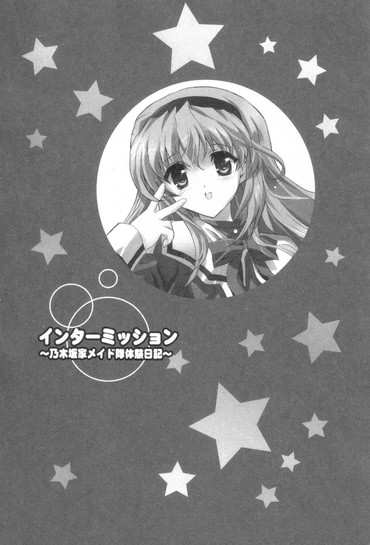

| [五十嵐雄策] 乃木坂春香の秘密12 | |
| 五十嵐雄策 | |
| (2015) | |
|
乃木坂春香の秘密 12
五十嵐雄策
|
底本データ
一頁17行 一行42文字 段組１段
乃木坂春香の秘密⑫
容姿端麗で才色兼備、『白銀の星屑』という二つ名まで持つ超お嬢様、乃木坂春香。彼女と過ごす花の高校二年生最後にして最大のイベントでもある修学旅行は、一つ一つが二人の大切な想い出として記憶されていったのだが、この旅行に懸けていたのは椎菜も同じだったらしく──。
修学旅行最終夜。女子部屋で始まったゲームの最中、椎菜の告げてきた「好き」発言と暗闇の中での唇同士の接触......。そんな出来事を経て、修学旅行は最終日を迎える。地元小樽で本当の自分の気持ちを明らかにしてくる椎菜。それを受け、今まで考えたこともなかった自分の心の内側を真剣に考え始めた俺は──。
いよいよ佳境を迎えるお嬢様のシークレット・ラブコメ第十二弾（はあと）
五十嵐雄策
五十嵐雄策の秘密⑫。10月３日生まれのＯ型。第４回電撃ｈｐ短編小説賞最優秀賞を受賞し、文庫デビュー。ようやく一息つきまして、あとはラストに向かって一直線～と、必至に執筆活動に勤しんでおります。夜な夜な作家さんたちとご飯......なんてことはありません。
イラスト：しゃあ
しゃあの秘密⑫。「電撃Ｇ'ｓマガジン」で『ＣＬＡＮＮＡＤ』のコミック連載中。今回のカバーは椎菜にしたいな～と呟きつつも、しっかりえっちぃ春香を仕上げました～。さすがです！

乃木坂春香の秘密 12
第四十四話
０
静かだった。
華や舞葉、裕人たちの帰ったホテルの部屋で、あたしは一人眠れずにいた。
周りの電気は消えていて、辺りは真っ暗。
目に入ってくるのは、すやすやと寝息を立てる麻衣と何やら「う、うーん、綾瀬っち、そこはいくら何でも入らないよー......」と寝言を発しながらじたばたと寝返りを打つ良子の姿だけで......
「......」
水を打ったような静寂。
そんな中、頭に浮かぶのはほんの数時間前の出来事だった。
華たちによる王様ゲーム、その流れによる罰ゲーム、そして......その後の停電でのアクシデント。
「............」
先走ったかとも思う。
フェアじゃないとも──思う。
だけど。
それだけど。
それでも後悔はしてない。
だって、きっとこれが最後のチャンスだから。
ここで何もせずに諦めてしまったら......きっともう、これから先何かに自信を持って行動できることなんてない。
「............うん」
大きくうなずく。
それとともに、この半年で少しだけ伸びた髪が揺れて頬にかかった。
──もう前に進むしかないんだ。
勢いとアクシデントに端を発した現状だけど......自分の手でサイコロを投げてしまった以上、最後まで駆け抜けるしかない......と思う。
そしてそれは絶対に望んだ結果へとつながるはずだ。
これは自分で選んだ道だから......
「......今度こそ......がんばる......っ......」
そう深く心に誓って。
あたしはゆっくりと目を閉じたのだった。
１
修学旅行最終日は、初日と同じようにいい天気だった。
窓の外に広がっているのはどこまでも晴れ渡った抜けるような青空。
視界に降り注ぐのはまぶしいまでに輝いている真っ白な日差し。
そんなマックスフルオープンな空模様に呼応するかのように、ホテルのロビーでは何人ものクラスメイトたちが皆楽しげな様子でワイワイと騒ぎ合っている。
まさに修学旅行の締めに相応しい盛り上がった雰囲気。
「............」
だがそんなハイテンションでモノを継ぎ合わせるために使われる半液体状の物質のようにノリノリな空気とは裏腹に......俺の心の中は微妙にスッキリしない感じだった。
どこか半濁りで不透明。
何というか、水平線の先に成層圏まで立ち上る大きな入道雲が見えている曇り空というか。
その原因となっているのはもちろん──
「──あ、ゆ、裕人......」
「！」
と、その時だった。
後ろから聞こえてきた声。
メガネの位置を直しつつ振り返るとそこにあったのは......胸のところに手を当てたフレンドリー娘の姿。
制服姿の椎菜は少し戸惑ったように遠慮がちにこっちを見ると、
「あ、ゆ、裕人......お、おはよう......」
「あ、ああ。おはよう、椎菜......」
「......」
「......」
その先の言葉が続かない。
微妙な感じの沈黙が釧路湿原を漂う海霧となって辺りを覆う。
普段のフレンドリーこの上ないやり取りとは大違いなぎこちなさである。
──うう、気まずい......
こんな油の切れたロボット二体のごとき雰囲気なのは──もちろん、昨晩の、その、あの一件が影響しているわけであって......
「あ、あー、今日もいい天気だな」
「う、うん、そうだね」
「ほ、北海道っていってもそこまで寒くはないんだな。氷点下まではいってないし......」
「あ、う、うん、小樽はまだあったかい方だから......」
「......」
「......」
適当な話題で場を和ませようとしてみるも結果は同じ。
というかむしろよりいっそう気まずさが増幅された感じである。
ぐ、ど、どうすればいいんだ......
まったくもって解決策が浮かんでこない。
そして影響といえばもう一つ。
こちらも現状の椎菜との立ち往生状態に勝るとも劣らないくらいに見過ごせないものがあって──
「あ......裕人、さん......」
「！」
そこで横から聞こえてきた小さな声。
その源である天然ぽわぽわお嬢様──春香は、こっちを見た後に頬を赤く染めると、戸惑ったように小さく顔を逸らした。
「......」
「......」
まるでオシドリ夫婦の仔鳥には実はオシドリ以外の遺伝子が含まれていることが多々あるという衝撃の事実を知ってしまった多感な中学生みたいな反応。
いつもの春香のものとは明らかに違うものであり......
──そう、影響とはこれ。
昨晩の一件から......春香もどこかよそよそしいというか、そこはかとなく上の空な雰囲気なのだった。
「............」
む、むう、やっぱり春香にも勘違いさせてしまったんだろうか......
何せ暗闇の中での偶発的な出来事とはいえ、昨晩のアレは客観的に見れば俺と椎菜とがベッドの上で抱き合っていたというアバンチュールな状況。
アクシデントのその後は特に何かがあったわけではなく、何となく流れでそのままお開きになり皆それぞれの部屋に戻ったわけなんだが......そのまま後に何も引きずらずにオールリセットというわけにもいかないのは当然であって。
「......」
「......」
「......」
ポジション的には椎菜・俺・春香、の位置関係。
三者三様で互いの出方を窺うみたいな感じの沈黙。
どこぞのバミューダをも凌駕する不穏な無言トライアングルになんかもう呼吸の仕方すら分からずに窮していると、
「──よーし、一組から六組まで全員集まってるなー」
と、そこで学年主任教師である川角先生の声が響き渡った。
「本日はいよいよ修学旅行最終日になる。これまでの七日間を締めくくる最後の日程であり締めの一日だ。基本的には自由行動となるが、三時間ごとの定時連絡を忘れんようにな。最終集合時間は午後八時半になるから、それまでには各自新千歳空港のロビーまで戻ってくること。また自由行動の際には白城学園生としての自覚を忘れずに慎みある行動を取るようにー」
その声にトライアングルを包んでいた緊張状態が僅かに解ける。
何となく空気が少しだけ軽くなって、
「あ、あー、そろそろ出発みたいだな」
「え、えと......は、はい......」
「じ、自由行動かー。た、楽しみだよね」
再び交わされ始める会話。
とはいえ普段に比べれば三十五倍はぎこちないやり取りである。
そんな俺たち三人の微妙な空気とは裏腹に、周りからは集まっている生徒たちの楽しげなわいわいとしたざわめきが聞こえてきた。
「ねえねえ、これからどうしよっか？」
「せっかく最終日なんだから、カップルで運河歩いたりとかしたくない？」
「あ、それいいー♪ 天狗山とかも♪」
楽しげで弾んだ声。
やはり旅行日程ファイナルステージということで皆色々とボルテージが上がり気味みたいである。
まあ俺たちはこれまでと同じく澤村部隊でまとまって動くんだろう。だったらその間に何とかして椎菜と春香との間のこの気まずさというか、色々な誤解やら行き違いやらを解決するしかない......と思っていたんだが。
「さー、それじゃあ澤村部隊、ロビー横のズワイガニの置物前に集合だー！今日は最終日なんだし、どうせだからクインテットで行くぞー！」
「は？」
飛び込んできたのはそんな部隊長（澤村さん）の声だった。
「クインテットで小樽の街を一陣の疾風のごとく駆け抜けるんだー！気合い入れていくぞー♪」
ノリノリでイケイケな様子。
いやいきなりそう宣言されても意味が分からんのだが......
「あ、あー、ええと澤村さん、クインテットってどういう......」
怪訝に思って訊いてみたところ、
「えー？ どういうも何も言った通りだよー。昨日夕方にテレビを見てたら三人組の動物の人形たちが楽器を演奏してる番組があってさー。それ見てたらなんかやってみたくなっちゃったー♪だからこれからクジで三人ずつに分けて、今日はその組み合わせで小樽の街を回っていこうぜー♪」
返ってきたのはそんな答え。
いやちなみに三人組ならトリオなんだが......
まあそれはさておくとしても、何ていうか相変わらずやることが適当というかその場の勢い任せだな。これもツインテール娘たちの系譜か......
「さー、というわけでやるぞー！ あ、クジはちゃんとあらかじめ作っといたからそこは心配しないでだいじょうぶだー♪」
澤村さんが実に楽しそうに（←いつも通り）そう宣言して。
当然というか部隊長のゴーイングマイウェイにどちらかと言えば穏健派揃いの隊員たちが逆らえるはずもなく。
クジ引きで三人一組のグループを決定することになった。
その結果は──
「よーし、私と春香ちゃんと麻衣、永井っぺと小川っぺと竹浪っぺ、それと──椎菜と綾瀬っちだー♪」
そんな組み合わせだった。
「え？」
「へ？」
ちょっと待て、それ人数がおかしくないか？
というかよくよく考えてみて、最初から八人のグループを三人ずつのトリオに分けようとする発想自体にムリがある。
強引に由香里さんとかを混ぜて三×三に分けるって手段もあるにはあったかもしれんが、あいにくあの人は昨日の夜の不祥事（セルフ電気風呂）の結果を受けてすでに東京に強制送還されていた。まあいてもセクハラとアルコール関係の迷惑行動しかしないわけだし、それ自体は割とどうでもいいことなんだが。
「あ、あー、澤村さん、割り振りが合ってないと......」
「そ、そうだよ、これだとあたしたちだけ二人に......」
戸惑う俺たちに、
「えー、だったら綾瀬っちと椎菜は二人でデートしてくればいいんじゃないー？」
「え？」
「へ？」
そんなあっさりとした言葉が返ってきた。
デ、デートって、何言ってんだ!?
唐突な問題発言に混乱状態になる俺たちに、澤村さんはにまにまと笑いながらこっそりと耳打ちをして、
「だって綾瀬っちは椎菜とらぶらぶなんでしょー？なんたって昨日ははぐはぐしてもふもふしてた仲なんだからさー♪この組み合わせも一石二鳥っていうかー」
「ハ、ハグハグ......」
「え......あ......」
う、その一言でまた昨夜の記憶が甦ってきた。
本当のところはハグどころでは済んでいないストライクなクリティカルタッチ。
思い出すとムダに混乱するだけだってのに、どうしても椎菜の方に意識が行ってしまって......
「......っ......」
それは椎菜も同じなのか、ちらっとこっちを見た後に下を向いて黙り込んでしまう。
それを見た澤村さんはにんまりと笑って、
「やーん、二人とももう新婚夫婦みたいですなー。ふっふっふ、どこからどう見てもお似合いなカップリングなのに初々しいんだからー♪」
気まずさ百二十パーセントな空気をまったくもって読まず、すげぇ楽しそうな顔でそんなことを言ってくる。
ぐ、普段は気を遣ってほしい時に完全スルーだってのに、どうしてこういうベクトルが完全に違う方向を向いてる時だけムダな気を遣いやがるのか......
俺は顔を上げて、
「そ、そうは言ってもな......。あ、あー、ほら、し、椎菜だってあれだ、やっぱり皆で回りたいっていうか、そっちの方がいいよな？」
もはや八方塞がって椎菜に助けを求めたところ。
「......」
「？」
求める返事が戻ってこない。
「し、椎菜？」
覚束無く思って再度名前を呼んだところ、
「............あたしも......いい......」
「え？」
返ってきたのはぽつりとしたそんなつぶやきだった。
「あ、あたしも......ゆ、裕人と......」
消え入りそうな声で一度下を向いたかと思うと、
「あ、あたしも......ゆ、裕人と、二人で行くのが......い、いい......っ！」
「へ？」
真っ赤な顔でそう叫びながらがばっと顔を上げてきた。
「あ、あー......し、椎菜......？」
「............」
確認のためにもう一度椎菜の方を見るも、椎菜は満開期を迎えたハイビスカスの花のように真っ赤な顔をしたままぎゅっと目をつむってうつむくだけである。
や、本気、なのか......？
「ひゅーひゅー、もー、椎菜ったら大胆なんだからー♪それじゃあ決定だねー。二人でしっぽりらぶらぶで行ってこーい♪」
「し、椎菜ちゃん、がんばってね」
「ち、羨ましい......」
「まさに棚からぼたもちですね......」
「なぜに裕人ばかりがこんな......」
澤村さんたちがそれぞれそんなことを言ってくる。
く、人の事情も知らずにまた好き勝手なことを......
そ、そういえば春香はどう反応してるんだ......？
この際他の部隊員たちのリアクションはともかくとして、そこが一番肝というか大事なところというか......
そう思って春香を見るも、
「............（ささっ）」
慌てたようにそそくさと目を逸らすだけだった。
それはあからさまに俺の方を見ることを避けているかのようで......は、春香......？
そんな俺に、
「ほらほら、ぼーっとしてないで二人とも早く行った行ったー♪あー、青春っていいなー♪」
澤村さんが心の底から楽しそうにそう宣言したのだった。
２
「ご、ごめんね、なんかムリに付き合わせたちゃったみたいで......」
「え？」
二人だけになったホテルのロビー。
顔を赤くしたままの椎菜が申し訳なさそうな顔でおずおずとそう言ってきた。
「りょ、良子がああいう突拍子もないことを言うのはいつものことなんだけど、それだけじゃなくて、あたしも、そ、その、いっしょになっちゃって......」
「あー、いや......」
別に椎菜と二人で行くのがイヤだってわけじゃない。
むしろフレンドリーで色々と話が合う椎菜といっしょにいるのは楽しいし、普段であればこっちから望むところだ。ただやはり春香の反応が気になるのと、昨日のことがどうしても冷凍したカニの解凍時の身ばなれのごとく頭から離れないだけで......
「だ、だけど、あたし......裕人と、思い出、作りたかったの......」
「え？」
と、椎菜がぽつりと言った。
「せ、せっかくの、一生で一回の高校の修学旅行......や、やっぱり大切な人といっしょにいる時間がほしかったの......。も、もう今日でおしまいだし、ここまでほとんど裕人とは過ごせなかったから......」
そこで椎菜は「......あっ！」と何かに気付いたように口を押さえて、
「──って、あ、あたし、何言って......!? ご、ごめんね、裕人、勝手なことばっかり......。こ、こんなの迷惑だよね......自分勝手で独りよがりで......」
「椎菜......」
「ほ、ほんと、あたし何やってるんだろ......あ、あはは......」
肩を落としながら力なく声を揺らしてくる。
その姿はまるで落ち込んだ仔猫（普段はワンパク）のようで......
「──そんなこと、ない」
「え......？」
それを見た俺は、思わずそう口に出していた。
「迷惑なんて、そんなことは絶対ない。椎菜といっしょにいる時間は落ち着くし、だから俺も椎菜と過ごすのは楽しいと思ってる。自分勝手なんてこれっぽっちも思わない」
「ゆう、と......」
椎菜の目を見ながら真剣に告げる。
その内容自体は俺の本心百パーセントだ。さっきも言ったが椎菜といっしょにいることを楽しいと思うこそあれ、迷惑なんて思うことはそれこそクリオネのため息ほどもありやしないからな。
「あ、あり、がとう......そう言ってもらえると、そ、それだけで、あたし......」
きゅっと手を自分の胸に当てて椎菜が小さく声を発する。
その目は少しだけ潤んでいて......
「......」
う、なんか妙な気分だ......
そんな椎菜の姿を見ていると少しだけ胸の奥がビグンッ！と痙攣するというかヘンな風に震える感じで......むう、最近よく椎菜のこういう女の子らしい面を見てる気がするな。
俺はゴホンと咳払いをして、
「──あ、あー、それじゃあ行くか。どうせいっしょに行くなら、とことん楽しまないと損だしな」
「あ──そ、そうだねっ」
その言葉に椎菜は両手をぎゅっと握りしめながら大きくうなずくと、
「だ、だったらあたしに案内させて！ これでも地元だし、小樽周りなら色々と隠れスポット的な場所も知ってるから！」
「そうなのか？」
「う、うんっ」
「分かった、じゃあ任せるな」
「ま、任されたっ！」
顔の横に敬礼のように手を当てながら一生懸命な声でそう言ってきてくれる椎菜。
そのリアクションはどこまでも直向きで真っ直ぐで......見てるとこっちも何だか前向きになってくるな。
というわけで始まった椎菜との小樽巡りだったが。
椎菜が最初に向かったのは、運河から一本離れた道の奥にあるこぢんまりとした建物だった。
「ここは......？」
「ガラス工房だよ。お祖父ちゃんの友達がやってるお店で、ちょっと見た目は古い感じだけどすっごくキレイなガラス細工を作ってるところなんだー」
「へえ......」
そういえば小樽といえばガラス細工の店が有名だったっけか。
昨日は澤村さんが「北のウォール街がバーニングでスパークだー♪」とかでそっち方面を巡るのにこだわったのと、途中から華たちと商店街の手伝いに参加したためあまり見て回れなかったが、確かにオルゴールと並んでの特産品なんだよな。
「こんにちはー！」
椎菜が店の中に向かって呼びかける。
「はい、いらっしゃい！ お土産用に小樽名産のガラス細工が揃ってますよ──って、お、椎菜ちゃんかい！」
「はい！ お久しぶりです！」
「おお、本当にご無沙汰だね！ どうしたんだい、今日は？」
「えっと、ちょっと高校の修学旅行でこっちに来ていて......」
「ほう、そうなのかい。一年ぶりくらいかねえ。懐かしいなあ......」
店主であろうお爺ちゃんがまるで自分の孫を見るような優しい笑みで答える。
むう、ホントに椎菜のことを大事に思ってるんだな。
しばしそんな感じに二人で会話をしていて、
「......ああ、スマンスマン。つい昔のことを思い出して長話になっちまった。──で、やってくかい？」
「はい、お願いします！」
そう元気に返事をすると椎菜はくるりとこっちを向いて、
「ね、裕人もやってくでしょ？ ガラス作り、面白いんだよ♪」
「え、いいのか？」
「うん、だってこれをやるために来たんだもん♪」
楽しそうにウインクをする。
店主のお爺ちゃんもにこやかに微笑みながら「椎菜ちゃんの友達なら大歓迎だよ。ぜひやっていっておくれ」と言ってきてくれる。
そういうことなら断る理由はこれっぽっちもない。
「じゃあ、すみませんがお願いします」
「よーし、決まり♪ ふふ、かわいいの作るぞー！」
椎菜が楽しそうに腕まくりをして。
というわけでガラス作り体験をやることになったんだが。
「ぬ、意外に難しいな......」
作業は見た目よりも複雑だった。
とりあえず一番簡単そうな蜻蛉玉とやらを作ってみることにしたんだが、予想以上に思ったようにカタチを作ることができない。
何というか、案ずるよりも産むが難しな感じである。
「むう......」
「ほれ、そこでもう少し手首を捻れば滑らかに動いて......」
お爺ちゃんがそう教えてきてくれるがやはり簡単にはいってくれないわけであり。
苦戦する俺の横で。
手慣れた感じに作業を進める椎菜は、
「どう、裕人？ 進んでる？」
「いや、意外に手こずってるというか......」
「そうかな？ けっこうよく出来てると思うけど。そのかわいいハブクラゲ」
「これは蜻蛉玉だ......」
「あ、そ、そうなんだ......」
椎菜が何とも言えない苦笑いを浮かべる。
うう、まあ自分で見てもほとんどクリーチャーだからな、これ......
「あー、椎菜はどんな感じなんだ？」
「あたし？ いい具合かな。ほら、これ裕人なんだよ♪」
「俺？」
「うん、じゃーん♪」
そんな楽しげな擬音とともに差し出された手。
その上にあったのは──
「どう、けっこういい感じでしょ？ せっかくだからイカといっしょに裕人が戯れ合ってるっていう夢の競演を実現させてみました♪」
「............」
いやなんか縮尺的に、メガネをかけた人型のオブジェクト（俺な）が巨大な化け物イカに巻きつかれて喰われかかってるようにしか見えんのだが......
というか「せっかくだから」の意味さっぱりが分からん......
しかしさすがというか椎菜は上手いな。
ガラスの素材をうまく活かしてイカの質感や独特のぬめり感がばっちりと再現されている。......まあ、そのせいで余計リアルに俺が襲われてる感が出てもいるんだが。
「ん、でも椎菜、そんなの作ってどうするんだ？」
ふと思った。
イカは椎菜のフェイバリットアイテムだからともかくとして、それに俺が襲われてるなんてある意味ホラーでシュールな要素を付け加えてもどうしようもないよな？
俺のその質問に、
「ん、秘密だよ♪」
口元に人差し指を当てていたずらっぽく椎菜はそう答えたのだった。
ガラス工房を出て、椎菜が次に向かったのは港近くの市場のような場所だった。
「？ ここに何があるんだ？」
「ふふー、ま、いいからいいから♪」
そう言う椎菜に背中を押されてやって来たのは市場の外側に位置する少し開けたところ。
簡易の仮設テントのようなものが建てられていて、その下に水が入った円形の大きめな生け簀のようなものが置かれている。
近くでパイプ椅子に座っていたおっちゃんに、椎菜は声をかけた。
「こんにちは、源さん！」
「お、椎菜嬢ちゃんじゃねえか！」
椎菜の呼びかけにおっちゃんが目を細めて答える。
「どうしたんだい？ 確かお父さんといっしょに東京に行ったって聞いてたが？」
「はい、実は修学旅行でこっちに寄ることになって」
「そうなんかい。いやー、椎菜嬢ちゃんがいなくなっちまってからはさみしかったよ。あんな毎週のように来てくれるお得意さんはいなかったからなあ。──お、てことは当然やってくんだろ？ほれ」
さっきと同じようなやり取りをやりつつおっちゃんが取り出したのは釣り竿。
「これは......？」
「見ての通り釣り竿だよー。ここは釣り堀で、活イカ釣りができるの。それもアオリイカとヤリイカと真イカの夢の三種混合なんだよ！」
「イカ......」
確かに見てみれば生け簀の中をたくさんのイカたちが親の仇のようにゆるゆると泳ぎまくっている。
それはなかなかにエキゾチックでシュールな光景だが、きっとこのイカ娘からすればパラダイスな眺めなんだろうな、きっと。
「ここはうちの実家の割と近所で、ちっちゃい頃からお父さんに連れられてよく来てたの。源さんにも色々お世話になって」
「へえ......」
椎菜のその言葉に、
「ああ、椎菜嬢ちゃんは昔からイカが好きだったよなあ。他の妹弟たちが飽きて他のことをしてる時も、椎菜嬢ちゃんだけはイカに夢中で......」
「ちょ、ちょっとおじさん」
「そういえばこんなこともあったっけか。椎菜嬢ちゃんが五歳くらいの時に〝あたしおおきくなったらイカとけっこんするー♪〟って言って好幸さんを泣かせて......」
「そ、それはそうだけど......も、もう......！」
む～と口元を曲げながら真っ赤になる椎菜。
ふむ、椎菜のイカ好きは昔からの筋金入りだったんだな。にしてもその時の椎菜父の心境を考えると色々と複雑だが。
椎菜は「こ、こほん」と咳払いをしながら人差し指を立てて、
「ま、まあ昔のことはもういいじゃん。──ほ、ほら、それより早くイカ釣りやろうよ！」
「ん、ああ」
長さ五十センチほどの釣り竿を押し付けるように渡してくる。
というわけで、イカ釣りが開始されたわけだが。
「よーし、一杯目、げっとー♪」
「......」
「ん、今日はなかなかいい調子かも。こんなに開始早々食いついてきてくれるのはそんなにないし──お、またヒットだ！」
「............」
「わ、また来たー♪ へへー、三杯目三杯目ー♪」
楽しそうにフィーバーする椎菜の横で、
「............」
......釣れない。
俺の竿にはまったくもってヒットがやってこない。
面白いくらいに（いや面白くないんだが）当たりがなしで、まるで俺の針だけをピンポイントでイカが避けて通っているかのようである。
──く、今そこのイカ、鼻息みたいに墨を吐き出して俺の針に吹きかけやがったぞ......
完全にバカにされている。舐められまくっている。ぬう、吸盤持ちの軟体動物の分際で......
「............」
ぐ......このままじゃイカン。
イカ釣り歴十五年（推定）の椎菜までとは言わんが、せめて二、三杯くらいは釣っておきたい。ボウズのまま終わるのだけは何とか避けたいところだ。
だが。
「七杯目、いただき～♪」
「......」
「うんうん、絶好調ー♪ もう止まらないって感じだよー♪」
「............」
どんどんと釣り上げていく椎菜の横で、俺の竿はピクリとも動かないまま時間だけが過ぎ去っていく。
ほとんど逆入れ食い状態もいいところである。
「ぐう......」
思わずそんな声が出る。
こうなったらもう贅沢は言わんが、何とか一杯だけでも......っ！
気合いを込めて、生け簀の中を悠々自適に泳ぐイカども目がけて竿を振り下ろす。
と、
ガッ！
「お！」
引っかかった。
ノンキに水面近くを泳いでいたイカがたまたま針に引っかかってくれた。
──ぬう、逃がすわけにはいかん！
今までの釣れなさっぷりからしてこれがおそらく唯一のチャンスだ。
竿を握る手に力を込めて一気に釣り上げようとして、
スポッ！
「あっ！」
すっぽ抜けた。
針から外れたイカはきりもみ状にクルクルと宙を舞うとそのまま放物線を描いて飛んでいき......椎菜の制服の胸元にぬるっとダイレクトに着地した。
「え......きゃ、きゃあああっ!?」
椎菜が絹を裂いたような悲鳴を上げる。
「し、椎菜！」
「や、ちょ、ちょっとこれ、やだ......っ。......ぬ、ぬるぬるする......っ！や......んっ......」
身体をよじらせながら何とかイカを振り払おうとするものの。
だがそれで驚いたのか、不時着したイカは軟体な身体を活かして逃げるようにそのまま下の方へと潜り込んでいった。
「え!? な、何で中に......っ......あ、や、やん......っ......だ、だめ......だって......っ......そ、そこは......ゆ、裕人、た、助けて！」
「え、あ、ああ！ で、でもどうすれば......」
まさか直接制服の中に手を突っ込んで暴れ回るイカをふん捕まえるわけにもいくまい。
身悶えする椎菜の前で手をこまねていると、
「や......っ......も、もっと奥なんて......い、いやっ......あ......っ......」
「......」
さらにイカは椎菜の制服の深奥へと侵入を果たしていったようであり......
い、いや......だからどうすればいいんだ!?
結局そのまま隣で見ていることしかできず。
椎菜の制服の中に潜行（？）したイカ（ヤリイカ）が捕獲されたのは、それから五分後のことだった。
「あ、あー、楽しかったー♪」
両手を頭の上で組みながら椎菜が大きく伸びをする。
「ま、まあ、最後のあれはちょっとサプライズだったけど、やっぱりイカは最高だよね！あの流れるようなフォルムといい滑らかな動きといい、ほんと並ぶモノはないっていうか！」
満面の笑み。
ちなみにその手にはイカが泳ぐビニール袋が握られていた。
お土産としてそれぞれ一杯ずつだけもらったんだよな。金魚すくいのオマケ状態というか、まあ持って帰ってイカ刺しにでもすればルコたちが狂乱麗舞するかもしれんが。
そんな俺の横で椎菜はビニール袋の中をうっとりと見て、
「うん、この子もいいカタチしてる。それになかなか美形だよね。将来が楽しみだなー♪」
「ホントにイカが好きなんだな......」
「うん、大好き！ 世界で三番目くらいには好きかも！」
その順位はいい方なのか？
判断基準がいまいち分かりかねるというか。
まあ椎菜と言えばイカ、イカと言えば椎菜だからな。今さらその辺を深く考えたら負けかもしれんが。
そんなことを何となく考えていると、
「あ、そうだ。せっかくだからこの子に名前を付けてあげなきゃね。どんなのがいいかな？」
「名前？」
「ん、そだよ。どうせならかわいいのがいいな......んー......あ、決めた、〝裕人〟にしよ♪」
「おい......」
牧場での乳牛たちの恥辱ネーミングに引き続きまたそのパターンか。てかこのイカ、食べるんだよな......？
俺のその突っ込みに、
「ううん、食べないよ。この子は持って帰って水槽で飼うんだもん」
「へ？」
「だから飼うの。明日から天宮家の一員だよ♪」
ビニール袋を大切そうに抱えながらぴっと人差し指を突き出してくる。
いやイカって飼えるもんなのか？ そりゃあ水族館とか料亭とかではたまに見かけるが、個人の家庭でイカがテンタクルダンスをしてるのは幸か不幸か今のところ一度も遭遇したことはないんだが......
そんな俺の疑問などまったくもって気にした風もなく、
「ふふ、よーし、決まり！ 今日からキミは〝裕人〟だよ。一番いい水槽に入れてかわいがってあげるからね♪」
「勘弁してくれ......」
「あははっ」
楽しそうに笑う椎菜。
その笑顔はどこまでもあけっぴろげで真っ直ぐで、こっちの気持ちまでウキウキと上がり調子になってくるようなフレンドリーなものである。
「......」
ふむ、やっぱり何だかんだでこのフレンドリー娘といっしょにいると楽しいな。
他愛のない話をしているだけで心が浮き立ってくるというか。根本的に会話とかフィーリングとかの波長が合う感じだ。
「ん、どしたの、裕人？」
「いや、椎菜といると楽しいと思ってな」
「ふーん、あたしも裕人といるのは好きだよ？いっしょにいると落ち着くし話してると面白いし」
「そっか」
「うんっ♪」
どこまでも明るく人懐こい返事。
まさにフレンドリー娘の真骨頂といった空気だ。
「......」
だけどそんな中、やっぱり少しばかり気になることがあった。
それは昨日のあの出来事。
不意打ちでサプライズハプニングな接触と、その後の椎菜の告白。
なんつーか、あれは......その、具体的にはどういう状況で生じたことなのか。
そしてそれに対して椎菜はどう思っているのか......
訊きたいことはそれこそ今流行りの高尾山（ミシュラン三つ星）ほどあるんだよ。
「次はどこに行こっか？ どこか行きたいところとかってあったりする？」
「え、ああ、特には......」
「そっかー。んー、だとどうしよっかなー。めぼしいところは大抵回ったし......あ、でも裕人といっしょなら、どこに行っても楽しいんだけどね♪」
楽しげにそう笑みを浮かべる椎菜。
その笑顔は本当に曇りないものだったが......だけどやはりそれをハッキリさせないことにはどうにも気にかかって仕方がない。
こうなったら──やはりここはストレートに確認してみるしかないかもしれん。
なので俺は意を決して、
「あー、あのさ、椎菜」
「んー？」
「ちょっと訊きたいことがあるんだが、いいか？」
「訊きたいこと？ ん、いいよ、なに？」
「その、昨日の夜のことなんだが──」
引っかかりの核心ポイントに触れようとしたところで、
「あー、椎菜姉ちゃんたちみっけー!!」
「え？」
なんかそんな声に遮られた。
やたらと元気で大きな声。
思わず声が飛んできた先に目をやってみると、そこにいたのは──
３
「おー、そうだ、やっぱり椎菜姉ちゃんだ！ さすが悠里姉ちゃん、よく見つけたな！」
「うん！ 任せて！ これでも視力は両方とも1.5だもん！」
やたらと明るくて弾んだ声。
──そこにいたのは、それぞれ学ランとセーラー服姿の二人の中学生（？）たちだった。
「幸一、悠里!?」
椎菜が驚いたように声を上げる。
それに手を振り返して中学生（？）たちはこっちに駆け寄ってくると、
「よお、姉ちゃん、ひさしぶり！」
「けっこうごぶさただねー！ 元気にしてた??」
「ふ、二人とも、何で......」
その場で止まったまま目をぱちぱちとさせる椎菜。
いや〝姉ちゃん〟ってことは、もしかしてこの二人は......
「あー、ええと椎菜、この二人は......」
椎菜の顔を見て訊いてみたところ、
「あ、ご、ごめん、ちょっとびっくりしちゃって......。えっと、この二人はあたしの弟と妹たちで......」
「天宮幸一、十四歳中二っす！」
「同じく天宮悠里、十五歳の高校一年生でーす♪」
揃って手を挙げながら元気に挨拶してくる。
人懐こくてフレンドリーなテンション。
むう、やっぱりそうか。確かにちゃんと見てみれば二人とも椎菜に似てるな。特に妹の方は椎菜をそのまま少し小さくして髪を長くした感じである。ミニ椎菜......？
そんな感じに突然の椎菜弟妹の登場に若干面食らっていると、
「で、でも二人ともどうしてあたしたちのこと......？こっちに来るのは一日だけだから、言ってなかったはずなのに......」
その椎菜の言葉に、
「ああ、それなら華ねーちゃんたちに聞いたんだよ」
「華たちに......？」
「うん、椎菜お姉ちゃんたちがこっちに帰ってきてるから、ちゃんと捕獲するようにって。お姉ちゃんの性格からしてきっとイカ釣り小屋の辺りに行くだろうからってさ～♪」
弟と妹──幸一と悠里が声を揃えてそう答える。
ナルホド、あの二人のディレクションか。あの二人ならいかにもやりそうというか。にしてもさすが中学からの付き合いだけあって椎菜の行動をばっちり読んでるな。
「だけど姉ちゃん、水臭いぜー！おれたち姉弟じゃんかー。カレシを連れてこっちまで来たんなら挨拶の一つくらいしてくれないとさー」
「!!」
その言葉に椎菜の顔がかーっと真っ赤になった。「ちょ、ちょっと、カ、カレシって、な、何言ってるの!?」
「ん、だってそうなんだろー？ 姉ちゃんが男を連れてくるなんて今までなかったし、他にないじゃんかー。な、悠里姉ちゃん」
「んー、あたしはフィアンセだって聞いたわよ？舞葉さんが言うには、やっとお姉ちゃんに白馬の王子様が現れたからお赤飯を炊いて祝福してあげなきゃって♪」
「えー、カレシもフィアンセも似たようなもんだろー」
「違うわよ～。カレシはただの付き合ってる人だけど、フィアンセって言ったら運命に選ばれたデスティニーな王子様じゃない。その間には越えられない乙女のピンク色の壁があるんだからー」
口々に言いたいことを口にする。
むう、なんか壮大に勘違いしてるみたいだな。
別に俺と椎菜はそんな間柄じゃないってのに......
だがそれを聞いた椎菜がさらに顔を釣られたてのキンキ（カサゴ科の魚）みたいに赤くして、
「な、ななな、何をさっきから好き勝手なこと言ってるの！そ、そんなこと......っ！カ、カレシだとか、フィ、フィ、フィ、フィアンセだとか......っ!?」
両手を振り回してぱたぱたと必死顔でそう反論する。
そんな椎菜を見て弟妹たちは笑いながらこっちを見て、
「こんな姉ちゃんだけど、よろしくな。にいちゃん！」
「お姉ちゃん、こういうことになるとすぐテンパっちゃいますけど、普段は優しくて家庭的でとってもいいお姉ちゃんですから♪」
「え、あ、いや」
まだ自己紹介もしてない内にいきなりよろしくされるのも妙な気分なんだが。
すると、
「ん？ だってにいちゃん、〝裕人〟って人なんだろ？」
「お姉ちゃんのクラスメイトでロンドンで楽譜を貸したのがきっかけで知り合った、隣の席の人なんだよね？」
「それはそうだが......」
何でそこまで知ってるんだ？
「ん、それならいいんだ。それだったら間違いないからな！」
「うん、あの〝裕人〟さんだもんね♪」
二人揃って笑顔でうなずく。
〝あの〟......？
思わせぶりなフレーズに思わず怪訝な顔になっていると二人はにんまりと笑って、
「まあそれはともかくとしてさ、二人とも、とりあえずうち来るんだろ？」
「え？」
「うちだよ、うち。姉ちゃんの家」
「椎菜の家......」
って、天宮家（実家）ってことだよな？
「え、ウ、ウチって、何でそんな......」
驚いたように声を上げる椎菜に、
「えー、だってせっかくここまで来て寄らないなんてそんなのありえないじゃーん」
「うん、それにデートのクライマックスって言ったらやっぱり家族紹介が定番だと思うよ、お姉ちゃん♪」
幸一と悠里が揃って楽しそうにそう言う。
「え、え？ デ、デート!? か、かかか家族紹介って......っ......!!」
その言葉にさらにまごまごと顔を赤くする椎菜。
なんかもう手押し車を必死に回すちんまいハムスターみたいである。
そんな椎菜を微笑ましいものを見るように楽しそうに見つめて、
「それにさ、にいちゃんだってちょっと見てみたいだろー？」
「え、俺？」
「そうそうー、だって姉ちゃんが去年まで暮らしてた家だぜー？子供の頃からの残り香とか色んなものがたーっぷり染みついててさ。興味ない？」
「ん、そりゃあまあ......」
後半の意味が分からん部分はともあれ、まったくもって興味がないと言われればウソになるかもしれんな。
「え、そう、なの......？」
ちらっと椎菜がこっちを見てくる。
「ん、ああ」
「そ、そっか」
そう答えると椎菜は何かを決意したかのようにぐっとうなずいて、
「う、うん、分かった。ちょっと恥ずかしいけど、それだったら......」
小さな声でそう返してきた。
「やりー、そうこなくっちゃ！」
「お姉ちゃん、乙女だねー♪」
幸一悠里たちがうんうんと満足そうにそう言って、
「も、もう、ほんとにあんたたちは......」
それに椎菜が苦笑気味に答えて。
というわけで、椎菜の実家へと向かうこととなった。
椎菜の家は、小樽の街中から十分ほど歩いたところにあった。
瓦ぶきの屋根に木造の外壁。門から玄関に行くまでには趣のある飛び石が並ぶ昔ながらの日本家屋といった感じの建物。
周りに広がっている庭の奥には大きな道場のような家屋も見える。
「あれは......」
「あ、うん、あれは薙刀道場なの。お祖父ちゃんが師範をやってる天宮神灯流っていう流派の練習場で、あたしもよく稽古してもらってたんだー」
「へえ......」
「姉ちゃん、すげぇ強いんだぜ！ たぶんうちの道場だと祖父ちゃんの次くらいで！」
「大人でも勝てる人はなかなかいないんですよ、王子様♪」
幸一、悠里たちがそう説明を加えてくれる。
そういえば椎菜は薙刀もやってるんだったっけか。
すっかり忘れてたというか、近くに春香がいるためあまり目立たんが、椎菜自身ピアノも弾けて薙刀も振れる色々と万能でオールマイティ完璧超人タイプなんだよな。
「久々に姉ちゃんの薙刀も見てみたいなー。──あ、ちなみに母ちゃんにも姉ちゃんたちが帰ってくることは伝えといたから、その辺は大丈夫だぜ」
「そうなんだ。ありがとね」
「ううん、お姉ちゃんが白馬の王子様を連れて来るって言ったらお母さんもすっごく喜んでたよ♪」
「だ、だから、そういうんじゃないって！」
瞬時に顔を赤くしながら反論する椎菜。
そんなことを言い合いながら四人で家の中へと入っていく。
「姉ちゃんたち連れてきたぜー！」
幸一がそう大声で叫ぶと、玄関の奥から「はーい」と人の声がした。
続いて現れたのは三十代くらいの女の人。
椎菜や妹とよく似た雰囲気を持っているこの人がおそらく......
「あ、お母さん！」
「おかえりなさい、椎菜」
椎菜の反応ににっこりと優しげに応える。
むう、やっぱりこの人が椎菜のお母さんか。
「幸一たちや華ちゃんたちから聞いたわよ。こっちに来るなら寄ってくれてもいいじゃない。まったく、ヘンなところで遠慮するのは変わってないんだから」
「あ、う、うん、ごめんなさい」
「もう、また、そういうこと言う。──でも、おかえりなさい」
「ん──ただいま」
少し照れたように椎菜がそう答えて、
「ふふ。──あら、それで、そっちが例の？」
ちらりと椎菜母がこっちを見た。
「うん、裕人にいちゃんだぜ！」
「王子様なんだよ～♪」
その幸一たちの言葉に椎菜母はそれまでの様子を変えてにんまりと笑って、
「あら、やっぱり♪ うんうん、予想通りって感じね。椎菜から色々話は聞いてたから、はじめましてって気はしないかなー」
「ちょ、ちょっと、お母さん!?」
椎菜が慌てたように間に入ってーる。
「何よ、いいじゃない。普段電話とかではあれだけ楽しそうに裕人くんのことを話してるくせに。あ、それとももしかして照れてるの？このこのー♪」
「そ、それは、その......」
子供のような笑顔とともに発せられたからかうような言葉に椎菜がもごもごとなる。
むう、なんか知らんがまた俺の名前が話題になってるのか？華や舞葉と会った時の反応といいさっきの弟妹たちのリアクションといい今のこれといい、一体俺は小樽でどんなキャラで通ってるんだ......？
そんなことを考えていると椎菜母は楽しそうに笑って、
「で、今日はどうしたの？ ......もしかして、婚前旅行とか？」
「ち、違う！ 修学旅行でこっちにちょっとだけ来ることになって、そ、それでせっかくだからってウチに寄ってみたのっ！こ、幸一たちから聞いてるんでしょー!?」
「ふーん、せっかくだから、ねえ......。ま、いいわ。ほら、こんなところで立ち話も何だし、とりあえず中に入っちゃいなさいな。裕人くんもどうぞ♪」
「あ、お邪魔します」
「う、うん......」
どことなく納得のいかない顔の椎菜とともに玄関で靴を脱いで室内へと足を踏み入れた。
通された場所は客間だった。
見た感じは普通の和室だが、暖房が効いていてどの部屋も温かく保たれてるのはさすがに北海道といった感じだな。
「それじゃあ裕人くん、ちょっと黒豆茶をいれてくるから待っててね」
「あ、お構いなく」
「椎菜もせっかくだからくつろいじゃいなさいな。なんだったら私たちのことは気にしなくていいから、二人きりのあまーいマスクメロンタイムを堪能するとか、きゃっ♪」
「い、いいから早く行ってっ！」
「はいはい」
「じゃあまたあとでな、にいちゃん！」
「ごゆっくりしていってくださいね、王子様～♪」
椎菜の声ににやにやと笑いながら椎菜母と弟妹たちはフスマの向こうへと消えていった。
「ご、ごめんね裕人。ヘンな家族で......」
「あー、いや」
椎菜の言葉にそう答える。
何というかまあ、それぞれ個性的なキャラであることは否定せんが。
だけど仲がいいのは分かる。
乃木坂家とはまた違った方向性だが皆アットホームでフレンドリーで感じがいいし、それにまたずいぶんフランクな感じのお母さんというか。見た目もまた秋穂さんや那奈緒さんとは違った方向性で若さを体現している感じだ。
ここにあの娘コン気味な椎菜父が加わったのが天宮家なんだろう。
「──それにしても、ここが椎菜の住んでた家なんだな」
「あ、う、うん」
ちょこんとヒザの上で両手を揃えながら椎菜が小さくうなずく。
「帰ってくるのはけっこう久しぶりなんだけど、やっぱり落ち着く感じかな。いちおう生まれた時から去年の夏までずっと住んでたから、愛着もあるんだ」
「へえ......」
そんなに昔から北海道に住んでたのか。
「だけど......なんか不思議な気分かも。こうやって実家に帰ってきて裕人といっしょに客間に座ってるなんて」
「ん、そうか？」
「うん、何だか現実じゃないみたいっていうか......」
ふむ、そういうもんなのかね。
「で、でも、裕人でよかった......」
「え？」
「あ、い、いちおうね、この家に男の子を呼ぶの......裕人が初めてなんだよ？あ、も、もちろん東京の方の家でも呼んだのは裕人が初めてなんだけど......。でも、どっちも裕人が初めてで、よかったな、って......」
「椎菜......」
むう、嬉しいことを言ってくれるな。
少しだけ胸の奥が暖かくなってくるというか......
「あ、べ、別にヘンな意味とかじゃないんだよ？ただほんとにそう思っただけで......」
「ん、ああ、分かってるさ」
「そ、そう......」
「......」
「......」
「......」
そのままテーブルを挟んで向かい合ったまま何となくお互いに無言になる。
ふいに訪れた沈黙。
だけどその静けさは昼間のような気まずさからくるものじゃなくて、どこか気恥ずかしいような照れくさいような妙な感じのサイレントであって......
「あ、な、なんかヘンだね......」
「ん、そ、そうだな」
「な、何で静かになるんだろ？ あ、あはは......」
「......」
「......」
言葉少なの状態をキープしたまま二人してテーブルの上にあった『白い恋人』（さすが北海道）を手に取る。
屋外の風が窓を揺らす音と包装紙を開ける音だけがガサガサと室内に響いていて。
と、その時だった。
......じ～.........
「？」
どこからか視線を感じた。
ふと見てみると、後方のフスマの陰から顔をちょこんと出してこっちをじ～っと見つめている女の子の姿があった。
見たところ小学生くらいのこの子は......
「え、な、菜々子？」
椎菜が驚いたように立ち上がる。
また新しい名前が出て来た。菜々子って......？
突然出現してきたニューネームに首をひねっていると、
「あ、え、ええと、この子は菜々子っていうの。一番下の妹で......」
「え、そうなのか？」
「う、うん。小学校一年生なんだけど......どうしたの、菜々子？」
椎菜がしゃがみ込んで目線の高さを同じにしてそう尋ねる。
すると、
「......おねーちゃんと、けっこんするの......？」
「え？」
「......おにーちゃん、しいなおねーちゃんとけっこんするの？おむこさんになるの......？」
じいっと上目遣いにこっちを見ながらそんなことを言ってきた。
「え、い、いや」
いきなり何を言い出すんだ、この子は!?
唐突な椎菜妹（幼女）の発言に困惑していると、
ガタガタバタン！
「!?」
と、今度はそんなハデな音とともに、菜々子の後ろにあったフスマが勢いよく倒れた。
続いてドサドサドサと倒れかかってくるいくつもの人影。
折り重なるように床に倒れていたのは......幸一や悠里などの弟妹たちだった。
「............」
しかもなんか......さっきより増えてないか。
軽く見積もって明らかに五人以上いるんだが。
「あ、あいたたたたた......」
「せっかくいいシーンだったのに悠里姉が押すから......」
「え、あたし？ 三葉だって押してたのに～」
「............ぐすっ......」
「ほら、姉ちゃんたち早くどけって。菜々子が潰されて泣きそうになってる」
......おまけに椎菜母まで混じってるな。
「ちょ、ちょっとみんな、何やってるの!?」
椎菜がほとんど悲鳴のように声を上げる。
「え、何って、なあ......？」
「椎菜お姉ちゃんと王子様が何を話してるのか気になって......」
「うん、悠里姉が椎菜姉の王子様が来たっていうから、これはぜひ見ておかないとって思って......」
「やっぱりほら、娘の成長を見守るのは母親の義務だと思うし......」
「............ぐ、ぐすっ......」
「だから菜々子が泣きそうだって」
口々にそんなことを言い合う。
「そ、そんな理由で......っ！ し、しかも、お、お母さんまでいっしょになって......っ！」
そう声を上げながらほとんど涙目になる椎菜。
まあ......さすがにこれはなあ......
俺はどこぞのツインテール娘たちやらでこういったもんには慣れてるが、普通フスマ裏からのサプライズアタック（×六）なんてもんとは無縁の毎日だろう。
どうフォローしようかと悩ませていると椎菜母が、
「──ま、まあ、これはほんのお茶目っていうか......。こ、こほん。と、とにかく、ほら、あれよ？せっかく椎菜が裕人くんを連れて帰ってきたんだからきちんとみんな紹介しておこうと思って。はい、みんな」
「は～い、さっきご挨拶しましたけど、天宮家次女、悠里十五歳で～す♪」
「長男、天宮幸一、十四歳っす！」
「三女、天宮三葉、十二歳です。よろしくお願いします」
「次男、天宮義男、十歳です」
「............あまみやななこ......ななさい......」
「そして最後が私、天宮家母の天宮百合恵、年齢は秘密よ～」
「............」
これで全員なのか。妹が三人に弟が二人の五人妹弟。すごいな......
ちなみに悠里がロングヘアーで三葉が椎菜よりも少し長いくらいのセミロング、一番下の菜々子がやはり背中くらいまでのロング。長男の幸一がゴマシオみたいな坊主頭で次男の義男が短髪を立てている感じだった。
天宮家家族一同（父、祖父を除く）が揃った圧巻な光景に少しばかり呆然となる俺に、
「──ところで裕人くん、ご飯食べていくでしょう？」
「え？」
百合恵さんがそんなことを言ってきた。
「せっかくここまで来たんだから天宮家の味を味わっていってもらわないとね。時間もまだあるでしょ？」
「それは......」
新千歳空港に二十時半くらいまでに戻ればいいわけだから確かに時間的には大丈夫なんだが。だけど突然お邪魔してそこまでお世話になるのも迷惑じゃないだろうか？
「ほらほら、食べてけよ、にいちゃん！」
「東京での椎菜お姉ちゃんの話とか聞かせてくださ～い♪」
「......たべて、いかないの......？」
椎菜の弟妹たちそう言ってくる。
むう、そう言われては謹んでお断りするってわけにはいかんな。
「ん、分かった。それじゃお言葉に甘えて......」
「いえーい！ さすが裕人にいちゃんだぜー！」
「それでこそ王子様ですね～♪」
「どうぞどうぞ、裕人お兄さん！」
「台所はこっちっす」
「......（嬉しそう）............」
それぞれに歓迎の言葉を口にしてくれる弟妹たち。
むう、ここまで喜んでくれると嬉しいものがあるな。
とまあ、そういうわけで料理をごちそうになることになったわけだが。
４
「それじゃあ裕人くんの訪問と椎菜の一時帰還を祝して──いただきます♪」
「「「いただきまーす！」」」
百合恵さんの音頭に他の妹弟たちが元気よく声を合わせて、そんな感じに天宮家での夕食が始まった。
「なあなあにいちゃん、毛ガニは好きか？」
「え？」
「毛ガニだよ、毛ガニ。どうだ？」
「あ、ああ、好きだが......」
「じゃあ取ってやるよ！ 皿貸して、皿！」
嬉しそうな顔で毛ガニの姿蒸しを取り分けようとしてきてくれる。
「あ、だめでしょ、幸一。王子様に取り分けるのは椎菜お姉ちゃんの役割なんだから」
「えー、別にそんなのいいじゃん、適当で」
「よくない。ここは大事なところなんだから～」
「んー、悠里姉ちゃんはいちいち細かいなー」
「細かくないわよ～。こういうことはきちんとしなきゃいけないことで、フィアンセの大切なたしなみなんだから～」
「だからそういうのが細かいって──」
わーわーと言い合いを始める。
その横で。
「あの、裕人お兄さんってずっと東京に住んでるんですよね？」
「ん、ああ、そうだけど......」
「わ、やっぱり！ そうだと思った！」
さっき紹介されたばかりの二番目の妹──三葉がそう声を上げる。
「東京ってどんなところですか？ 流行の最先端でとってもおしゃれな街ですか？週刊誌の発売日が早いってホントですか？あたしすっごく興味があって！」
「え、あー、ええと......」
「六本木ヒルズってすっごい大きいんですか？赤坂サカスってテレビ局の近くにあるんですよね？」
いやいきなりそんなマシンガンのごとく言われてもな。
天宮家三女の勢いに少しばかり困惑していると、
「毛ガニだけじゃなくてニシンも食べますか？美味しいっすよ」
「............たべる......？」
地味にニシンの煮付けをお勧めしてきてくれる残り二人の弟妹、義男と菜々子。
歳で下から一番目と二番目の小学生二人が一番落ち着いてるってものアレだな。
「だからー、別にだれが取ったって変わんないだろー。毛ガニは毛ガニなんだし」
「あんたも分かんないわね～。そうじゃなくて、だれが取り分けてあげるかに意味があるんだってば～」
「いやだからさー......」
「それでそれで、原宿のラフォーレとかってやっぱりオシャレなんですか？池袋のサンシャインにマグロが泳いでるって話は事実ですか？渋谷のハチ公は秋田犬だっていうのも......？」
「石狩汁も食べます？ 身体、あったまりますよ」
「......ふーふーする......？」
「......」
いやだれもかれも元気だな......
食事が始まってからずっと喋りっぱなしの天宮家妹弟たちのパワフルさに色々な意味で感心していると、
「ご、ごめんね、騒がしくて......」
隣の椎菜が申し訳なさそうにそう言ってきた。
「え、いや」
「いつもこんな感じなの。最初から最後まで騒いでばっかりで......。それに今日は裕人がいるからいつも以上にみんなはしゃいじゃって......」
椎菜はそう言ってくるが、騒がしいのは今頃東京でまた飲んだくれているはずのどこぞのルコと由香里さん（強制送還）のせいで慣れっこである。むしろ酒が入らない分だけ全然健全というか。
それに何だかんだで賑やかなのは楽しいしな。
「んー、そう言ってくれると助かるかも......」
椎菜が困ったように笑いながら首をかたむける。
と、
「なあなあ、にいちゃん、ねえちゃん！」
「ん？」
「あのさ、にいちゃん、にいちゃんは椎菜ねえちゃんと結婚するのか？」
「ぶっ──!?」
飛び込んできた台詞に、思わず口に含んでいた石狩汁を毒霧のごとく吹き出しそうになった。
い、いきなり何を言い出すんだ、この坊主頭は!?
いや質問自体はさっき菜々子も言っていたものと同じなんだが、七歳の小学生がそれを言うのと思春期真っ盛りの十四歳の中学生が言うのとでは意味合いがまったくもって違う。
言葉に詰まる俺に、
「だってさっきから悠里ねえちゃんがフィアンセフィアンセってさー。フィアンセって確か婚約者のことなんだろ？てことはにいちゃんとねえちゃんは結婚するってことだよな？」
「当然ですよね、王子様♪ 責任取ってあげてください♪」
「い、いやそれはだな......」
というかそもそもスタート地点からして誤解なんだが。
別に俺は椎菜とそういう関係じゃなくて──
「............」
──と、そこで唐突に昨晩の例の出来事が頭に浮かんできた。
暗闇の中でのサプライズな唇アクシデントクラッシュ。
それはその、普通に考えればそういった──な関係の者同士がするものなわけであって......
「──ちゃん？ にいちゃん？」
「え？」
「どうしたんだよ、急にボーっとして。なんか顔赤いぜ？」
「あ、い、いや......」
そりゃあ意識を少しばかり飛ばさざるを得ないというか。
何となく気恥ずかしい気分で手元にあったウーロン茶を口にしていると、
「ん、なんか椎菜ねえちゃんも赤くないか？」
「え？ あ、そ、その......」
隣では椎菜も真っ赤になって下を向いていた。
む、むう、まあある意味それも当然か......
「あ、あー......」
「え、えっと......」
「？ にいちゃんもねえちゃんも二人ともヘンなのー」
まあだいたいそんな感じに食事は進んでいった。
賑やかでかつ笑いの絶えない食卓。
それには色々と突っ込みどころがある部分もあったわけだが。
「......」
こういうのもいいもんだな......
さっきも言ったが普段からアホ姉やらその親友やらが騒ぎまくるせいで賑やかなだけなら賑やかなんだが、こういったいかにもファミリーな空気というかアットホームな雰囲気はなかなか味わえるもんじゃない。
招待を受けてよかったな......と心から思った。
その後も色々と妹弟たちと絡んだりした。
「にいちゃんにいちゃん、ちょっとこっちに来てくれよ」
「ん、どうしたんだ？」
「へへー、いいからいいから。いいところだからさ」
「??」
怪訝に思いながらも付いていくと、連れて行かれたのは一階の奥にある部屋だった。
電気が消えていて真っ暗で、何の部屋なのかよく分からない。
「なあ、ここは何なんだ？」
「ん、物置部屋というか衣装部屋というか......まあまあ、細かいことはいいじゃん。ええと。確かこの辺に......」
ゴソゴソと何かを探していて、
「ほらこれ、椎菜姉ちゃんの制服なんだぜ！」
「え？」
「これは中学の頃に着てたセーラー服！こっちは一年半だけどこっちの高校のブレザーのやつ。さらにこっちは──」
にんまりと笑いながらタンスの奥から取り出してきたもの。
それは何やら薄い感じの色とりどりの布地であり......
「お、おい、これは!?」
「へっへっへっ、そうだよ、ねえちゃんの下着だぜ！どうだ、すごいだろー！」
「ちょ、それは！」
へっへっへっとか言ってる場合じゃないだろ！
何てもんを持ち出しやがるんだ！ こ、こんなところを椎菜に見られたらどうなるか......
思わず辺りを見回していると案の定。
「ちょ、ちょっと幸一！ な、何してるの!!」
「あ、やべ！ ねえちゃんだ！」
「え!?」
見てみればそこには両手を腰に当てた椎菜の姿。
幸一の手に握られていたブツを見るとさらに顔色を変えて、
「な、何やってるの！ ほ、ほんとにあんたは昔からロクなことしないんだからっ！きょ、今日こそお仕置きしてやるんだからっ！ちょっと道場まで来なさい！」
「ご、ごめんって！ ほんの冗談っていうか、ねえちゃんも少し喜ぶかなって──」
「よ、喜ぶわけないでしょ！ ま、待ちなさい！」
「う、うわっ、か、勘弁してよ！」
そんなことを叫びながら幸一は脱兎のごとく逃げ去っていってしまった。
後に残ったのは見事に逃げ遅れた俺と肩ではあはあ......と息をする椎菜の二人。
椎菜はじろっとこっちを振り返ると、
「......み、見た、の？」
「え？」
「そ、その、あ、あたしの......」
「え、あ、ああ、その、ちらっと......」
「......」
「わ、悪い！ そういうつもりはなかったっていうか、何だかよく分からん内に手渡されてたっていうか......！」
それ自体は事実である。とはいえ何を言っても言い訳にしかならんような気も......
「............」
椎菜はしばらくの間黙ったまま顔をうつむかせていた。
だがやがて顔を上げると。
「そ、そう......」
「え？」
「......わ、わざとじゃなかったんだ......。だ、だったら......いい。そ、それに、裕人だし......」
「？」
「あ、な、何でもないっ！ べ、別に何も言ってないからっ！」
「あ、ああ......」
よく分からんが......許してくれたんなら、いいのか？
微妙にいまいち引っかかる部分が残る感じだが。
そんな感じに幸一といっしょに椎菜に怒られたり。
「う、う～ん......」
「ん、どうしたんだ？」
ふと見てみると台所で悠里と三葉がうんうん言いながら腕を組んでいた。
「あ、王子様。あのですね、えっと、実は明日のお昼ご飯用にサバの味噌煮を作っておこうと思ったんですが......」
「サバの味噌煮？」
「はい。なんですけど、なんかうまくいかない感じなんですよねー」
「どれどれ......」
見てみるとそこには、鍋の中に入れられたサバがあった。
ただし、ワタも取らずに頭も付いたまま、切り分けられてすらいない丸のまんまのサバが。
「......何だ、これ？」
「え、何って、サバですけどー？」
「............」
もしかして悠里たち、料理が苦手なのか......？
や、原型がもはやサバしかないこの有り様を苦手の一言ですませていいのかは分からんが。
「あー、サバの味噌煮っていうのはこういう風にするもんじゃなくて......」
「え、そうなんですかー？」
「ああ、まずは頭を落としてワタを取ってだな......。ついでに言うと先に軽く湯通ししておくと臭みが取れて美味しく仕上がるぞ」
「わー、王子様すごーい！」
「料理ができる男の人ってすっごく素敵だと思います！」
台所で悠里と三葉にちょっとした料理教室を開催したり。
「............おにいちゃん、おひざのうえ、すわってもいい......？」
「え？」
客間でひと息ついていると、突然そんなことを言ってきたのは菜々子だった。
とことこと近くまで寄ってくると上目遣いにじ～っとこっちを見てきて、
「............だめ......？」
「え、いや」
別にそれ自体は一向に構わんのだが。
なのでくいくいと制服の袖を引っ張ってくる菜々子をその言葉に従ってヒザの上に乗せたところ、それを義男が物珍しそうに見て。
「珍しいっすね、菜々子がこんなに懐くなんて」
「？ そうなのか？」
「ええ、だいたい初めて会う相手には人見知りして全然喋らないっす。親戚のおじさんとかにもなかなか近づいていかないのに、すごいっすね」
「へえ......」
大人しい仔猫みたいにちょこんとヒザの上に座っている今の姿を見るとまったくもってそんな風には見えんというか。
ああ、でもこの子、少し前の真尋ちゃんに似てる気がするな。真尋ちゃんも昔は少し人見知り気味というか信長以外にはあまり積極的に話しかけてくるタイプじゃなかったっけか。だけど俺には初めて会った時から不思議と懐いてくれていた。もしかしたらそういったキャラとは相性がいいのかもしれん。
そんなことを考えていると、
「......おにいちゃん、なにかおはなし、して......？」
「ん、ああ」
「......しいなおねえちゃんと、がっこうでどんなことしてるの......？となりのせき、なんだよね......？」
「ああ、それはだな......」
頭をぽんぽんと撫でながら質問に答えていく。
何というか、こうしてると本当の妹みたいだよな。
まるでずっと前からこんな風にしていたような気がするというか。
そんな感じに色々と話をしていて。
「............（ちょこん）」
その間ずっと、菜々子は気持ちよさそうに目をつむったままヒザの上で身を任せていた。
まあそういった具合で、天宮家でのひと時はあれこれとバラエティー溢れる時間だった。
それらの内容はホントに種々様々だが、共通してるのはどの妹弟もいっしょにいて楽しいってことなんだよな。
人懐こくてこの上なくフレンドリー。
それもそれが相手に合わせてとかのものじゃなくて、本当に心の底から人間が好きだってのがよく分かる。
いっしょに時間を過ごしていて気持ちいいというか穏やかな気分になれる感じである。
妹弟たちも、
「にいちゃん、なんかいいな！ おれにいちゃんっていたことないけど、本当にいたらこんな感じだって思うぜ！」
「うん、私も王子様がほんとのおにいちゃんだったらいいな～って思います。お義兄さんになってくださいよ～♪」
「あのあの、あたし今度東京に行きますから！その時は椎菜姉といっしょに案内してください！」
「......楽しいっす」
「......おにいちゃん、またきてくれる......？」
嬉しいことにそう言ってくれる。
何て言うか、ホントに気持ちのいい家族だよな。
５
「──お疲れさま、裕人」
にっこりと笑みを浮かべた椎菜がホットココアの入ったカップを手渡してきてくれる。
「ん、サンキュ」
「熱いから気を付けてね。あ、ミルクとか使うようだったら言って、たくさんあるから」
「ああ」
カップを受け取りながらうなずき返す。
今俺たちがいるのは椎菜の部屋である。
二階の階段脇にある七畳ほどの洋室。
ひとしきり妹弟たちとの時間を過ごした後に、手荷物の整理をしようということで二人でこっちにやって来たのだった。
「ありがとね、悠里たちの相手をしてくれて。みんなすっごい楽しそうで、あんなにはしゃいでるの久しぶりに見たよ」
「ん、こっちこそ楽しかった」
それは正直な感想だった。
あんなに嬉しそうに接してくれて歓迎してくれて、むしろ俺の方こそありがとうと言いたい気分だ。
「でも兄弟が大勢いるのはいいな。なんか賑やかっていうか、アットホームな感じで」
何度も言うがうちのアレはやかましくはあっても、アットホームからは日本海とバルト海ほどにかけ離れてるからな。
「ん、そうかな？」
「ああ、ものすごい居心地がいい空間で」
「そっかー、昔っからそうだからあんまり深く考えたことがないっていうか......。でもあたしもあの雰囲気は好き。心がほっとしてあったかくて......」
何かをかみ締めるように目をつむりながらそう言う。
きっと昔のことを思い返してるんだろうな。
そんな椎菜を微笑ましい気分で眺めていると、
「──ねえ裕人、あたしも子供ほしいなあ......」
「え？」
突然そんなことを言い出した。
「子供だよ！ 弟とか妹たちを見てるとよくそう思うんだ。素直でかわいくて、たくさんいたら楽しいだろうなあって......」
「あ、あー、椎菜、それって......」
「ん？」
いや何て答えればいいんだ？
や、もちろん椎菜が特に深い意味なく言ってるのは分かるよ？家族の話になった流れで、何となく言った言葉なんだろう。
でも現在の状況は何度も言うように昨晩のニアクリティカルアクシデントを経た状態であり、さらには現在進行形で密室に近い部屋で二人きりだったりするわけで......
そういった諸条件からどう反応していいものやら困惑していると椎菜もそれに気付いたのかはっと顔を赤くして、
「あ、え？ あ、う、ううん！ べ、別に深い意味はないんだよ？た、ただ何となくそう思っちゃっただけで......！」
「あ、ああ、分かってる」
「う、うん、それならいいんだ」
「......」
「......」
「......」
む、むう、なんか空気がヘンな感じだ......
一気に部屋の温度が三度くらい上がったみたいというか......
二人して微妙に顔を逸らし合っていると、
「──あ、あのさ、裕人......」
「え？」
「あ、あのね......いっこ、いい、かな？」
「ん、な、何だ？」
胸のそこはかとない動きを抑えながら訊き返す。
すると、
「え、えっと、これ......」
「え？」
「その、今日......裕人の、誕生日だよね......？だから......」
「あ......」
そう言いながら差し出してきたのは丁寧に包装されたかわいらしい紙袋。
そういえば......そう、だったか？
よく思い出してみれば確かに今日は三月十四日。自分のことなんですっかり忘れてたが、まぎれもなく俺の十七回目の誕生日である。ん、てことは厚岸の牧場で美夏が言っていたＸデーやらお祝いやらは、もしかしてこれを......？
その時はよく分からんかったツインテール娘の言葉に得心していると、
「だ、だから......プ、プレゼント、だよ......。その、よかったらもらってもらえると......嬉しいな」
「ああ、ありがたくいただくな」
よかったらも何が起きても断るはずなんてない。
「開けてみてもいいか？」
「う、うん」
椎菜の了承を受けて紙袋を開く。
すると中から出て来たのは......どこかで見覚えのあるイカのオブジェと、タッパに入ったイカメシだった。
「これは......」
「あ、え、ええとね、ほ、ほら、せっかく小樽まで来てるんだから、やっぱりここでしか手に入らないものがいいと思って......。イ、イカメシの方も、前にちょっと失敗しちゃったから、今度はちゃんとした作り立てのを食べてもらいたいかなって......」
「え、てことはこのイカメシ......」
「う、うん、さっき裕人が菜々子の相手をしてくれてる時に作ったんだ。ちゃんと獲れ立ての新鮮なイカを使ったんだよ？」
「それって......」
まさかさっきの〝裕人〟が原材料になったんじゃ......
〝獲れ立てのイカ〟と聞いて浮かぶのはそれしかない。うう、少し見ない間に変わり果てた姿に......
弱肉強食の世の真理に戦慄する俺に椎菜は首を振って、
「え？ やだなー、違うって。ちゃんと〝裕人〟は家に置いてあるよー。これは別のイカを使ったやつだから」
「そ、そうか......」
よ、良かったな、裕人......
他人事（他イカ事？）ながら同じ名前だけにホッと胸をなで下ろす。
「あ──そ、それでね、裕人」
「ん？」
「あ、あのさ、裕人に、その、これからいっしょに来てほしいところがあるんだ」
「来てほしいところ？」
「う、うん......。そっちも誕生日プレゼントの一環っていうか......いい、かな......？」
「それは構わんが......」
今からか？
まだ時間には多少余裕があるとはいえあまり遠くだと空港に戻るのが厳しくなるかもしれんが......
「あ、そ、それはだいじょうぶ。うちからはけっこう近くだから」
「そうなのか、だったら......」
「あ、う、うんっ」
大きくうなずいて。
椎菜が向かった先は──
６
──運河だった。
夜の静寂に包まれた小樽運河。
昼のどちらかと言えば賑やかな雰囲気とはまた違った趣きで、街灯やら星やら月の光やらを受けて水面がキラキラと輝いている。
「行きたいところって、ここなのか？」
「ん、もうちょっと行ったところ。あと二、三分くらいかな」
「むう......」
少し前を歩く椎菜に先導されて運河沿いの道を歩いていく。
そして運河に入ってから五分ほど歩いたところで。
「──着いたよ」
「お」
「ここだよ。──見て」
「............」
椎菜の指さした先。
そこには等間隔に配置されたガス灯の明かりが水面にゆらゆらとたゆたって......まるで星座のような模様を描いている光景があった。
「これは......」
「すごいでしょ？ ガス灯の位置とか建物の影とかの関係で、この場所からだけ水面に映る灯りが月と星座みたいに見えるの。子供の頃にたまたま見つけたんだー」
両手を広げて嬉しそうに見せてくる。
「ホントにすごいな......」
椎菜の言う通り、それは目を瞠るような光景だった。
まさに幻想的というかロマンチックというか、うまく言葉で言い表せないくらいにキレイで、心の真芯の部分に訴えかけてくる景色である。
「ほら、それにそこのシルエットも見て見て！うまいこと街灯の光が集まって、イカの形をしてるんだよ！それもアオリイカ！」
「............」
いや確かに見てみれば三日月の傍らで平たいフォルムをしたイカが脚をくねらせて楽しげに踊り狂っているようにも見えるが......や、何もこんなロマンチックな場面の中にまでイカを見出さんでもいいのに。
小樽産イカ娘の圧倒的な眼力に良くも悪くも感服していると、
「──ここのことはね、あたしだけの秘密なんだ」
「秘密？」
と、そのイカ娘がそっとそう口にしてきた。
「うん、秘密......。だれにも教えてないあたしだけの秘密の場所......。華も舞葉も、悠里も幸一たちも知らない......大事な場所なの」
「そんなに......」
大事なところなのか。
妹弟たちにも教えていない特別なスポット。そこまで大切なところに連れてきてくれたなんて......
「そっか、ありがとな、そこまで思い入れのある場所を教えてくれて」
「ううん、あたしがいっしょに来てほしかったの。裕人には、裕人にだけはこの景色を見せたくて......。落ち込んだことがあった時とかに来て元気をもらってた、とっても大事で二つとないかけがえのない場所......。──あ、でも他の人にはないしょにしといてね。裕人とあたしの、綾瀬裕人と天宮椎菜の秘密なんだから」
「ああ、了解だ」
「ん、ありがと。えへへ......♪」
こっちを向いて目を細めながらはにかんだように笑う。
その笑顔は、後ろにある水面に映るガス灯よりも光り輝くものだった。
光り輝いて、どこまでもキラキラとしていて。
それを見ていると何だかこっちが照れくさくなってくるというかまぶしくなってくるというか......
思わず椎菜の方から顔を逸らして別の話題を口にする。
「あ、あー、何ていうか、本当にキレイだな......」
「うん、見てると吸い込まれていくみたいな感じなんだ......」
「......」
「......」
そのまま二人何となく黙り込む。
辺りを流れるのはどこか穏やかで静謐な空気。
どこまでも透明で、まるで俺たちの周りだけ時間がゆっくりと過ぎていくかのようだった。
「............」
何だか静かだ......
辺りから音が消え、聞こえてくるのは運河の流れる音と隣の椎菜の息遣いのみ。
それは現実ではないようで、だけどこれ以上ないくらい現実のようであって......
日常と非日常とを行き来するような不思議な感覚に身を任せていると、
「──ねえ、裕人」
「ん？」
「あたしね、裕人にもう一つだけ伝えたいことがあるんだ」
「伝えたい、こと？」
「うん──いい、かな？」
真っ直ぐに俺の目を見ながら、椎菜がそう言ってきた。
伝えたいこと。
それが何なのかはさっぱり分からない。
分からないが──椎菜の言うことならおそらく問題はないだろう。
なので俺はうなずき返して、
「ああ、大丈夫だ。何でも言ってくれ」
「ん、ありがと」
その言葉に椎菜はにっこりと笑った。
運河の欄干から手を離してくるりと一回転すると、
まるで踊るような動きで、運河とそこに映ったキラキラと光る三日月を背景にして、
「あのさ、裕人」
「？」
「あたしね──」
「──あたしね、裕人のことが......好き」
「え......？」
まるで呼吸でもするかのように自然に、そう言った。
「............」
一瞬、頭の中が真っ白になった。
何を言われているのか分からずに、目を瞬かせたままその場に立ち尽くす。
「あたしは......裕人が、好き。友達としてじゃなくて──あ、う、ううん、友達としてももちろん好きなんだけど、それだけじゃなくて、それ以上に、男の子として......好き、なの......」
続いて耳に響いてきた台詞。
同じような言葉は以前にも一度言われたことはあるっちゃあるわけだが......
「............」
あー、これはまたアレか？ 前のあの時みたいに夫婦プレイの延長とか......？はたまた何か新しい罰ゲームとかか？華か澤村さん辺りにそそのかされてなんかやらされてるとか......？
それ以外には考えられんというか。
そうだよな、そうに違いない。
混乱した頭のまま、いつ椎菜が「なーんて、冗談だって♪」と明るく言い始めるかを待つ。
「......」
「......」
「......」
待つ。
「......」
「......」
「......」
──だがいつまで経ってもその言葉はやってこない。
椎菜は真剣な眼差しでこっちを見たままである。
「............」
こ、これはどういうこと、なんだ!?
脳ミソの中で椎菜の言葉がグルグルと回る。
好きって、まさか本当に......
青天の霹靂を間近で見たような心地になる俺に、
「......ご、ごめんね、急にこんなこと言っても裕人を困らせるだけなのは分かってる......裕人が、今までそういうことを考えてなかったってことも......。でも、それでもあたしは裕人にこっちを向いてほしいの。女の子として、見てもらいたいんだよ......」
「椎菜......」
「だ、だから──」
そこで椎菜は一度言葉を切ると、
きゅっと目をつむった後に、何かを強く決意したかのように再び目を開けて、
「だから......だから......悠里の言葉じゃないけど......あ、あたしの、お、王子様に......なって、ください......！」
胸の前でぎゅっと手を握りしめながら、絞り出すようにそう言葉を発した。
それは決して大きな声ではなかったけれど、椎菜の気持ちと真っ直ぐな想いとがこもっているのが肌で感じられて、胸の奥に直接響いてくるものだった。
「お、俺は......」
いきなりのことに言葉に詰まる。
友達としてではなく男子としての〝好き〟。
自分の〝王子様〟になってほしい。
それはつまり、その、椎菜が俺のことをそう思ってるってことであり......その答えを今俺は求められているわけであって......？
「............」
......ダ、ダメだ、さっぱり認識が付いてこない。
いや頭では状況はようやく理解できつつあるんだが、それに感情と思考とがまったくもって付いてきてない感じなんだよ。
ほとんど極限な混乱状態な俺に、
「──ストップ」
「え......？」
「そ、それ以上は......今は、いい、の......。聞いてくれただけで嬉しいし、望む答えがもらえるとも思ってない。──ただ、知ってもらいたかったから」
「椎菜......」
「し、知ってもらって......ちゃんと考えて、ほしいの......。今すぐでなくていい......。......二週間後でいいから、答えを聞かせて......」
少しだけ声を震わせながらそう言ってくる。
その表情は今までにないほど真剣で、直向きそのもので......
だから、俺はこう答えるしかなかった。
「──わ、分かっ、た」
「え......？」
「その......椎菜の、気持ち。分かった上で......ちゃんと考える。ちゃんと考えて、二週間後に返事をする」
「あ──」
口元に手を当てる椎菜。
思ってもいなかったことだが......それが真剣に気持ちをぶつけてきてくれた椎菜に対する最大限の誠意になるはずだ。
「あ、ありがとう......裕人......」
「あ、いや、こっちこそ......」
どういう事情であれ、好きだと言ってくれたことはこの上なく嬉しいことだ。
今はまだ頭の中がゴチャゴチャの状態でうまく状況を認識できんが、真っ直ぐに直向きにただただ想いをぶつけてきてくれたことは素直にありがたいことであって──
そのことを伝えると椎菜は少し複雑な表情になって、
「あたしね......一つだけ、ウソついてたことがあるの」
「ウソ......？」
「うん......たった一つ......だけど大きなウソ......」
そこで椎菜は小さく顔を上げると、
「昨日の夜のこと......あれはね、あたしじゃないの......」
「え？」
思わず声が出る。
昨日の夜って......もちろんその、アレのことだよな？
アレが椎菜じゃないってのは一体どういう......
怪訝な表情になる俺に、
「......思い出して。あの時の周りの状況......。あの時に裕人の一番近くにいたのは、だれだったかって......」
「......」
あの時に、俺の一番近くにいた人？
「そうすればすぐに分かるはずだよ。あの時裕人に覆い被さったのが......裕人と、キス、したのが、あたしじゃないって......。──そうだよね、乃木坂さん」
「!?」
そう口にして椎菜が俺の背後へと目を向ける。
するとそこには──
「あ......」
運河脇の街灯の横に立ち尽くす、春香の姿があった。
「春香......」
「あ、あの、ご、ごめんなさいです！ そ、その、覗き見をするつもりでは......っ」
手足をぱたぱたとさせながら春香があせあせとそう口にする。
いや何で春香がここに......？
驚いた気分になる俺に、
「え、えと、す、すみません......っ。澤村さんたちといっしょに小樽を観光していたんですが、その、裕人さんがどうしているかが、ど、どうしても気になって......澤村さんたちにお願いして別行動させてもらいました......。澤村さんから裕人さんたちはきっと港の方にいらっしゃると聞いていたので、それでそちらの方に向かっていたら運河の方へ歩いていく天宮さんと裕人さんを見かけて......」
「......」
むう、色々複雑だが、まとめてみると要するに俺たちを探してたってことなのか。
何で澤村さんが俺たちの居場所を捕捉してるのかは極めて謎だが......まああの白城版ツインテール娘だし、おそらくは華と舞葉との連携あたりを使ってのことだろう。
そんなことを考えていると、
「......裕人、あたしは先に戻ってるね」
「え？」
「乃木坂さん、きっと裕人と話したいと思う。あたしは家に戻って荷物とかをまとめておくから、裕人は乃木坂さんと二人で話をしてから戻ってきなよ」
「あ、ああ......」
「ん、また後でね」
そう言って椎菜は行こうとして。
だけど春香とのすれ違いざまに。
「ごめんね、乃木坂さん、フェアじゃなくて......。でも、あたし──」
「え......」
「やっぱり......自分の気持ちには、ウソ、つけないから......」
「天宮、さん......？」
春香が何のことだか分からないって顔で瞬きをする。
その春香に、
「あたし......裕人のことが、好き、なの」
「え......？」
「ほんとは......乃木坂さんには先に言っておくべきだったと思う。でも、どうしても抑えきれなくて......」
「あ、あの......？」
「ごめんなさい......その、まだ乃木坂さんは色々と自覚してないのかもしれないけど、だけどそのことだけは言っておきたくて......」
そう口にして椎菜は真っ直ぐに春香の顔を見ると、
「乃木坂さん......あたし、負けない、よ......」
「え、え......？」
「あたし......乃木坂さんのこと、すっごく尊敬してる。きれいで優しくてピアノも上手くて何でもできて......ほんとだったら、あたしなんてとても敵わない......太刀打ちできない......。でも、今回だけは譲れないんだ。ちゃんと正々堂々と向かい合って、負けたくないの。だから......」
そこで何かを吹っ切ったかのようににっこりと笑って、
「だから......これはあたしなりの、宣戦布告。最後まで自分の気持ちを貫くための、決意表明なんだ」
「天宮さん......？」
そう言うと、椎菜は立ち去っていってしまった。
人の気配のない夜の運河には手に紙袋を持った春香と俺だけが残される。
「......」
「......」
む、むう......
何ていうか突然こんな状況（運河で春香＠ちょっと気まずい感じ、と二人きり）に放り出されて、何を話せばいいのか......
とはいえいつまでもこうしてホッキ貝（北海道だけに）のように押し黙ってるわけにもいかん。
俺は思い切って口を開いて、
「あ、あー、そういえば春香はどうしてここに？」
「え？」
「や、その、朝の様子からしててっきり避けられてるのかと思ったんだが......」
実際クインテットに分けられた時も特に何の反応もしてくれなかったわけだし。
すると。
「あ、そ、その、それは......」
「？」
「え、えと、えと......はい、です......。さ、避けてしまっていたと、思います......。......そ、その、き、昨日の夜から、ゆ、裕人さんのお顔を恥ずかしくてちゃんと見られなくて......」
「恥ずかしくて......？」
「は、はい......です。だ、だって、あ、あんなことを......」
「あ」
──その言葉で思い出した。
さっき椎菜が最後に言っていた言葉。
色々と怒濤の展開で頭からすっかり飛んでたが、それはこの上なく重要な内容で......
『そうすればすぐに分かるはずだよ。あの時裕人に覆い被さったのが......裕人と、キス、したのが、あたしじゃないって......』
「............」
それが意味することは、つまり──
「あ、あの、その、あ、あれはええと......じ、事故といいますか、わ、わざとではなくて、停電になって何も見えなくなってしまい転んでしまった弾みで、そ、その、触れてしまったもので......（真っ赤）」
「あ、ああ......」
戸惑いながらもうなずき返す。
要するに春香は昨日のその出来事が恥ずかしくて俺を避けていたわけであり、さらにはそのことが意味するのは、その、俺は春香と初めて──したってことであり......
「......」
「......」
バッ！
思わずお互いに真っ赤になって顔をうつむかせる。
うう、ここに来てサプライズすぎる事実が発覚して恥ずかしさで顔が合わせられんというか。
どう対応していいのか分からずに互いにもにょもにょとトマトみたいな顔で地面を見ながら向かい合っていて。
「え、ええええと、そ、その......恥ずかしかったんですけれど、で、でも、どうしても、今日、裕人さんにお渡ししたかったから......」
「え......？」
「あ、あの......はっぴ～ば～すで～、です......♪」
そう言って春香が紙袋の中から差し出してきたもの。
それはキラキラと輝く直径五センチくらいの小さな球だった。
「え、ええと、裕人さん......今日が誕生日ですよね？な、なので、よろしければと思ってプレゼントを......」
「あ......」
「オ、オルゴールボールというらしいんです。こうして振るととってもきれいな音色を奏でてくれるもので......」
シャラシャラと音を鳴らしながら恥ずかしそうにこっちを見上げて手渡してくる春香。
だけどその姿に──さっきの椎菜の姿が一瞬だけ重なった。
イカオブジェとイカメシを手にして真っ直ぐにこっちを見ながら微笑む椎菜の笑顔。
それは一瞬だけ俺の手の動きを鈍らせて......
「............」
「裕人、さん？」
「え？」
「え、ええと、どうされましたか......？ あ、もしかしてもう買われてしまっていたとか......」
「あ、いや、そんなことは！ ──ありがとうな、春香」
「は、はいっ。ど、どういたしまして......です♪」
満面の笑みを浮かべる春香。
その笑顔は本当に心から俺の誕生日を喜んでくれているもので......
「......」
いや春香が俺の誕生日を覚えていてくれ、プレゼントまで用意してくれたことは嬉しい。ともすればその場でトリプルアクセルをしてもいいくらいに嬉しいんだが。
その一方で......どこかもやもやとする心がくすぶっていたのも......否定できなかったんだよ。
そうして俺の手には──椎菜からのプレゼントであるイカオブジェ＆イカメシと、春香からのプレゼントであるオルゴールボールが同居することになったのだった。
７
「はー、楽しかったなー♪ なーんか久しぶりにリラックスできた感じでー」
「りょ、良子ちゃん、いつでもどこでもリラックスしてると思う......」
「えー、そかなー？ んー、じゃあいつにも増してリラックスできたってことでー♪」
「ああ、何度見ても客室乗務員さんの太ももはたまらないな......」
「これこそ飛行機での唯一にして最大の醍醐味ですよね......」
「ああ、あの黒ストッキングを頭から被って防寒具にしたい......！」
少し離れた場所から澤村さんたちや三馬鹿のそんな声が聞こえてくる。
現在は帰りの飛行機の中。
周りでは観光スポットの思い出話に花を咲かせたり、買ってきたお土産を見せ合ったり、中には疲れたのか眠ってしまっている生徒たちの姿もある。
「......」
そんな機内の様子を見ながら、俺は何となくこの旅行のことを思い返していた。
本当に波瀾万丈な七日間だった。
波瀾万丈で秋霜烈日。
特に最終日......つい数時間前に起こったことは、どれもこれもあまりに鮮烈すぎて、処理能力の低い俺の頭ではさばき切れてない部分があるというか......
「............」
椎菜の告白。
その後の椎菜と春香とのやり取り。
そして......昨日の夜の出来事の相手が、春香だったという事実。
それらは相互にグルグルと頭の中を巡って考えれば考えるほどゴチャゴチャになっていって......なんかもう脳内が片付けられないＯＬによって半年間放置された部屋の中みたいなカオスな状態なんだよ。
「............」
チラリと横に目をやると、椎菜は他のクラスメイトたちと同じように楽しそうな表情で、澤村さんや朝比奈さんたちと会話をしていた。
その様子にいつもと違うものは見受けられない。
あれは本当に起こった事態だったのか......
「......」
「？ どうされたんですか、裕人さん？」
「え、あ、いや......」
「？」
隣の春香がちょこんと首をかたむけてくる。
だけどそれが現実にあったことだった証拠に、俺のカバンの中には椎菜からもらったイカオブジェクト（俺が巨大イカに襲われてる）が収まっている。
そしてこっちに向けられた春香の表情は、どこか照れているような、だけどこれまでよりもずっと親密さを感じさせられるものであって......
「............」
なんかもう......まったくもってよく分からんというか......
そんな感じに。
こうして......各方面に色々な影響を残して、七泊八日の北海道修学旅行は終わったのだった。
第四十五話
０
色々な意味で鮮烈で忘れることができない七日間だった修学旅行から一週間ほどが経ち、周りの景色は少しずつ春めき始め、ブタクサ花粉が親の仇のごとく辺りに舞い散り始めるようになっていた。
例年よりも少しだけ気温が高めな三月下旬。
終業式を明日に控えた昼休みの教室の雰囲気はどこかソワソワとした落ち着かないものであり、クラスメイトたちは皆来るべき春休みについての楽しげな思いを馳せている。
「ねえねえ、春休み、どっか行く？」
「遊園地？ 舞浜のあそことかもいいよねー」
「お泊まり会とかもしようよ～♪」
周りで交わされるそんな浮かれた感じの会話。
本来ならばそれは俺にとっても同じものであるはずなんだが......
「............」
だが正直......現在の俺はそれどころじゃないってのが本当のところだった。
冷凍したエビの解凍時の身ばなれのごとく頭に引っかかっているのは、当然というか何というか修学旅行最終日の出来事。
夜の小樽運河で起こったこと。
椎菜の──告白。
それの返事をすべきリミットまで......あと一週間に迫っていた。
「............」
来週の月曜日には......自分の気持ちをハッキリさせなければならない。
答えを出さなければならない。
それは......何を置いてもやらなければならないことであり、避けては通れないものだ。
「......」
学園では椎菜は普段通りな様子である。
挨拶をすればいつものような明るい返事が戻ってくるし、話しかければフレンドリーな笑顔が返ってくる。
その辺りはまったくもって普通の態度。
明るくて人懐こいフレンドリー娘のまま。
今も隣の席で教科書を片付けながら五時間目の授業の準備をしている。
それはともすれば運河での一連の出来事があったなんてことを忘れそうになるほどの変化のなさであるんだが、ただ時折確実にその時の出来事が本当にあったことだと感じさせられる瞬間もあり......
「......」
と、そこでたまたまこっちに向けて顔を上げた椎菜と目が合った。
何てことのないよくあるような偶然の視線の交錯。
それは今まで通りならにっこりと軽く笑い合ってお終いのものなんだが──
「......っ!?」
慌てたように椎菜は目を逸らした。
その反応はまるで何か見てはいけないものを見てしまったみたいなものであり。
そう──瞬間とはこれ。
決して多いわけではないんだが......修学旅行以降の椎菜とのやり取りの何回かに一回はこういうリアクションが返ってくるようになったんだよ。
「......」
む、むう、やはり椎菜も色々と思うところがあるんだろう。
普段のやり取りではいつも通りの態度のままだが、こうしたふいのエンカウントでは対処しきれないというか。や、それは当然っちゃあ当然なんだろうが......
そんなことを考えていると椎菜はうろたえたように「あ、じゃ、じゃあ、あたし、日直の仕事があるから......」と言ってぱたぱたと教室を出て行ってしまった。
「あ......」
そんな変質者（露出系）に遭遇した純真な女子中学生みたいに逃げるように行かなくてもいいだろうに。
いやでもそれが普通の反応なのか......
ある程度は仕方がないとは分かっていても少しだけ切ない気分になる。年頃の娘にいっしょにお風呂に入るのを拒否されたお父さんの心境に近いものがあるというか......
「............」
──そして実のところ、頭に引っかかってるものはそれだけじゃなかった。
椎菜との関係。
それだけならまだシングルタスクで何とかこなせる範囲内というか、いやそんなに簡単なものじゃないんだが、直面するものが一つである以上全てをそこに集中することもできる。まだやりようがあるわけなんだが。
しかし実状はそうじゃない。
現状の椎菜に対する返事と同じか、ヘタをすればそれ以上に向き合わなければならん問題が実際は他にもう一つあって......
それが何かというと──
「あっ......」
「お......」
と、そこで今度は偶然こちらに顔を向けていた春香と目が合った。
それもまた何てことのない日常の生活の中ではありがちなワンシーン。
だけど春香は少しだけ目を逸らして、
「............（ぽっ）」
照れるように頬を赤くしながら顔をうつむかせた。
その反応はまるでずっと見ていると照れくさいものを見てしまった時のようであり。
──もう一つの問題ってのはこれなんだよ。
修学旅行から戻ってきてからの春香の反応。
もちろんというか何というか、原因はハッキリとしている。
修学旅行六日目の夜の暗闇アクシデント。
当初は椎菜とのものと思われていたクリティカルな接触。
その後の展開やら何やらに色々とインパクトがありすぎたためそのこと自体は印象的に薄くなりがちなんだが......その事実はしっかりと影響を残している感じなんだよ。
「......」
「......」
う、うーむ、こっちもどう対応すればいいんだ......
結局修学旅行最終日の朝に悩んでいたことから何一つ進展していないというか、悩みの対象こそ若干変われど、内容自体はむしろより難解な方にレベルアップしている感じである。文字通りのダメスパイラルというか......
置かれた状況の複雑さにどうするべきなのか困惑していると、
「おーい、みんな聞いてー！」
「......？」
と、そこでふいにそんなアンニュイな心地を打ち破るどこまでもバイタリティ溢れる声が教室内に響き渡った。
見ればものすごく楽しげな顔をした澤村さんが、こっちに向かって何か呼びかけていた。
「みんなー、終業式の日の放課後は空いてるかー？打ち上げやるぞー♪」
クラスメイトたちの顔を見回しながら右手を天井に突き上げて、
「せっかく明日で記念すべき高二の一年間もおしまいなんだから、みんなで集まってぱーっと騒ごうぜー♪十七というスイートタイムの終わりの記念に無礼講で下克上でお祭りだー♪」
「りょ、良子ちゃん、机の上に足のっけちゃだめだって......。み、見えちゃうよ......」
隣では朝比奈さんがおろおろとした顔でそう澤村さんの腕を引っ張っている。
「打ち上げ......？」
しばしその単語を頭の中で反芻する。
......ああ、そういえば夏休み前にもそんなことをやったっけか。
休み前の定番的なクラスイベント。割と学期ごとの恒例で、あの時は確かボウリング（穴を掘る方ではなく）か何かやったんだったと思う。
ただいまいちその時のことは印象が薄いんだよな。俺はその日急に用事が（酔いつぶれたアホ姉の引き取り）が入ってて途中からしか参加できなかったし、春香は確かコンクールの予選があるとかで欠席だった。その時期には椎菜はまだ転校してきてなかったわけだし。
そんなことを何となく思い返していると、
「わ、わあ......うちあげ、ですか......♪」
「お」
と、まだちょっと頬を赤くしたままにそんなことをつぶやいている春香の姿が目に入ってきた。
「うちあげ......お友達同士で集まってみなさんで夜を徹して青春について語り合ったり将来の夢について話し合ったり花火をしたりする......。す、素敵です......」
目をきらきらとさせながら一人うっとりとした表情をする。
なんか打ち上げに対する一部間違った認識も入っているような気もしたが（というか後半のそれはただの打ち上げ花火だ......）、それはまあともかく。
春香、どうやら打ち上げに対してかなり憧れみたいなものがあるみたいだな。まあおそらくというかほぼ間違いなく、こういったものにちゃんと触れるのは初めてだろうし。
胸の前で両手を握りしめながらじ～っと澤村さんの声に耳を傾ける春香の姿を見ながらそんなことを考えていると、
「お、もちろん春香ちゃんと綾瀬っちも参加するよねー？」
「え？」
「へ？」
と、澤村さんが春香と俺に向かってそう呼びかけてきた。
「打ち上げだよー♪ ファンキーでモンキーでエキサイティングな一大イベント！みんなで楽しく盛り上げようぜー♪」
「あ、え、えと......」
その声に春香がうかがうように遠慮がちにちらりとこっちを見てくる。
明らかに散歩に行きたくて行きたくてたまらない仔犬が、それを言い出すことができずに一生懸命にシッポだけを微妙にぴくぴくさせているみたいな様子である。
「............」
とりあえず明日の午後は何も予定は入ってない。
だったら春香が乗り気ならそれを後押ししてやりたいし、俺自身も特に用がないなら行ってみたいと思う気持ちもある。
それに......色々と小難しいことを一時でも忘れて騒げば、少しは今のモヤモヤとした気持ちに答えを見つけるきっかけになるかもしれん。
いいかげんに現状を打破する何らかの糸口くらいは掴めんと、どうしようもない。
なので俺は少しだけ春香の席に寄って。
「ん、俺は参加で頼む。──春香もよければいっしょに行かないか？」
「え......？」
「打ち上げだ。特に用事とかがないなら、春香といっしょに行きたいと思うんだが......」
「あ......」
その言葉に春香は驚いたように少しの間目をぱちぱちとさせていた。
だがすぐにぱあっと表情を輝かせて。
「あ──は、はいっ♪」
花が咲いたような笑みを浮かべてものすごく嬉しそうにうなずいた。
うーむ、分かりやすいな。
「よーし、決まりー♪ まずは春香ちゃんと綾瀬っちはげっとだぜー♪ふっふっふー、椎菜も当然参加だろうし、楽しみだなー♪」
というわけで、春香といっしょに打ち上げに参加することとなったわけだが。
結果としては、ここでさらに頭を悩ませるプラスアルファな要因を......パブロフの犬のごとく自覚させられることになるんだよな。
１
「みんなー、今日は集まってくれてさんきゅー♪」
テンションの上がりまくった澤村さんの声が辺りに響き渡る。
「こうして今日で無事に授業も終わって、明日からは念願の春休みだー！次に会う時はみんな三年生だけど、でもクラスは今のまま変わらないわけだし、張り切っていこうぜー、おー♪」
「「「おー！」」」
その声にクラスメイトたちの声が重なって。
そんなオープニングとともに──打ち上げが始まった。
「はー、やっと授業も終わったな。長かったー」
「せっかくの休みだし、遊びまくってバイトして旅行とかしてさー」
「でも来月からはもう三年だよね～。受験とかあるし、どうなるのかな～......」
「とりあえずその辺は忘れて今日はパーっと騒ごうぜ！」
繰り広げられる楽しげな会話。
打ち上げの会場は、学園の近くにあるファミレスだった。
全国的にチェーン展開されているメジャーな店であり、その一角を利用して打ち上げの一次会は行われるらしい。
参加者はクラスメイトたちのほとんど──およそ三十人で、澤村さんや朝比奈さん、三馬鹿などの見慣れた顔はほぼいるんだが、椎菜だけは急な用事（どうしても行かないといけないところがあるとか）が入ってしまって不参加とのことだった。むう、なんか残念なようなほっとしたような、複雑な気分だ......
「わ、わあ......ここがふぁみり～れすとらんなのですね......」
隣の春香がそう感激したような声を上げる。
「二十四時間営業していてお料理のメニューも豊富で制服もとってもぷりてぃ～で......。あ、え、えと、あそこのドリンクはもしかして飲み放題なのですか？す、すごいです、ふとっぱらです......」
「......」
きょろきょろと忙しく辺りを見回しながらのそんな反応。
まあ当然のごとくというか何というかこのぽわぽわお嬢様にとってファミレスは初体験であるらしく、見るもの見るもの全てに反応し、南米のジャングルに迷い込んだ高級お座敷犬（定価八十万円）のように興奮しっぱなしだった。
「ゆ、裕人さん、こ、これはもう革命です！飲食業界れぼりゅ～しょんなんです！」
「ああ、そうだな」
手をぱたぱたと動かしながら一生懸命に報告してくる春香にそう答える。
何とも初々しい反応だな......
いかにも春香らしいぽわぽわリアクションに微笑ましい気持ちでコップに入ったジャスミンティーを飲んでいると、
「うふ～ん、裕くん、楽しくヤってる～？」
「......」
なんか聞き慣れた、だけど聞きたくなかったセクハラな声が聞こえてきた。
声の方を見てみると......そこにいたのは生ビール片手のセクハラ音楽教師の姿。
「......由香里さん......」
何でいるんだ、この人？
確か今日はお気に入りのヴィジュアル系バンドのライブに行くとかで放課後はさっさと消えたはずだったのに。
お祭りの屋台の景品でゲーム機のパチモノを掴まされたみたいな気分（がっかり）になる俺に、
「何でって、おねいさんがせんせいだからに決まってるじゃな～い♪別にイケメンで推しのボーカルが急性虫垂炎で出られないことになったから気が変わってこっちに来たとかじゃないわよ～？熟し切ってない青い果実たちが勝手に脱皮してサナギから南国蝶になっちゃわないように、せんせいがちゃんと見張っておかないとって思って～。あ、ハメを外しすぎるのはもちろんダメだけど、色んなところに色んなモノをハメたりするのはもっとよくないわよ～ん。いや～ん、不純異性交遊～♪」
最低だこの人！
もはや教師としてとかじゃなくて人間としておよそ最底辺のレベルである。もう存在自体が公然わいせつ罪とかで逮捕されてしまえばいいのに......
目の前のセクハラ音楽教師のあまりのダメっぷりに暗澹たる心地になっていると、
「──よう裕人、お前も来てたのか」
「お」
次に声をかけてきたのは三馬鹿たちだった。
ドリアンサイダーが入ったコップを持ちながらこっちに近づいてくると、
「せっかくだ、よければこっちの席に来て俺たちと『桜舞い散るピンクな春を越してまた一つ大人になる女子高生と制服のスカート丈との相関関係』について語り合わないか？」
「珠玉にして魅力的な命題ですよ？」
「まさに春を迎えるこの時期にふさわしい......お前も好きだろう？」
手招きをしながらそんなことを言ってくる。
「え、いや」
別にこれっぽっちもそんなことありやしないんだが......
だけど三馬鹿たちはこの上なく真面目な顔で。
「やはりあれだ、春は少女を大人にするというか、大胆な気分にさせるものであってだな......」
「春一番に舞い上がる制服のスカートと、それを見て胸をドキドキとさせる初々しい新入生にこそ日本の侘び寂びがあるというわけですね」
「もはや様式美と言っても過言じゃないだろう！」
「......」
うーむ、こんな場に来てまでいつもと同じ残念なディベートをせんでもいいだろうに......
まあそれもこの三馬鹿たちらしいといえばらしいんだが。
とはいえこういったイベント自体は楽しかった。
授業が終わって明日から春休みだという解放感に包まれていて、全体的にこの上なくライトで気安い雰囲気である。そのおかげで普段はあまり親しく話すことのないクラスメイトたちともどこか気軽に話すことができるというか。
「お、綾瀬、こっちでいっしょに話そうぜ」
「修学旅行では綾瀬たちは自由行動で釧路に行ってたよなー。何か面白いもんあったか？」
「釧路いえばやっぱ鮭児とかだよなー」
「ん、ああ。和商市場の勝手丼が美味しくて──」
いつもよりもワンランクくだけたやり取り。
隣の春香も同じような感じであるようで。
「ねえねえ、乃木坂さん、乃木坂さんってどんなお肌ケアとかしてるの？」
「あ、え、えと......」
「もうすっっごくきれいだよねー！ つるつるで玉子みたいっていうか、なんかいい匂いもするしー♪」
「髪もさらさらだー！ シャンプーとか何を使ってるの？」
「おすすめとかあったら教えてよ～」
「あ、は、はいです。これは葉月さんといっしょに選んだもので──」
こくこくと一生懸命にうなずき返しながら話をしていた。
普段はあまり慣れていないクラスメイトたちとの距離の近い会話に少しだけ戸惑っているようだったが、同時にそれはとても楽しそうであり。
「......」
うーむ、なんかこういう光景を見てると安心するな。
穏やかで和やかで何てことのない日常のワンシーンを目の前にすることで、色々と考え込みすぎてカオス状態だった頭の中が少しだけほっとさせられた感じである。やっぱり来てよかったな......
そんな感じでまったりとした談笑タイムを楽しんでいると、
「おーい、みんな聞いてー！ ここで小松っぺと深雪から大事な報告があるってー♪」
と、澤村さんのそんな声が飛び込んできた。
にこにこと楽しそうに手を振るツインテール娘の隣に立っていたのはクラスメイトの小松くんと高瀬さん。
どちらもクラスの中では比較的大人しめのグループの一員であり、普段はあまり話したことのない二人であるが......む、どうかしたのか？
「ほらー、どうしたどうしたー。めでたいことなんだから自分たちで言わなきゃー♪」
「あ、お、おお......」
「う、うん、あ、あの......」
澤村さんに促されて小松くんと高瀬さんがもごもごと何かを言おうとする。
だが二人ともその先の言葉が続かない。
「ほれほれ、もったいつけてないで早く言っちゃいなってー。みんなお待ちかねだぞー！」
「あ、で、でもな......」
「う、うん、だ、だって......」
お互いに顔を見合わせたまま赤くなる二人。
それを見た澤村さんはツインテールをぶんぶんと振って、
「あー、もう、もどかしいなー！ じれったいし待ちきれないー。私が言ってもいいー？」
「あ、お、おう......」
「う、うん......」
「ん、だったらー♪」
その場に立ち上がりながら楽しそうに周りを見渡すと、
「えっとー、発表でーす♪ この度この二人は、何と晴れて付き合うことになりましたー♪みんな、拍手拍手ー♪」
満面の笑みを浮かべながらそう宣言した。
その発表に「おー!!」と周りから歓声が上がり、澤村さんの横の二人が恥ずかしそうに顔をうつむかせる。
むう、これは......カップル成立報告、ってことなのか......？
よく分からんがどうもそのようである。
少しだけ首を傾ける俺の横で、
「何でも修学旅行最終日の深雪からの告白が決め手だったんだってー♪もー、二人ともうぶうぶしてるのかと思えばやることはちゃんとやってるんだからー。この青春真っ盛りどもー、ひゅーひゅーだぞー♪」
澤村さんがからかうように口笛を吹く。
その囃し立てに合わせて、周りからも「よかったね、おめでとう！」だとか「お前らそうだったのかー！」だとか「羨ましい......この幸せ者が！」だとかのお祝いの言葉が次々と飛んできて。
全体的にお祭りムードな雰囲気。
「............」
だが俺はそこはかとなく複雑な心境だった。
複雑というか他人事とは思えない心地。
や、別に実は俺が件の高瀬さんのことが昔から好きで、今回のこのカップル成立報告にさりげなくブロークンハートとかなわけじゃない。そんなわけではこれっぽっちもない。ただなんかその馴れ初めがどっかで聞いた話というか、現在の俺のアレな状況に被るものがあって、色々と胸に含むものを感じざるを得ないんだよ......
「......」
むう、ホントに複雑だ......
他のクラスメイトたちが楽しそうに騒いでいるのを少し遠目に眺めながらそんなことを思っていると、
「──ふっふっふー、ところで綾瀬っちはどうなってるのかなー？」
「うお！」
と、いつの間にか隣に移動してきた澤村さんがこっそりと耳打ちしてきた。
「うお！ じゃないよー。ほらほら、修学旅行最終日に椎菜と二人でデートしてたじゃーん。もしかしたら何からぶらぶで胸きゅんなイベントでもあったんじゃないのー♪」
「!!」
「それに春香ちゃんとも自由行動日に二人だけでどこかに行ってたみたいだしー。実は三角関係フラグでも立てちゃったりなんかだったりしてー♪どうなんだー、綾瀬っちー？」
にやにやと意味ありげな笑みを浮かべながら核心を突く台詞を言いまくる。
ま、まさかこの白城版ツインテール娘、何か知ってるんじゃないだろうな!?普通だったらあり得んことだが、ツインテール娘の名を冠する者に関しては何が起こっても不思議じゃない。何せあのツインテールはこの世のあらゆる情報を収集する生体アンテナだってもっぱらの噂もあるわけだし......ってそんなのはどうでもよくて！
「さーさー、大人しく吐いちゃえよー♪隠してたって何もいいことないぞー。このスケコマシー、エロメガネー、ＫＯＳＭー♪」
人のメガネをつんつんと突つきながらそんなことを言ってくる澤村さん。
い、いやまあ口ぶりからしておそらくは単に適当にカマをかけてるだけだろうが、それでも真実に限りなく近いところを指摘してくるのがこのツインテール娘の恐ろしいところである。
俺は石炭を放り込み過ぎた蒸気機関車のごとく動揺する胸を何とか隠して、
「あー、残念だけどそういうことは一切なかった」
「え、そうなのー？」
「あ、ああ。別に普通に小樽の街を回ったり旭山動物園でアザラシを見たりしてただけで、特別なことをしてたわけじゃない」
その言葉に澤村さんはちょっと不満そうに声を漏らして、
「なーんだ、がっかりー。綾瀬っちの甲斐性なしー、へたれー。椎菜と春香ちゃんも泣いてるぞー」
「......」
何というかそれ自体は余計なお世話というか失礼極まりないんだが。
澤村さんに対してそう答えた時に一瞬だけ椎菜に対して後ろめたいというか何か悪いことをしているような気がしたが......この場はひとまずそう答えておくしかないだろ。
２
そんなカップル成立宣言を経て、さらなる盛り上がりを見せながら打ち上げは進んでいった。
昨今の内閣不支持率みたいな右肩上がり進行。
一次会があったファミレスからは場所を移して、今は近くの娯楽総合施設の中にあるカラオケボックスのパーティー用の一室で二次会が開催されているわけだが。
「ねえねえ、何歌う？ やっぱり最初はなんかノリがいいのからかな？」
「んー、普通に歌いやすいのからとかでいいんじゃない？」
「あ、だったらだれか、この曲いっしょにハモらない？」
「うふふふふ～、青春ね～ん♪（一枚脱衣）もうなんかいい気持ちっていうか、おねいさん身体が火照ってきちゃった～♪（ここでもう一枚脱衣）あ、飲み物はバランタインのストレートでお願いね～♪チェイサーも付けて～♪（さらにもう一枚脱衣）」
「......」
だいたいそんな感じだった。
なんか約一名生徒じゃない最年長者がやたらとテンションを上げていて、しかも一番ダメな方向に突き進んでいる気もしたが......もはや突っ込んでどうなるものでもない（手遅れ）ので路傍の石のごとく放置しておく。
「わ、わあ......ここがからおけぼっくす、なのですね......。壁や天井がきらきらと輝いていて、ろまんちっくです......」
そして隣ではやっぱり春香が初めて火星文明に触れた水星人のように感激の瞳で辺りを見回していた。
まあ当然のごとくカラオケも初体験なんだろう。というか春香がカラオケでこぶしを利かせてる姿とか、想像もつかないしなあ。
さらには、
「............」
モニターの前にある少し高くなった壇上では、小松くんと高瀬さんが二人で仲良さそうに恋人同士が互いの愛を確かめ合う歌をデュエットしている。
二人寄り添っての仲むつまじげな笑顔。
それは傍から見ていても少しだけうらやましくなるようなやり取りであり......
「......」
その光景を何となく眺めながら、ぼんやりとさっきの発表のことを考えていた。
付き合い始めたばかりの新カップルな二人。
ともに満面の笑みで、この上なく幸せそうである。
「............」
うーむ、付き合うとか好きってのは、ホントにいったいどういうことなんだろうな......？
そんな疑問が頭に浮かぶ。
普段はあまり突き詰めて考えるようなことじゃないだけに、いざ目の前にふいに突きつけられると答えにこの上なく困るというか。
自慢じゃないが俺はこの歳に至るまでそういったことにはメダカの尾びれほどにも縁がなかったため、こういう事態に対して何をどうしていいのかさっぱり分からないんだよ（......って、本当に自慢じゃないな）。
だけど困るからといってメガネのレンズを逸らしているわけにはいかない。
今回ばかりはそういうわけにはいかん。
だってそれが......今目の前に東京スカイツリー（二〇一一年完成予定）のようにそびえ立っているのである。
まさに直近で解決しなければならない事態であって......
「......？ どうされたんですか、裕人さん？」
「え？」
「あ、えと、先ほどから声をかけていたのですが、気付かれていなかったみたいで......。何か考え事でもされていたのですか......？」
「あ、い、いや......」
不思議そうな顔でそう見上げてきた春香にそう答える。
考え事をしていたのはズバリビンゴでその通りなんだが、内容が内容なため春香には言うわけにはいかんというか......
俺は曖昧に笑みを浮かべて、
「あー、大したことじゃないんだ。気にしないでもらえると......」
「そうなのですか？」
「ああ。それよりどうしたんだ、何かあったのか？」
「──あ、そ、そうですっ。これを見てくださいっ」
「？」
そう言って春香が差し出してきたのは歌本の一ページ。
そこに書かれていたのは。
「ドジっ娘アキちゃんの曲とか、ノクターン女学院ラクロス部の曲とかが、た、たくさんありますです！主題歌やエンディングテーマだけでなくキャラクターソングまで載っているんですよ！か、感動です......っ！」
興奮気味にそう声を上げながら歌本を見せてくる。
ちなみにすぐ脇に置いてあるデンモクに一切触れようとしないところから見て、おそらくは使い方──というかそれが何のためにあるのかも分かってないのだろう。
「ま、まさかこんなに豊富に揃っているなんて......。か、からおけって素敵です......歌えたら気持ちいいんでしょうね......」
「？」
ちょっとだけ遠い目な様子。
せっかくなんだし歌えばいいんじゃないか......と思いかけたところで、気が付いた。
春香が今挙げていたタイトル。
それはぱっと見からは分かりにくいものもいくつか入ってはいたが、全てれっきとしたアニメの歌だ。何か理由でもない限り春香が歌ったりしたら、趣味がバレてしまうことに繋がりかねない。
「......」
むう......なんかちょっと気の毒だな。
せっかく初めてのカラオケに来ていて好きな曲が入ってるのを見つけたってのにそれを歌うことができないなんて、生殺しに近いものがあるというか。
何とかならんものか......と頭を悩ませていて。
「......あ」
あることに気付いた。
俺は隣の春香の肩を叩いて、
「なあ春香、どうせならちょっと歌ってみたらどうだ？」
「え？ で、ですけど......」
困ったような顔になる春香に、
「言いたいことは分かるんだが......こっちのこれならどうだ？」
「え......」
「『風になれ Leacrosse Heart!』なら姫宮みらんの曲だから、特に趣味とかに気を遣わないで何とかいけるんじゃないのか？」
「あ──」
その言葉に春香ははっとした表情になると、
「そ、それは盲点でした......は、はいっ、え、えと、ど、どこに載っているのでしょうか？」
「ああ、みらんはこっちの新曲のページに......」
「えと、新曲の......」
こくこくと大きくうなずいて顔を近づけてくる。
と、そこで。
スッ──
同時に同じページの同じ部分を見ようと動いたため、お互いの顔が至近距離まで近づいた。
「えっ......」
「あ......」
それは互いの息遣いが感じられるほどの距離。
何かの拍子で顔が少し動いてしまえば、そのまま春香の唇に触れてしまうんじゃないかってところまで接近する。
「......」
「......」
「──あ、わ、悪い！」
「え、あ、い、いえ！」
思わず互いに顔を離し合う。
電磁石同士がフル稼働で近づき合った時みたいな反応。
それは別に普段ならそこまで大騒ぎするほどの距離じゃないんだが、今回はその、例のあの一件があるためどうしても色々と意識せざるを得ないというか......
「............」
「............」
う、うーむ、気まずい......
思いも寄らなかった急接近（物理的）に二人して固まったままでいると、
「──えー、二人とも、キスまでしちゃったのー!?」
「!!」
「!?」
と、そこでふいにそんな声が飛んできた。
楽しそうに弾みまくった澤村さんの声。
な、何だ!? と思いながら白城版ツインテール娘の方を振り返ると。
「もー、二人ともいつの間にそこまでー♪ 小松っぺも深雪も、大人しそうな顔して意外と大胆なんだからー、このこのー♪」
「えー、あ、そ、それはその......」
「りょ、良子、こ、声、大きい......」
「......」
小松くんたちだった。
どうやら澤村さんが色々とツインテール娘的好奇心を発揮して尋問中らしい。
「で、で、どうだったのー？ キスってどんな感じだったー？場所はどこでしたのー？感触はー？感想はー？」
「え、そ、それは......」
「か、感想って、そんなこと言われても......」
「あ、そういえば知ってるー？ 白城学園の伝説で、修学旅行最終日の夜にキスをした二人は必ず結ばれるって逸話があるんだよー♪うんうん、てことは深雪たちの未来は安泰だねー♪」
ものすごい楽しそうな顔で普通は訊きにくいアレな質問をどんどんと突っ込んでいく。
それはいつものごとく野次馬根性に突き動かされるがままの特に他意はない行動なんだろうが......
「あ、あの、あの、え、えと......」
「あ、あー......」
何となく春香と俺は互いにチラリと見合った後に顔をうつむかせてしまう。
澤村さんの言葉が俺たちに向けられているものではないとは分かっていても、どうしても色々と意識してしまうわけで。
む、むう、どんなリアクションをすればいいものやら......
メガネの位置を直しながら頭を悩ませていると、
「んー、でもキスかー♪ いいないいなー。青春の極みっていうか、どんなもんか私も試してみたいっていうかー。──あ、そだー、麻衣、キスしてみようよー♪」
「え？」
そんなトンデモ発言が耳に飛び込んできた。
見れば澤村さんが両手を朝比奈さんの肩の上に置きながら目をきらきらと輝かせていた。
「え、キ、キスって......な、何言ってるの、良子ちゃん......？」
「えー、何ってそのまんまの意味だよー。キスってどんな風なのかちょっと興味あるじゃーん♪だから実際やってみようかと思ってー。いいだろー、ほらほらー♪」
「や、そ、それはちょっと......きゃ、きゃあっ！」
じりじりと後退する朝比奈さんに澤村さんが襲いかかる。
「ふふー、よいではないかよいではないかー♪麻衣だってちょっとは興味あるでしょー？何事も経験だー、がおー♪」
「ま、待ってって良子ちゃん！ ま、まだ心の準備が......っ」
ライオンに襲われる仔ウサギみたいな顔で必死にふるふると首を横に振る朝比奈さん。
うーむ、いくら何でもあれは止めとくべきか。朝比奈さん、もうほとんど涙目になってるし。
それにいいかげんこの話題（キス）から離れてほしいってのもある。
なので俺は軽く咳払いをして、
「あー、澤村さん、その辺でやめといた方が......」
近づいてそう声をかけると、
「えー、何でー？」
「や、何でって......。その、あー、ゴ、ゴホン、キスはそういう風にするもんじゃ......」
ないと思うんだが......
すると。
「んー、そっかー。分かったよー」
「え？」
「そだね、確かにそうかも。キスはこういう風にするもんじゃないよねー。綾瀬っちの言う通りにする。麻衣にキスするのはやめるー」
「おお」
分かってくれたか。
意外に物わかりがいいというか。言ってることは破天荒に見えて案外話がちゃんと通じることもあるんだなこの白城版ツインテール娘......などと思ったのも束の間。
「うんうん、要は綾瀬っち的には女の子同士でキスするのがＮＧってことなんだよねー？分かった分かった、それも一理あるかなー。確かにどうせやるなら女の子同士より男女でやった方が分かりやすいしー。──というわけで......綾瀬っち、キスしようぜー♪」
「え!?」
そんな予想斜め上一五〇度の答えが返ってきた。
「ちょ、ちょっと待て！ 何でそうなる!?」
「えー、だって女の子同士でキスするのが問題なんだよねー？じゃあ別に綾瀬っちと私がキスするのは問題ないってことじゃーん。私、綾瀬っちのことけっこう好きだしー♪」
「い、いや、それはだな......」
そういうことを言いたかったんじゃまったくもってないんだが。
個性的すぎるツインテール娘の思考経路にどう返答していいものやらほとんど脳内パニック状態になっていると、
「ちょっと待った！ 澤村さん、キスだったらそんなやつでなくて俺が！」
「キスに対する興味の度合いなら我々の方が遥かに上ですよ！」
「裕人なんぞにその任を命ずる必要性なんてミジンコの爪先の欠片ほどもない！」
三馬鹿たちがそんなことを言いながら横から割り込んできた。
けっこうガチな様子での申し入れ。他にも何人かの男子が「澤村さんがキスするのか!?なら相手は俺が！」「うるさい、ここは僕が......！」「お前は他に好きなやつがいるって言ってただろ！遠慮しろよ！」などと言いながら我先にと手を挙げている。
むう......意外に人気だな、澤村さん。まあ明るくて人懐こくて社交的で、黙っていれば顔立ちも間違いなくいい方だし、分からなくはない気もするが。
だがその申し出に、
「えー、永井っぺたちはないかなー。キスには興味あるけど男子ならだれでもいいってわけじゃないしー。他のみんなもごめんねー。綾瀬っち以外は悪いけどパスー♪」
さらりとそんな言葉で返す澤村さん。
ギロリ！ と殺気がこもりまくった視線がこっちに向けられる。
「何で......裕人ばっかり......！」
「乃木坂さんや天宮さんだけじゃ飽き足りずに澤村さんまでその毒牙にかけようというのですか......！」
「死んでしまえばいいのに！ いやむしろ俺が殺す！」
「このクズが！」
「メガネのレンズをこっそりビン底に替えるぞこの野郎！」
飛んでくるそんな殺伐とした怒声。
い、いやだからこれは別に俺が望んで引き起こした状況じゃないってのに......
そんな俺の心からの叫びなどどこ吹く風で澤村さんは、
「さ、綾瀬っち、ちゃちゃっとやっちゃおー♪」
「え、や、だ、だから......」
「んー♪」
と、楽しそうに目をつむりながら顔を近づけてくる。
揺れるツインテールとともにどこか甘酸っぱい感じの柑橘系の香りがそこはかとなく鼻腔に近づいてきて。
まさにその唇が触れる......と思ったその時。
「だ、だめですっ!!」
そんな制止の声がカラオケボックスの中に響き渡った。
ともすれば部屋の外にまで漏れ聞こえるほどの大きな声。
な、何だ......と思いつつ澤村さんの接近を押さえながら見てみるとそこで立ち上がりながらこっちをじっと見つめていたのは......
「ゆ、裕人さんはだめですっ！ そ、その、あの......ど、どうしてかは分からないんですけれど、と、とにかく、い、いけない、です......っ」
「え......」
春香だった。
こっちを真っ直ぐに見つめながら両手をぱたぱたと空を飛びたいペンギンみたいに動かしている。
そのいつにない懸命な様子に澤村さんを初めとしたクラスメイトたちは最初きょとんとしていた。
や、そりゃあさもありなんというか、春香がこうやって人前で強く自分の意思を表明することなんてこれまでほとんどなかったわけだし......
だがすぐに澤村さんはにんまりと楽しそうな表情になって。
「ほほー、つまり春香ちゃんは、綾瀬っちと私がキスするのがいやだって言うんだよねー？そういうことだよねー？」
「え......？」
「違うのー？ 違わないよねー？ そうじゃないならこのまま綾瀬っちにアタックしちゃうよー？」
「！ あ、え、えと......い、いいえ、ち、違いません、です！そ、その通りですっ！」
ぐっと両の手のひらを握りしめて答える春香。
その反応を見て澤村さんは満足げにうなずいて。
「そっかそっかー。春香ちゃんの気持ちは分かったよー♪」
「え、で、でしたら......」
「んー、でも私もキスがどんなものか知りたいしなー。このまま引くのもちょっともったいないっていうか──あ、そうだ。よーし、だったら勝負しようよー♪綾瀬っちとのキスをかけてサシの勝負だー♪」
ぴっと春香に向けて人差し指を立てながらそんなことを言ってきた。
「え、しょ、勝負......ですか？」
「そだよー。何かを得るためには必ず何かを賭けなければならない......それこそまさに人生の真理ってゆうかさー。んー、勝負方法は何がいいかなー。──あ、そだね、ちょうどここのビルには下にビリヤードが入ってるから、それで決めるってのはー？」
「びりやーど......」
「うん、どうー？」
「............」
その言葉を受けて春香は少しの間考える素振りをしていた。
だけどやがてちらりと俺の方を見たかと思うとさっきよりも力強くぐっと両手をグーにして、
「──わ、分かりました。やりますですっ」
大きくこくこくと首を振りながらそう答えた。
その表情は一生懸命で、真剣そのものだった。
「ん、そうこなくっちゃー♪」
うんうんとうなずきながら笑う澤村さん。
と、そこでさらにそれまでただひたすらにビールを飲みながらクダを巻き続けていたセクハラ音楽教師がふいにピクン！と反応して。
「ビリヤード......長い棒でタマを突いて穴に落とす大人の嗜みよね～♪う～ん、でもこれはどういうコンセプトなのかしら～？うふふ、いや～ん♪」
「............」
いやあんたはもう黙っててください......
まあそんなアナコンダのごとき蛇足はともあれ。
そういうわけでビリヤードで勝負することになった......らしい。
３
ビリヤード場はカラオケボックスの二階下にあたる三階にあった。
間接照明に照らされた少し薄暗い感じのスペース。
ビリヤード台が二つと休憩用のソファが一つ置かれたそこで、ゲームは行われるらしい。
ちなみにいっしょに来たのは朝比奈さんと由香里さんに小松くんと高瀬さんのカップル二人、それに三馬鹿を加えた七人である。
澤村さんのキス相手に立候補した男子たちはこぞって来たがったのだが、そもそもあまりビリヤード場が広くないということもあり、他のクラスメイトたちはカラオケに残るということで納得してもらったのだ。
「さ、それじゃあ始めるぞー♪ とりあえず勝負方法としてはナインボール辺りが妥当かなー♪」
キューを手にした澤村さんが楽しそうにそう宣言する。
「ないんぼーる......」
「そ。それとも他のがいいー？ 何かリクエストがあれば聞くよー」
「あ、い、いえ、ないんぼーる......でいいです」
春香が覚束無げにこくこくとうなずく。
ちなみにナインボールとはビリヤードの最もオーソドックスなゲームの一つであって、一番から九番までのカラーボール九個と手球一個を使い、手球を番号順に的球に当ててポケットに落としていき、最終的に九番を落とした方が勝利するというものである。純粋な腕だけでなく運が多分に勝敗を分ける内容ではあるが、とはいってもある程度以上の実力は間違いなく必要なものであって......
「あー、春香、ビリヤードはやったことあるのか？」
「あ、はい。一度もないです」
「......」
即座に返ってきたのはそんな答えだった。
や、何となくそんな気はしたんだが......それはマズくないか？
いかに春香の運動神経がかなりの高レベルとはいえ、それまでまったくの未経験者が付け焼き刃でどうにかできるもんじゃない。澤村さん、これを勝負に選ぶということはおそらく相当ビリヤードをやり込んでるんだろうし......
そのことを言ってみると、
「で、でも、抑えられなかったんです......」
「え......」
春香がぽつりととそう言った。
「び、びりやーどが初体験だということは分かっていました。で、でも......裕人さんが、その、澤村さんと......キ、キス......をしてしまうのかと思うと、胸の奥がもわもわとして、どうしても抑えることができなくて......」
制服の胸の前で手をぎゅっと握りしめると、
「ご、ごめんなさいです......き、気が付いたら声を出してしまっていました......。び、びりやーどでの勝負に、うなずき返してしまっていました......」
「春香......」
「こ、こんな気持ち初めてで、じ、自分でもよく分からなくて......」
戸惑うような困惑するような声。
だけどその表情はどこまでも一生懸命で、いじらしいことこの上なくて......む、むう、そう言われたら何も言えなくなってしまうじゃないか......
もじもじと胸の前で指回し運動をする春香を前にして何とも言えない気持ちでいると、
「──そっかー、春香ちゃん、初心者なんだー？ん、だったらハンデを付けないとフェアじゃないよねー」
「え......？」
と、澤村さんがそんなことを言ってきた。
「そだな、んー......」
澤村さんは指を口元に当てたかと思うと、
「じゃあ春香ちゃんは綾瀬っちとペアでいいよー。綾瀬っちはいちおうやったことあるんだよねー？だったら私のターンの後に二人で連続で突いて、どっちかが九番をポケットすれば春香ちゃんの勝ちでいいからー♪」
「え、いやそれは」
こっちに条件が良すぎないか？ や、願ってもないことではあるんだが。
そう訊き返した俺に、
「ふふーん、そんな心配は無用だぜー！ ──ほら見てて、うりゃー♪」
「！」
澤村さんはキューをくるりと一回転させたかと思うとそのまま台上の白球を突いた。
ガコンガコン！
ハデな音とともに白球が並べられていた他の球にぶつかってそのいくつかがポケットに吸い込まれていく。
その手慣れた動きは相当の腕前を予想させるもので......
「へへー、どうー？ これでもビリヤード歴は十年で、地元では子供の頃から『八王子の歩く玉突き事故』って呼ばれてるくらいなんだからー♪」
「......」
それはただの歩くトラブルメイカーだ......って突っ込みはさておき。
いつかの卓球といいまたもやこういう意外な特技を持ってるな、この白城版ツインテール娘。この上ない宝の持ち腐れというか......
......ともあれ確かにこれならハンデが大きすぎることはないだろう。
てかこれを相手にしては、ルコに何度か連れてかれて少しかじったことがある俺くらいじゃまるで戦力にならんかもしれん。
「んじゃやるぞー！ ブレイクは綾瀬っちがやっていいよー」
元気よく澤村さんがそう宣言して。
澤村さんVS春香と俺のコンビによるビリヤード勝負が始まった。
最初の内はそれなりに接戦だった。
澤村さんもまだ初めのうちは様子見らしく、勝負の趨勢はそこそこ均衡していた。
「んー、ここは普通に一番を落としとくかなー？あ、だけどクッションを使ってみるのも面白いしなー。どうしよー？」
「りょ、良子ちゃん、スカートであんまり前屈みになると、み、見えちゃうよ......」
「ん？ だいじょうぶだいじょうぶー。ちゃんと分かってるしー。それに綾瀬っちになら別に見られたって構わないっていうかー♪」
スカートの裾を翻していたずらっぽく笑いながら余裕のプレイ進行。
むう、色んな意味でどこまでが本気なのかさっぱり分からんな。ホントに古今東西のツインテール娘ってやつは......
まあそれはさておきとりあえず澤村さんはそんな感じだったので、状況によってはこっちの優位に進められるかと思いきや。
ただ春香も春香で、
「え、えと、こ、ここをこうして......」
「は、春香、薙刀を持つんじゃないんだから、キューはもうちょっと肩の力を抜いてだな......」
「そ、そうなんですか？ え、ええと......ではこうやって持てば......」
「そ、それは槍投げとかの持ち方だ......」
や、かなり絶望的なんだが......
予想以上の春香のダメさに少しばかり頭を抱えつつも、とりあえずはその都度実践で教えながら何とか進めていく。
「え、ええと、こうですか？」
「ん、ただもう少し前傾姿勢になった方がやりやすいというか......」
「あ、で、では、こう......？」
「ああ、ちょっといいか」
ぎこちなく動く春香の腰やら肩やらに手を添えて、姿勢を調整したりキューの向きを直したりする。
その度にふわりと甘やかな香りが嗅覚をくすぐって柔らかい感触が触覚をそこはかとなく刺激したりして......い、いやこれは決して邪な気持ちからじゃないんだよ？あくまで勝負に勝つための手段の一つであって......
......って、今はそんなことを考えてる場合じゃないな。目の前の勝負に集中せんと。
「よーし、四番いっただきー♪」
そんな歓声とともに四番の球がポケットへとインする。
澤村さんの突いた白球が見事に狙い球を落としたのだった。さすがに『八王子の歩く玉突き事故』、その気になれば安定して上手いな......
「ふふー、絶好調だぜー！この勢いで残りの球も全部落とせそうな感じっていうかー♪んー、でもこのまま簡単に終わっちゃうのもちょっと物足りないなー。そだ、この辺でちょーっと春香ちゃんたちに塩を送るのも含めて、お遊びしてみよっかなー♪」
そう言ったかと思うと、
「そら行けー、ストライクー♪」
ガコガコガコ......スポッ♪
「ちょ、ちょっと良子ちゃん......！」
「いや～ん、見事にポケットインだわ～♪ これもせんせいの胸がふくよかすぎるから悪いのね～♪」
勢いよく突いた手球の白球と色球とをうまく飛ばして、朝比奈さんと由香里さんの胸元にそれぞれインさせる。
いやもちろんこれはファールであり、無効になるわけなんだが......
「おお、ナイスショット！」
「これこそビリヤードの本来あるべき姿ですね！」
「ブラボー！ ブラボー！」
三馬鹿たちは両手を叩きながらガチで喜んでいた。アホだ......
「......」
まあそんなアレすぎる寄り道はともかく。
そういった感じに勝負は進んでいった。
「ふふー、五番ももらいー♪」
「く、やられたか......」
「よーし、このまま行くぞー！ 六番を入れてそのまま七番も......よーし、ゲットー♪」
「むう......」
「ふっふっふー、これは次で三連続かかなー？ちぇすとー！......あ、ちぇー、外したかー」
「え、えと、私の番ですよね......。こ、腰を落としてキュ～を安定させて──あ、や、やりました......！八番さんが穴に入りましたですっ」
「おお、ナイス春香！」
五が澤村さんによりポケットされたのを皮切りに六、七も連続して取られたものの、何とか八は春香が挽回して。
そしてとうとう。
「んー、いよいよクライマックスだねー♪」
残すは九番の黄色い球だけとなった。
ゲームも大詰めなラストの一球。
まあ大半の球をポケットしたのは澤村さんの方だったが、それでもこの九の球を落とした方が勝ちになるのがこのナインボールのルールである。
そして幸いなことに、次はこのまま春香、俺と続くマイターン（？）だった。
「──これで決めるぞ、春香」
「は、はいですっ！」
キューをきゅ～っと握りしめたまま（別にシャレではなく）大きくうなずき返してくる春香。
現状だけ見ればまさに絶好の勝機だが、逆にここを逃してしまえば『八王子の玉突き事故』な澤村さんはきっちりと決めてくるだろう。まさに最初にして最後の勝利のチャンスってとこだ。
「──や、やりますっ。や、やってみせますですっ」
ぐっと両手を握りしめながらうなずいて。
乾坤の一突きをしようと台に向けて足を踏み出す。
気合いの入った力強い第一歩。
だがその進行上に......たまたま片付け忘れられていたのか、台ふき用の一枚の布（よく滑りそう）があった。
「！ 春香？」
「......」
そして真っ直ぐにビリヤード台だけを見つめていた春香はまったくもって足下のその存在に気付いていないのであって──
「え──きゃ、きゃあっ!?」
悲鳴とともに見事に踏み抜き。
春香の身体が勢いよく宙に舞った。
「春香!?」
それはまさかの六回転半。
......そうだった！
最近はあまり発現されていなかったためすっかり忘れかけてたが、このぽわぽわお嬢様は運動神経がいいにも関わらずほとんどドジ神に愛された運命の巫女じゃないかってほどの超絶ドジっ娘だという一面を持っていて──ってんなこと言ってる場合じゃない！
俺は手にしていたキューを放り出すと床を蹴って。
「──くっ！」
すごい勢いで回転している春香に向かってダッシュする。
ニンジンを前にしたロバみたいな全力疾走。
ザッ──！
そして春香が床に墜落する直前で──何とかその身体を抱きとめることに成功した。
ただ完全に姿勢を保つことまではできずに、二人してもつれるように重なり合うようにして床に倒れ込んでしまう。
「い、いつつ......」
「い、いたた......」
思わず漏れるそんな声。
その際にまた勢いで互いの顔が爪楊枝の長さほどの距離まで接近していたりして......
「!!」
「!?」
バッ!!
慌てて二人とも顔を離し合う。
「あ、す、すみませんっ！ こ、こんなつもりでは......っ！」
「あ、い、いや！ 俺も悪かった！ ちゃんと支えきれなくて......」
「そ、そんな！ 裕人さんは何も悪くないです！そもそも私が転んでしまったのが原因で......」
「や、だけどだな......」
ちなみにその接近はかなり際どい位置まで顔が近づいたものの、あくまでそれは接近に留まるものであって、その、あの時と同じようにクリティカルな接触にまでは至るものではなかったんだが。
「あー!! もしかして今春香ちゃんたち、キスしちゃったんじゃない!?」
一人、そうは理解しなかったツインテール娘がいたみたいだった。
「え？」
「は？」
すっごい嬉しそうに響き渡ったそんな声。
澤村さんは目をきらきらと輝かせながら俺たちのすぐ傍まで身を乗り出してくると、
「だってだってものすっごい近づいてたよー？明らかにクリティカルヒットな距離だったじゃーん♪もうこれは間違いないよねー？」
「え、あ、こ、これは、その......っ......」
「あ、あー......」
「へっへっへー、隠さなくてもいいってー♪それにそうじゃないなら何で二人ともそんなに真っ赤になってるのー？何にもなかったなら別に反応することなんてないよねー♪」
「そ、それは、え、えと......」
「や、こ、これはだな......」
二人して言葉に詰まる。
いや本当に接触まではしてないんだが、今の状況だと確かにそう誤解されざるを得ないというか......
何とかうまく説明しようとするもそれよりも先に隣のぽわぽわお嬢様が、
「ち、違います！ や、やっていないです！そ、その、確かにすごく近づきましたけれど実際にはあの時のように優しく触れてはいなくて......だ、だから、い、今はやってないんです！」
「は、春香、それは!?」
「え？」
慌てて止めようとしたが一声遅く。
「へー、〝あの時〟、〝今は〟？」
そのワンフレーズを澤村さんに耳ざとく気が付かれた。
「ふふーん、聞いちゃったぞー♪ 春香ちゃん、今〝は〟っていうのはどういうことなのかなー？今〝も〟じゃなくて今〝は〟ってことは、今じゃないどこかではやっちゃったってことー？」
「!! あ、え、そ、そそそ、その、そ、それは、そういうことではなくて、え、えと......」
「そういうことじゃなきゃどういうことなのー？さあさあ、白状しちゃえよー♪」
「あの、その、あ、そ、そうです！ ま、前とは違うということなんですっ！」
わたわたと手を動かしながらそう口にする。
言えば言うほど泥沼だ。春香......
と、ともあれこのままにしておくわけにもいかん。
少なくとも今の接近が接触にまでは至ってないことは事実なわけだし、誤解している相手が誤解している相手である。ちゃんと訂正しとかんと今後の学園生活に多大な支障が出ることは春香にとっても俺にとってもミニチュアシュナウザーが西に向けば尾が東になるくらいに間違いない。
「こ、これはだな、何というかその誤解で......」
「んー？」
「た、確かに一見触れたように思えたかもしれんが、実際はさっぱり触れてないんだ。言ってみれば、修学旅行の時とは逆な感じで......」
「〝修学旅行の時の逆〟ってどういうことー？」
「！ い、いや、それは......」
し、しまった、失言だった。
ぐ、何でこういう突っ込まれたくない時だけは超鋭いんだ、澤村さん......
「ふーん、今〝は〟に加えて〝修学旅行の逆〟かー♪これは突っ込めばもっと色々と出て来る感じかなー？」
「あ、あの、あの、こ、これは、その......っ......」
「あ、あー、ええとだな......」
も、もう泥沼を越えて果てしない底なし沼だ......
どうしていいか分からずに二人揃ってあたふたとしていると、
「──もー、分かったよ♪ 二人ともほんとにうぶうぶで甘酸っぱいなー♪熟し切る前の青い果実の香りがするっていうかー♪」
「え......？」
澤村さんがにぱっと笑いながらそう言った。
「分かった分かった♪ そういうことならそういうことにしといてあげるー。今も別に何もなかったし、これまでも特に何もなかった。二人がどれだけ仲がいいかは分かったし、もうこれだけ聞ければお腹いっぱいだしー♪」
「あ......」
「それは......」
そうしてもらえればこちらとしては大助かりなんだが。
ようやく誤解が解けたのかと安堵の気持ちになる俺たちに、
「それにキスがどんなものかも春香ちゃんたちを見ててよーく分かったしねー♪勝負も私の負けってことでいいし、今のクリティカルヒットも私たちだけの秘密ってことで、だれにも言わないからさー♪」
ぱちりとウインクをしながら意味ありげに笑う。
「え......」
「あ......」
な、何も分かってない！
だから今はホントに接触してないってのに......！......だけどまあもうこの際大筋のところで話が通ったなら、多少の誤解くらいは甘受すべきなのか......？このツインテール娘相手にこれ以上食い下がったところで状況がややこしくなるだけでいいことはないだろうし。
俺は深くため息を吐いて、
「......分かった。とりあえず秘密ってことにしておいてくれ......」
「ん、りょうかーい♪ うふふー♪」
「......」
とまあ、そんなわけでビリヤード勝負は色々とウヤムヤの内に終わったわけだが。
色んな意味で疲れ切った俺たちの傍らで、
「んー、だけど少しだけ残念だったかなー、綾瀬っちとのキス。ちょーっとだけ興味があったのにー」
澤村さんが小さな声で何かを言っていたようだが、俺の耳には届いてはいなかった。
４
「じゃあまた三年の教室でなー」
「ああ、達者で過ごせよ」
「旅行の話はまた明日電話するから～」
「うん、待ってるねー♪」
そんな挨拶を互いに交わし合って、クラスメイトたちがそれぞれの帰路についていく。
色々と波乱含みだった打ち上げは二次会のカラオケでお開きになり（ちなみに戻った後に春香は無事にみらんの曲を歌うことができた。めちゃくちゃノリノリだった）、後はそのまま各自で自由解散という流れとなったのだった。
「んじゃまったねー、春香ちゃんに綾瀬っちー♪」
「あ、お先に失礼するね......」
澤村さん、朝比奈さんがそう手を振りながら去っていって。
「じゃあな、裕人。せいぜい夜道には気を付けるんだな」
「僕たちはこのまま徹夜で先ほどの澤村さんの理解不能な行動について徹底的に論議しますから」
「何だって裕人はアリで俺たちはナシなんだ！そんなのあり得ないだろう！」
三馬鹿たちもそんな風に文句を垂れながら消えていき。
「──それじゃ春香、俺たちもそろそろ帰るか？」
「あ、はいです」
俺と春香も帰ることになった。
時間も時間なので、当然というか乃木坂邸まで送っていくことにする。
いっしょに並んでの、まったりとした感じの帰路。
「わあ、裕人さん......お月さまがキレイです」
歩いていると声を弾ませながら春香がそう言ってきた。
「とっても澄んだ色をしていますです。うさぎさんも元気にお餅つきをしてますし......♪」
「ん、ホントだな」
上を見れば真ん丸な月。
空の中心で、穏やかな光をこちらに向けて放っている。
「......」
そんな蒼い月が輝く空を見上げながらほうっと息を吐いている春香。
その様子を隣で眺めながら......何となくさっきまでの一連の出来事を考える。
春香の真摯なリアクション。
澤村さんのいつもの暴走を真っ正面から受け止めて......何とかしようとしてくれた。
やったことのないビリヤード勝負を受けてまでがんばってくれた。
「......」
ハッキリと口に出して言うのは恥ずかしくて憚られたが、その気持ちは本当に嬉しかった。
春香自身は気付いていないだろうし、あくまでこれは推測に過ぎないんだが......あんな風に真剣になってくれたということは、その、春香もきっとあの修学旅行六日目夜の出来事を大切に思ってくれているということであって......
「............」
......そう、か。
その瞬間、ふと気が付いた。
ここ数日頭をゴビ砂漠の砂嵐のごとく悩ませていた二つの問題。
その葛藤が、溶け合うようにスッと頭の中で一つになった。
「............」
──ずっと別々のものなんだと考えていた。
椎菜からの告白への返事と、春香との偶然の──キス。
それら二つは別物の悩みで、互いは関わり合うことなく別個に解決するものだと、そう思っていた。
──だけどそうじゃなかった。
椎菜のことをどう思っているのか、春香のことをどう思っているのか。
その二つは、結局のところ同じ源から生まれていたものであり、カードの表と裏のように表裏一体で決して切り離せないものだったんだよ。
「............」
心に引っかかっていたことは二つあるように思えて、実のところはたった一つの本質的問題。
すなわち──自分の心の中の最も大事な部分に存在しているのがだれなのか、春香なのか椎菜なのかを......選ばなければならないということ。
そのことに、ようやく気付くことができた。
「......」
「？ どうされたんですか、裕人さん？」
黙り込んでしまった俺に、春香が不思議そうな顔で見上げてくる。
その表情はこの上なく心を許してくれているものであったが。
だけど同時に、運河で告白してきてくれた時の椎菜の表情も浮かんでくるのであって──
「............」
「？ 裕人さん......？」
「え？ あ......」
曖昧に返事をする。
「な、何でもないんだ。その、月がキレイだなと思って......」
「？ そうなんですか。はい、でも今晩のお月さま、ほんとうに素敵ですよね......♪」
にっこりと笑いながら嬉しそうにそう言ってきた。
「............」
春香の笑顔と椎菜の笑顔。
俺の心の中で輝いている二つの月。
それらがまるで映画のスライドのように......交互に浮かんでは消えていった。
こうして。
悩みの大元をハッキリとさせる代わりに根本的な問題を露わにして......打ち上げは終わりを告げたのだった。
インターミッション
～乃木坂家メイド隊体験日記～

AM10:00
それは打ち上げから三日ほどが経過したある日のことだった。
春休みに入り春を感じさせる三月の昼下がり。
俺は......なぜか乃木坂家の第四客間（『風林火山の間』）にいた。
「わ～、おに～さん、さすがに執事姿も似合う似合う～♪」
「うふふ～、世界メイド執事新年会以来ですが、まるで生まれた時からその姿だったかのように抜群にフィットしてますね～♪」
「......いつ見ましても、見事な従属属性です（大会で優勝した愛犬を見るような誇らしげな顔で）」
「──（こくこく）」
「......」
周りにはそんな具合に楽しそうにきゃっきゃっと声を上げるツインテール娘とメイドさんたち。
その中心で俺が身に着けているのはいつだったか作ってもらった執事服（サイズぴったり）であり......
「............」
......いや何だってこんなアレなことになってるんだ？
自分のことながらほとんどワケが分からんというか。
タヌキに頬をつままれたような気分になる俺に、
「え？ だからゆったじゃん。今日はおに～さんに執事として那波さんたちメイドさんたちのお仕事を手伝ってもらうんだって～♪」
にこにこと笑いながらそれがさも当然のごとくそんなことを言うツインテール娘。
まあそのどこまでもゴーイングマイウェイなノリはツインテールを持つ者にはこの上なくデフォルトに備えられているものであり、極めていつも通りっちゃあいつも通りなものなんだが......
問題は。
「......いや、さっぱり聞いてないんだが」
「え、そだっけ？」
「......ああ。思いっきり初耳だ」
そこである。
執事うんぬんどころか手伝いがどうとかって話すらも聞かされていない。
現在俺がここにいるまでの経緯はというと、朝起きるなりいきなり眼前に現れたツインテール娘たちに「さ、おに～さん、お出かけだよ♪」「おはようございます～、朝ですよ～♪」「......申し訳ありませんが、これから私たちといっしょに来ていただきます」「──（こくこく）」の一言で乃木坂邸まで拉致連行運搬（軍用ヘリで）された挙げ句、気が付いたら執事服に着替えさせられていたというアレなものである。説明も何もあったもんじゃない。
「あ、そっかそっか～。急いでたから肝心の理由を言い忘れちゃった～。でもおに～さん、相変わらずえらいね。何だかよく分かんないのに素直に付いてくるなんて♪」
「それ、褒めてないだろ......」
「え～、そんなことないよ？ どこかのハチ公さんみたいでいじらしくてかわいらしいってゆうか♪そうゆうおに～さん、わたしは大好きだし♪」
えへへ～と笑いながらぽんぽんと頭を撫でてくる。
いやそれよく言うことを聞く犬が大好きだって言ってるようなもんな気がするんだが......
まあもうそこにこだわると話がいつまでも進まないため置いておくとして。
「......で、何だってこんな朝っぱらから呼び出したんだ？」
大事なのはそれである。
俺のその問いに、
「ん～、ええとね、今もちょっと言ったけど、実はおに～さんに那波さんたちのお仕事を手伝ってもらおうと思って♪」
「那波さんたちの仕事？」
「はい～、もう少し正確に言うと私たちメイド隊のお仕事でしょうか～。実は今日はたまたま少しばかり人が出払っている日でして、人手が足りない感じなのです～。春香様もピアノのコンクールで出かけてしまっていますし～。そこで裕人様に白羽の矢が立った次第でして～」
「......裕人様は、以前に執事をなさっていたことがおありですので、適任かと思い」
「──（こくこく）」
「いやまあそれは......」
確かに天王寺家でえらい過酷な執事（生け贄のヒツジ）体験をしたことはあるが。
だけど何だってそこで俺が選ばれるんだって話である。人手不足くらい乃木坂家メイド隊の力をもってすれば他にどうとでもやりようがあるだろうに。
すると美夏はちょこんと首をかたむけて、
「え～、だっておに～さん、今日ヒマだよね？ヒマでヒマでもう死んじゃいそうで、やることといえばお部屋の片隅でお姉ちゃんのあられもない姿を妄想してもんもんとするくらい？そだよね？」
「む、それは......」
まあ後半以外は大きく間違っちゃいないんだが。実際何度も今まで言ってきてるように、休日はルコと由香里さんの世話の他に特にやることはないわけだし......
「じゃ、い～じゃん。貴重な青春の一ページをそんな寂しい一人遊びで消費するくらいなら、うちで美人なメイドさんたちに囲まれて過ごした方がたのし～よ、きっと♪」
「むう......」
ぴっと指を立てながらそれが世界の真理であるかのようにそう口にしてくる。
言ってることはまあ筋が通ってるんだが......何だか納得がいかないように思えるのは俺だけだろうか。
そこはかとなく微妙な気分になっていると、
「とにかくいいでしょ？ ほらほら、難しく考えないでちょっとしたアルバイト感覚でさ。福利厚生はばっちりで、もちろんちゃんとお礼もするからさ、ね♪」
「裕人様のお力が必要なんです～」
「......お願いいたします」
「──（こくこく！）」
「......」
那波さんたちまで揃って頭を下げてくる。
そこまで言われると無下に断るわけにはいかんというか。何だかんだでこのメイドさんたちには普段からお世話になってるわけだし。
なので。
「......分かった。俺でよければ手伝わせてくれ」
そう返事をすると、
「わ～、さすがおに～さん。そうこなくっちゃ～♪」
「それでこそ裕人様ですね～♪」
「......男前です」
「 ──（こくこくっ♪）」
ツインテール娘たちが嬉しそうにうなずいて。
というわけでなんかそんな感じに押し通されることとなり、メイド隊のお手伝いとやらをすることとなったのだった。
AM10:30
で、まず最初に俺が手伝うこととなったのは──
「お久しぶりです、裕人様」
「あ、あー、どうも......」
──序列第四位でメイド侍従長の楠本水面さんだった。
いつも冷静でこの上なくクールな感じのメガネ着用メイドさん。
何でも手伝いの具体的内容としては、序列持ちのメイドさんたちの補佐を順にやってほしいとのことらしい。
「この度は我々の務めをお手伝いくださるということで、ありがとうございます。ですが乃木坂家に連なる者として働いていただく以上は、あくまで一執事として扱わせていただきますので」
「あ、は、はい」
顔色一つ変えずに静かな口調でそう言ってくる。
むう、相変わらずクールな人だな......
なんか余計な私語とかを発すると怒られそうな雰囲気というか、全身から色にすると青というか限りなく透明に近い水色のオーラが肌で感じられるかのようというか......
普段はないシチュエーションに少しばかり緊張していると、
「では裕人様、早速ですがお手伝いをしていただきたいと思います」
「あ、はい」
「これより鷹匠家のエージェントたちとの対外折衝ですので、裕人様にはそちらのサポートをやっていただければと」
「わ、分かりました」
対外折衝なんて言葉、日常生活で初めて聞いたぞ......
さすがは非常時には葉月さんに替わって臨時メイド指揮権を持つメイド侍従長さんというか。
「まずはお出迎えからです。お辞儀の角度は四十五度、頭を下げている時間は十秒の原則を守ることをお忘れなく」
「りょ、了解です」
そんなスタートで始まった水面さんの手伝いだったんだが──
「──お疲れ様です、裕人様」
「い、いえ......」
一時間後。
対外折衝を含めた一連のお手伝い＠水面さんを終えて......俺はなんかもう疲れ果てた気分だった。
あの後すぐにやって来たエージェントとやらの交渉から始まって、それが終わったかと思えば契約書の作成、その後にはなんかよく分からん裁判資料の準備やら、果ては来年度の予算の仮編成までもをやったりして。
その全てをほぼ同時進行でさらにはその合間に他の雑務をこなす水面さんを前にして......俺は脇でほとんどお茶を煎れたりコピーを取ったり荷物運びをするくらいしかできなかった。
「......さ、さすがにすごいですね、水面さん......」
「いえ、私などまだまだです。まだまだ半人前の未熟者で学ぶべきことばかりで......。葉月さんや那波さんは、私以上に見事な働きをして、それにも関わらず常に努力をなさっています」
「......」
いやこれ以上って......
今見ただけで水面さんも十分に驚愕レベルだってのに。ホントにあの無口メイド長さんとにっこりメイドさんは超人級だな......
改めて乃木坂家メイド隊ナンバーワン、ナンバースリーの超絶っぷりを思い知らされていると、
「ですが裕人様もなかなかにお見事でした。大雑把ながらも気の利いた動きで」
「え、そ、そうですか......？」
「はい、助かりました」
表情を変えずにそう言ってくる。
むう、一見分かりにくいがこれはいちおう褒めてくれているのか......？
怪訝な表情になる俺に、
「──時に裕人様。突然の質問で恐縮なのですが、裕人様は勉学が不得意で困っておられるとお聞きしたのですが、本当でしょうか？」
「え？」
目の前の机で書類の整理をしていた水面さんが唐突にそんなことを訊いてきた。
「勉学です。私が得た情報からはどちらかといえば全般的に不得手とのことだそうですが」
「え？ はあ、まあ......」
本当に突然だな......
とはいえまあそれは事実なんだが......
そう答えると、
「そうですか。でしたらその中でも特に不出来な科目は何でしょうか？さしつかえなければ教えていただけると助かるのですが」
「さらに不出来な科目、ですか......？」
むう、なんかよく分からんが色々ストレートだな。
まあ別に言うこと自体は構わないんだが、何だってそんなことを訊いてくるんだろうね？
「............」
唐突な質問の意図が分からずに少しの間だけ沈黙していると、水面さんは少しだけ目を伏せて。
「......申し訳ございません」
「え？」
「......不躾な質問で気分を害してしまわれたでしょうか......？私はどうも言い方がきついようなのです。歯に衣を着せることが苦手といいますか......。できる限りは気を付けているのですが......」
すまなそうにそう口にしながら頭を下げてきた。
その表情には意外にもこの水面さんには珍しく落ち込みの色が見て取れて......むう......
......確かにこのクールメイドさんの言い方は場合によっては少々、いやかなりきついかもしれん。
率直というか遠慮のない物言い。
だけどそれが......そのままこの人の心に基づくものでないことを俺は知っている。
いつかのメイド執事新年会でアリスを助けた時もそうだし、さっきの手伝いの間も表面には出さなかったが、この人は自分の仕事をこなしながらさりげなくずっと俺のことを気にかけていてくれた。
そんな人が心の底からきつい性格なわけもなく。
きっとこの人は器用に見えてそういう方面ではすごく不器用な人なんだろう。
なので俺は、
「──そんなこと、ないですよ」
「え......？」
「水面さんに悪気がないのは分かってます。それだけじゃなくて、色々と周りに気を遣ってくれていることも。だから気にしないでください」
水面さんの目を見ながらそう言った。
「あ......」
その言葉に水面さんは目をぱちぱちとさせて。
「......そんなことを言われたのは......初めてです......」
驚いたようにそう小さくつぶやいてきた。
ぬ、なんかこのクールメイドさんがしおらしいというかこんな感じだと調子狂うな。
「あー、ちなみに苦手なのは数学ですが......何でそんなことを？」
なので話題を本筋に戻す。
するとその言葉に水面さんは少しだけ表情を柔らかくして。
「それは──秘密です」
そう言って小さく微笑んだのだった。
PM 0:30～PM 2:30
そんな感じに手伝い＠水面さんを終えて。
その次は、面識のあるメイドさん──鞠愛さんや六条三姉妹、アリスなどのもとを訪れて手伝いをした。
その内容は。
「お久しぶりです、裕人様。カルテの整理を手伝っていただけますか？」
「あ、はい」
「ありがとうございます。ふふ、そんなに緊張しないでくださいね♪」
鞠愛さんの医務室ではカルテの整理をしたり色々な薬の片付けをしたり。
「こんにちは、裕人様」「お手数だとは思いますが今日のところは」「以前お乗りになられた機体の整備をいっしょにやっていただけますかー？」
「了解です、できる限りは......」
六条三姉妹といっしょに『冬将軍』の掃除や整備の手伝いをしたり。
「──（こくこく？）」
「ん、いっしょに付いていけばいいのか？ で、その後はいっしょに組み手をしてほしい......？」
「──（こくこくっ♪）」
アリスといっしょに散歩をしたり組み手をしたりと（ていうか表情とうなずき方だけでだいぶアリスの考えてることを理解できるようになったな......）。
色々と十人十色だった。
ただその先々で、水面さんの時と同じく「どこか調子の悪いところはありませんか？」とか「ヘリと戦闘機とスペースシャトルとでは、裕人様はどれに一番乗ってみたいと思われますか？」とか「ゆうとさま......かえる、すき......？」とか、いまいちよく分からんことを訊かれたりしたのがちょっと気になったことくらいだろうか。
で、そんな感じに手伝いをこなしていって。
「......」
そしてこれから向かうのは、今日の手伝いイベントでほとんど初めて顔を合わせることになる序列持ちのメイドさんたちだった。
すなわち序列六位の料理長、凪川小鮎さん。
序列九位の化学部門担当、宗像理緒さん。
序列十位、祭事担当の雛咲祝さん。
今から順にこの三人の手伝いをするわけであり──
むう、少しだけ緊張するな......
──『乃木坂家第一厨房』
「あ、あー、よろしくお願いします」
「......」
「え、ええと、小鮎さん......？」
「あ、は、はい......よ、よろしくお願いいたします......」
厨房の巨大冷蔵庫の陰に隠れながらものすごい小さな声で返事が戻ってきた。
そういえばこの人、極度の人見知りなんだっけか。基本はいつも裏方で、人前に出て来ることはニホンオオカミ並みに稀だって話を前に聞いたような気もする。まあ料理担当ならそれでも特に不都合はないのかもしれんが......
「ええと、それで俺は何をすれば......？」
「は、はい......そ、そうですね......ゆ、裕人様には、よろしければでけっこうですのでお料理の仕込みを手伝っていただけると......」
「料理の仕込みですね、分かりました」
厨房の端に移動して野菜でも切ろうとして「──おおっ！」
「......？（びくびく）」
「これってもしかして兼光の包丁ですか......？匠が仕上げた逸品の......？」
「え......わ、分かるのですか......？」
「あ、はい。実は家でよく料理をやって（強制的にやらされて）るんで、これがあれば便利だと常日頃思っていて......」
「は、はいっ。切れ味が良くて、とっても便利です......。──あ、あの......もしかして、こうした調理用具がお好きなのですか......？」
「え、あ、はい。けっこう......」
「じゃ、じゃあこっちのお鍋も──」
「おお、これは職人さんが手作りで一つ一つ作っているという有名な......！」
そんな感じに調理用具談義で楽しい時間を過ごしたりだとか。
──『乃木坂家地下第一ラボ』
「よく来たな、綾瀬裕人。あたしがここの主で、メイド隊序列第九位の宗像理緒だ。今日はとりあえずよろしくな」
「あ、はい、よろしくお願いします......」
メイド服の上に白衣を着込んだショートカットのメイドさんにそう挨拶する。
「......」
というか......乃木坂邸の中にこんな場所があったのか。
何やらそこかしこから火薬みたいな匂いがしていて、その辺にある試験管にはなんか怪しい色をした液体がコポコポと音を立てている。周りの棚にはドクロマークが付いたいかにもやばそうな薬品みたいなもんがあるし......だ、大丈夫か、ここ？
辺りを漂う危ない香り（文字通り）にそこはかとない不安を覚えていると。
「さて、手伝いに来てくれたとのことだが......うーむ、とはいえ特にあたしとしては手伝ってもらうこともないんだよな。研究自体はほぼその全てが極秘事項だし、あたし以外にはほぼ手を付けられないものが多いし......。何かやってもらうと助かることといえば......ああ、一つだけあった」
「何ですか？」
「うん、新しいクスリのじっけんだ──こほん、第一被験者になってくれないか？なに、飲むと目に映る異性を片っ端から好きになって求愛をし出すというクスリだからうまい具合に働かなくても大して身体的に影響もないし、ちょっと色々なモノを失うだけだ」
「は？ あの、それ......」
うまい具合に言い繕ったが、世間一般ではモルモットとかそういう風に言うんじゃないのか......？
さすがにそれは遠慮したいところである。ていうかそのクスリ、身体的に影響は大してなくとも社会的には致命的に大問題だろ......
「あー、すみませんが遠慮しときます......」
俺のその返答に、
「そうか......。残念だな、きみには何となくそういったじっけんだ──被験者的な仕事が向いている気がしたんだが」
「は、はあ......」
白衣メイドさんは心の底から残念そうにそう言ったのだった。
──『乃木坂家中央本殿』
「......裕人様。裕人様の腰の辺りに良くない霊が憑いているのが見えます」
「え？」
屋敷の奥にある神殿のような場所に足を踏み入れるなり、巫女服姿のメイドさん（なんかおかしいな、この表現......）──祝さんに言われた言葉がそれだった。
れ、霊って、ゴースト？
「はい。正確に言えば生き霊でしょうか。それも二体......。一人は黒髪を後ろでまとめた凛々しい感じの女性で、もう一人は眼鏡をかけられて髪を一つの三つ編みにした同じく女性です。二人とも現世の食物全てを貪らんと求める餓鬼のような目でしっかりと腰に絡みついていて......」
「............」
いやそれって......
あまりにも心当たりがありすぎるんですが。
「どういたしますか？ 裕人様がお望みなようでしたら、この場で祓うことも可能ですが......」
「あー、いや、大丈夫です......」
丁重にお断りする。
腐っても身内とその親友だし、というかそもそも祓ったところですぐに復活して再度憑いてくるだろうし。それも今度は本体が。
「そうですか......そう仰られるのでしたら。ただこれだけはお持ちください。魔除けのお札です」
「あー、すみません」
お礼を言いながらお札を受け取る。
「それでは手伝いの方をお願いしてもよろしいでしょうか？」
「あ、はい」
ちなみに手伝いの内容は、件の魔除け用のお札を作るのを手助けすることだった。
パン工場の流れ作業のごとく一枚ずつせっせと白いお札に何やら文字のようなものを書いていく。
意外に地味だな......
PM 3:00
そんな感じに初対面メイドさんたちとの交流（？）を終えて、次に手伝うことになったのは那波さんだった。
言わずと知れた序列第三位のメイド長補佐にして、普段から色々な意味でお世話になっているにっこりメイドさん。
「うふふ、よろしくお願いいたしますね～、裕人様～♪」
「あ、はい」
うなずいて、にっこりメイドさんの後に付いていく。
そしてこのにっこりメイドさんといえば忘れてはならないのは──
「いえ～い、おに～さん、ちゃんと執事さんやってる～♪」
「......」
このツインテール娘なんだよな。
乃木坂家メイド隊のナンバースリーであると同時に、美夏付きのメイドである那波さん。
そんな那波さんに連れられてやって来たのは、ツインテール娘が待つ部屋だった。
「うんうん、何度見てもやっぱおに～さんは執事姿が似合ってるね～♪じゃすとふぃっとって感じで♪」
「ええ、そこはかとない嗜虐心を刺激するといいますか～♪」
二人してそんなことを言ってくる。
「......」
もうその話題はいいというか半ば食傷気味だったので、俺は話題を変えるべく。
「......あー、それで、俺は何を手伝えば......」
そう言ったところ。
「あ、はい、そうですね～。それでは裕人様、お風呂場での美夏様のお世話をよろしくお願いいたします～」
「へ？」
今......何て言った？
「だからお風呂場での美夏様のお世話ですよ～。これから美夏様はお風呂に入られるのですが、浴場での介添えは美夏様付きのメイドである私のお仕事ですから～。なのでそれを本日は裕人様にお手伝いしていただこうというわけです～♪」
いやさらりと言ってるがそれは他のやつ（まあ俺なんだが......）に任せていい仕事じゃないだろ！
だが当の美夏もあっさりとした声で、
「だいじょぶだいじょぶ♪ ちゃんとバスタオルは巻いてるし、それにやってもらうことって言ったら髪の毛を洗うの手伝ってもらうくらいだから♪おに～さんでもの～ぷろぶれむだよ～♪」
「い、いやしかしだな......」
それだけで十分大問題というか......
「ほら、わたしがいいってゆってるんだからお～るおっけ～なの～。い～からい～から、ほら、行くよ～♪」
「あ、お、おい......」
楽しそうに笑いながらそう言う美夏に腕を引っ張られて──
「さ、それじゃおに～さん、よろしくね♪」
美夏のそんな明るい声が耳元で響いた。
目の前にはバスタオルで身を包みトレードマークのツインテールをほどいた状態でバス用のイスの上にちょこんと座り込んでいる美夏。
ちなみに俺は執事服を着たままだが、どうもこの執事服は他のメイド服と同じく防水の作りになっているらしい。またムダに便利な作りを......
「あ、あー......じゃあ、始めるぞ？」
「ん、お願～い♪」
美夏の返事を受けて作業を開始する。
まずは目の前のツインテール娘の髪全体をシャワーで濡らして、その後にシャンプー（見たこともない高級そうなブランドだ......）を泡立てていく。
「わ～、おに～さん、髪洗うの上手だね～♪ すっごく気持ちい～よ♪」
「そ、そうか......？」
「うん、女の子の髪の毛の扱い方が分かってるってゆうか、なんか手慣れてるって感じ～」
「......」
美夏はそう言うが、実のところけっこういっぱいいっぱいなんだよ。
だって手を伸ばせば届くところにあるのは、その、バスタオル一枚のみを身にまとったツインテール娘。
いかに相手がまだ中学生とはいえ、さすがにそれに対して何も感じないほど俺は不感症ではなくて......
「......」
なるべく余計なところに目をやらないようにというか意識をしないように細心の注意を払って作業を進めていく。
シャワシャワ、シャワシャワ......
だだっ広い風呂場に響くのはそんなシャンプーを泡立てる音。
「............」
しかし俺はこんなことをやってる場合なんだろうか......
無心に手を動かしていると、ふとそんなことが頭に浮かんだ。
いや別にこうやって美夏の髪を洗っていることが無益なことだって言ってるわけじゃない。
だが現在俺には解決すべき最重要な問題があったりもする。
言わずと知れた......椎菜と春香の問題。
もう今から三日後に迫ったその答えが......まだ俺の中ではほとんど定まってはいない、
それを考えると......どうしても気がそっちに向けられてしまう感じなんだよ。
「？ おに～さん、な～んか元気ないね」
「え......」
と、美夏が何かを感じ取ったのかそんなことを言ってきた。
「朝から何だかいつもと違うな～って思ってたんだけど、今になっても変わらないね～。何か困ったことでもあったの？」
「あ、い、いや......」
む、むう、意外によく見てるな、このツインテール娘。
とはいえそのことを言うわけにもいかないので俺は曖昧に言葉を濁して。
「あー、大丈夫だ。何でもないというか、ちょっと明日の夕飯を何にしようか考えててな......」
「そなの？」
「あ、ああ......」
「ふ～ん、そなんだ。おに～さんも大変だね～」
こくこくとうなずく美夏。
どうやら特には疑われなかったようだった。
で、そのままシャンプーやらトリートメントやらコンディショナーやらの使用を進めていき。
「──よし、これで終わりだ」
「ん、ありがと、おに～さん。すっごい良かったよ～♪これからおに～さんのことをキングオブガールズヘアマスター──ＫＯＧＨＭって呼んであげる♪」
そう言って美夏が立ち上がったその瞬間。
はらり、と。
その身に巻かれていたバスタオルが床に落下した。
「!?」
慌てて目を閉じるかメガネを叩き割るかを迷って前者を選択しようとしたがそれも一瞬間に合わず、バスタオルの下のツインテール娘のあられもない姿が露わになり......
「............」
......と思ったんだが。
「──な～んちゃって」
「......へ？」
目に入ってきたのは、いつかのハッピースプリング島で見た真っ赤な水着に身を包んだ美夏の姿だった。
「............」
......こ、これは？
思わず目が点になる俺に。
「えへへー、びっくりした～？ それとも美夏ちゃんの生まれたままの姿が見られるってどきどきしてたのにがっかりだった？ふふ～、おに～さんになら見せてもよかったんだけど、ほら、いちおう大人のおんなのマナーとして男の子とお風呂に入る時は水着をつけないとと思って♪」
「......美夏」
「ん～？」
頬に指を当てて首をちょこんとかたむける美夏に。
俺は一言だけこう言ったのだった。
「......この、耳年増」
PM 5:00
「......色々とお疲れ様でした、裕人様。あと少しでお手伝いの方は終了となりますので、どうか最後のひとふんばりをお願いいたします」
「あー......はい」
そういった具合に那波さんの手伝い（美夏シャンプー）を終えて。
最後に俺が訪れたのは最も馴染みの深いメイドさんである葉月さんだった。
「......裕人様にはこれよりお屋敷内のある部屋へと行っていただきます。そこであるモノを受け取って戻ってきていただければ、それで仕事はお終いです」
「え、それだけでいいんですか？」
「......はい。お願いできるでしょうか？」
こくりとうなずく葉月さん。
むう、それは要するにこの人相手に手伝いをするようなことはほぼないってことか。さすがに水面さん、那波さんすらもが一目を置くメイドさんヒエラルキーの頂点だけはあるな......
「......」
にしてもこの無口メイド長さん、普段は一体どんな感じなんだろうね。
ふと思った。
よく考えてみたらメイドさんの中で一番付き合いが長い割には日常の姿をほぼ見たことがないし、那波さんは以前の京都での一件で少しはバックボーンが分かったんだが、この無口メイド長さんに関してはホントに色々と謎が多いんだよな。
乃木坂家五百人のメイド隊を束ねるメイド長で意外にかわいいもの好き。さらには春香付きの専属メイドで、春香の祖父である王季さんにかわいがられているということくらいしか分かってはいない。
「......」
......うーむ。
......いざ一度考えてみるとすごい気になるな。
「あのー、葉月さん......」
「......はい？」
「葉月さんって、普段はどんな風に過ごしてるんですか......？」
なので思わず訊いてしまったところ。
「......それは、企業秘密です」
「え？」
返ってきたのはそんな答えだった。
「え、ええと、いや、その詮索してるわけではなく......」
「......企業秘密です」
「だ、だからですね......」
「......企業秘密です」
「......分かりましたよ、もう」
そこまで言われてはもうそう答えるしかない。
完全にお手上げというか。
そんな俺に葉月さんは冗談なんだか本気なんだかよく分からないいつもの表情のままこっちを見て。
「......いい女というのは、ミステリアスなものですから」
「......」
ひと言だけ、そうつぶやいたのだった。
はあ......やっぱりこの無口メイド長さんだけはよく分からん......
なんかものすごく疲れた気分になってガックリと肩を落とす。
だから。
最後に葉月さんがぼそっとこう言っていたのに、俺は気付くことが出来なかった。
「......それに、私には自ら語るほどのルーツがありませんから」
PM 6:00
葉月さんに言われて向かった先は『大玄武の間』だった。
確かここはパーティー用の大広間。
ぬう、こんなところから何を受け取って来いっていうんだろうね？葉月さんが言うには部屋の中に入れば分かるとの話だったが。
「......」
ともあれここで考えていても仕方がない。
案ずるよりも産むが易し。そう結論付けて俺の身長の倍はあるかと思われる大きな扉に手をかける。
その次の瞬間。
「「「「ハッピーバースデー！」」」」
そんな声が暗闇の中に響き渡った。
続いてぱあっと一斉に照明が点けられ、クラッカーが打ち鳴らされる。
そこにあったのは......パーティー用に飾り付けがされたテーブルとその上に載っている立派なケーキと、たくさんのメイドさんたちの姿。
「これは......」
目の前の光景が何だかよく分からずに呆然となる俺に、
「誕生日のお祝いだよ、おに～さんの♪」
「美夏......」
と、ツインテール娘が前に出て来てそう言ってきた。
「葉月さんに那波さんにアリスちゃんたちメイド隊のみんなが、どうしてもおに～さんのことをお祝いしたかったんだって。ほら、お姉ちゃんとわたしは何とかお祝いできたけど、葉月さんたちはさすがに無理だったから。で、どうせならサプライズにしようってことで、おに～さんにはメイドさんたちのお手伝いだって言って来てもらったってわけ♪」
「誕生日......」
そういうことだったのか......
だとしたら、あの行く先々でメイドさんたちに訊かれたよく分からない質問はまさか......
ある可能性に思い至っていると、
「──裕人様、よろしければこちらをどうぞ。誕生日プレゼントです。数学の参考書と......その、それともう一つ......」
「水面さん」
そう言いながら水面さんが手渡してきてくれたのは、いかにも難しそうな数学の参考書と、それに加えて数枚のチケットのようなもの。チケットの表には『分からないところはいつでも教えます券』と書かれている。むう、意外にかわいらしい感じのものを......
「ありがとうございます。どっちも大事に使わせてもらいますね」
「......気に入ってもらえれば、何よりです」
そう答える水面さんの頬は少しだけ赤かった。
他にも、
「裕人様、こちらは特別調合の栄養剤セットになります」
「あとで私たちと『第六天魔王』に乗りましょうねー♪」「裕人様の貸し切りです♪」「お家までもお送りしますから♪」
「──（こくこくっ）」
鞠愛さん、六条三姉妹がそう言ってきてくれて、アリスが『いっしょに寝ようゲロリアンＺＺ』を手渡してきてくれる。
さらには小鮎さんも理緒さんも祝さんもそれぞれその時に訊いてきてくれたプレゼントを渡してきてくれて。
「......おめでとうございます、裕人様」
「ハッピーバースデーですね～♪」
「二回目になっちゃうけど、おめでと、おに～さん♪」
そして葉月さんと那波さん、美夏もお祝いをしてくれた。
その温かで優しい心遣いは胸の奥に直接伝わってきて......
「あー、何て言うか皆......本当にありがとう......」
「あ～、おに～さん、照れてる～♪」
「な、ん、んなことは......」
「いいっていいって♪ こ～んなきれいでステキなメイドさんたちとぷりてぃ～美夏ちゃんに誕生日をお祝いされて、普通の男の子だったら嬉しいに決まってるんだから。健全な反応だよ♪」
「うふふ、照れる裕人様もかわいらしいですよ～♪」
「......このしゃいぼーいめ、です」
声を揃えてそんな風にからかってくる美夏たち。
それに他のメイドさんたちも笑いながら追随してきて。
「............」
照れくさいやらありがたいやらでゴチャゴチャな......だけど根底にある感情は間違いなく嬉しさであるという複雑な心地で、俺の乃木坂家での一日メイド体験は終わったのだった。
第四十六話
０
──とうとう、その日がやって来た。
修学旅行最終日から二週間ほどが経った、三月も終わりの日曜日。
俺は大勢の人で賑わう駅の構内に立つフクロウの形をした像の前で......携帯を手にしながら人を待っていた。
「......」
そこはかとない緊張でソワソワと落ち着かない心地を覚えながらの待機。
どうして俺がここにいるのかというと──当然答えは一つである。
昨日の昼頃に届いた携帯のメール。
『明日の朝十時に、池袋のいけふくろうの前で待ってるから』
そこには簡潔な文体でそう書かれていた。
差出人はもちろん椎菜。
ちなみにいけふくろうとは池袋のＪＲ駅構内にある有名な待ち合わせスポットであり、今俺の目の前にある若干メタボ気味なフクロウの石像だったりするわけだが、まあそれは余談で。
さらにそのメールには続きがあった。
携帯を開いてメールボックスを見返す。
そこにあった『From天宮椎菜』と書かれたメールには......
『明日なんだけど......裕人に、一つだけお願いがあるの。その、勝手なことを言ってるのは分かってる。だけど明日一日だけは──』
そのまま末尾にまで視線を移そうとする。
と、そこで。
「──あ、あれ、裕人！」
「お」
驚いたような声が耳に飛び込んできた。
声自体はよく聞き慣れた耳通りのいい声。
声の方に顔を向けると......そこにはこっちに向かって慌てたように駆け寄ってくる椎菜の姿があった。
椎菜は俺のすぐ傍にまでやって来ると、
「ご、ごめんね！ 待たせちゃった!? え、えっと待ち合わせって十時だったよね？い、今の時間は──」
「あー、いや、俺が早く来すぎただけで......」
時間はまだ九時五十分である。まったくもって遅刻なんてしていない。
「え、そ、そう？」
「ああ、全然大丈夫だ」
「そ、そっか。ならよかったー。時間間違えたかと思っちゃった」
胸に手を当ててほっとしたような表情を浮かべながら明るく笑う。
うーむ、なかなかうっかりさんだな。
ちなみに今日の椎菜はスカートにスプリングカーディガンという動きやすそうな服装だった。
カーディガンは春を思わせるような桜色の装いで、スカートはそれに合わせた淡いオフホワイト。そして右の薬指には......いつかのクリスマス前に、俺がお礼に贈った『ステラ・リング』が着けられている。
それらは全体的にどこかいつもよりも女の子らしく可愛らしく、その、心臓の鼓動に物理的影響を与えてくるものであり......
「？ どうかした？ な、なんかヘンかな、あたし......？」
「あ、いや！」
慌てて首を振り返す。
一瞬だけとはいえ見とれていたなんて言えるわけもない。
「？ なんかよく分かんないけど......それじゃ行こっか？せっかく早く合流できたんだし......」
「あ、ああ」
そう言って歩き始めた椎菜。
その左手はそうすることが自然であるかのようにそっと俺の右手に添えられていて......
「お......」
「......」
「......」
「......」
「......」
「......え、えっと、そんなに固まらないでくれると、嬉しい、かな......。あ、あたしもちょっと恥ずかしいんだから......」
「え？ あ、ああ......」
赤い顔をしながら恥ずかしそうにこっちを見上げてくる椎菜。
とはいえその手はしっかりちょこんとこちらの右手に繋がれたままである。
「......」
「......」
や、何だってこんなアレなやり取りをしてるのかっていうと、それには理由があるんだよ。
これはいつものフレンドリー娘のフレンドリーさの表れとは少し違うものであり、それには昨日送られてきたメールに書かれていたことが関係してるわけである。
そんなことを考えていると椎菜はちょっと遠慮がちにこっちを見上げてきて、
「あ、あのさ、どうしてもイヤだったら......言って、ね。無理は、言わないから......」
「え？ あ、い、いや、そんなことは......」
「そ、そう、なの......？」
「あ、ああ、イヤなんてことはこれっぽっちもないというか......」
「あ、ありがと......たとえ気を遣ってくれたんでも、そう言ってくれると、嬉しい......」
本当に心の底から安心したかのような笑みを向けてくる。
その顔はどこまでも真っ直ぐで胸にすっと染みこんでくる素直なもので......
「......」
もう一度、さっきまで見ていた携帯の中身を頭の中に思い浮かべる。
昨日届いたメールの文末にあったもの。
それは。
『だけど明日一日だけは──恋人だと思って、過ごしてほしいの』
遠慮がちに添えられた、そんな一文だった。
１
「ええと、それでどこに行くんだ？」
隣を歩く椎菜に尋ねる。
とりあえず集合場所はさっきのところだったが、その先のプランは昨日の時点では何も聞いていない。
すると椎菜は、
「ん、サンシャインに行こうと思ってるんだけど......いいかな？」
「サンシャイン？」
って、どこぞの四角い感じの金色な砂型悪魔超人──じゃなくて、あのどこから見ても目立つどでかい建物だよな？
「うん、そうだよ。色々お店とかも入ってるし、ご飯が食べられるところも多いし、面白いかなって。──あ、裕人、もしかして......他に行きたい場所とかあったりした？」
「ん、いや特には。サンシャインで大丈夫だ」
そう言ってうなずき返す。
というか池袋にはあまり詳しくないため、行きたい場所と言われてもさっぱり分からなかったりもする。
「そっか。よーし、じゃあサンシャインにれっつごーだー♪」
右手を空に突き上げながら椎菜が元気に声を上げる。
そういう次第でまずはサンシャインに向かうことになった。
椎菜の案内を受けながら駅を出て東の方へ向かって歩き出す。
「そういえば椎菜はこっちにはよく来るのか？」
「え？」
「池袋、割と慣れてるみたいだけどけっこう常連なのか？」
その問いに椎菜は首を横に振って、
「ん、そういうわけじゃないよ。たぶん二、三回目くらいかな。ただ今日はちょっと......行きたいところがあって」
「そうなのか？」
「うん、だから今日のナビはあたしに任せてくれると嬉しいな♪」
そんな会話をしながら池袋の街並みを歩いていく。
十五センチほどの距離で横に並んで、もちろん手は繋いだままである。
「......」
......む、むう、なんかヘンな気分だな。
ほんの二週間前までは普通の友達だと思っていた相手を、その、恋人だと思っていっしょに並んで歩いてるなんてのは、少し前には想像もつかなかったことである。
まさに人生なんてもんは千変万化というか。
「............」
正直......まだこういうアクションをするのには戸惑いを感じる部分はある。
椎菜のことはほんの二週間前まではほとんど意識していなかったわけだし、春香に何も言わずにこうしていることにも、やはり胸に引っかかっている部分が少なからずあったりはする。
だけど今日一日は......椎菜と正面から向き合おうと決めた。
俺自身の気持ち。
目の前のこのフレンドリー娘のことをどう思っているのか。付き合うってのは、好きってのはどういうことなのか。そして......その答えに対する表であり裏でもある、春香のことをどう思っているのかということに対しても。
その答えを見つけるためにも今日はとことんまでやることはやってみる。そう決めたんだよ。
「ん、どうしたの、裕人？」
「あ、い、いや、何でもない」
「？」
ハテナマークを頭の上に浮かべる椎菜。
とは言ってはみたものの......やっぱり少しばかり恥ずかしいことには違いないんだよな。
何というか、手を繋ぐのはまあアリとして、その繋ぎ方が気にかかるというか、互いの指を絡め合ういわゆる恋人繋ぎになっているのが何とも言えず......
「な、なあ、繋ぎ方をもうちょっと考えてみないか......？」
とりあえずそれだけ言ってみるものの。
「え？ だ、だーめ。今日は、こ、恋人同士だって、決めたんだから。このままで、行くんだもん♪」
「あ、ま、待てって！」
「ほらほら、早くー♪」
いたずらっぽい笑みを浮かべる椎菜に引っ張られるようにして、さらに進んでいく。
サンシャインは駅から十分ほど歩いたところにあった。
見上げるほどの高さの六十階建て高層ビル。
最上階が展望台になっているそれは、低層階にはショッピングモールみたいなものが入っていて買い物などもできるらしい。さらに隣接するワールドインポートマートビルには水族館やプラネタリウムなどのアミューズメント施設もあるとのことである。
「むう、色々入ってるんだな......」
「うん。前に一回来たことがあって楽しかったから、またいつか来てみたいって思ってたんだー。それで、こっちの東急ハンズの裏のビルにはネコ喫茶も入ってるんだって」
「ネコ喫茶？」
「うん、そ。けっこう有名なところなんだにゃー」
「へえ......」
そうなのか......
ネコ喫茶ってあれだよな、喫茶店っぽい店内でたくさんのネコとその場限りの戯れとしてお触りだとか指名だとかボトルキープだとかするという。確か別名ネコキャバクラとかも呼ばれてたりもして......
そんなことを考えていると、
「......（じ、じ～）......」
椎菜が何か言いたげな顔でじーっとこっちを見つめていた。
「？ どうしたんだ？」
「............。......ちょっとくらい、突っ込んでくれてもいいと思う」
「え？」
「さ、さっきのあれだよー。は、恥ずかしかったんだから......」
「あれ？」
って何のことだ？
「に、にゃー、だよ......」
「え、──ああ」
言われて気付いた。
あれ、突っ込み待ちだったのか。
そういえば椎菜のキャラじゃないなーと思いもしたが......
「......わ、悪い、気付かなかった......」
「ん、ま、まあ、いいんだけどさー......」
ちょっと気恥ずかしげにこほんと咳払いをして、
「え、ええとそれでね、まずはサンシャインの前にそのネコ喫茶に行ってみようかなって思ってるんだけど、大丈夫かな？」
「ん、いいんじゃないか」
そううなずき返す。
メイド喫茶なら行ったことがあるがネコ喫茶はまだ行ったことがない。興味もあるしな。
「そっか、うん、じゃあ決まり♪ ネコ喫茶ネコ喫茶ー♪」
そう椎菜が声を上げて。
まずはネコ喫茶に向かうことになったのだった。
ネコ喫茶はビルの五階にあった。
見た感じは普通な感じのビル。
エレベーターを出てすぐのところに受付が設けられていた。
「いらっしゃいませー、お二人様ですかー？」
「あ、はい」
「ではこちらへどうぞー。あ、コートがありましたらハンガーにかけてくださいね。いっしょに持ち込まれると毛がついたりネコがイタズラをしてしまうことがありますのでー」
そう優しげに声をかけてきてくれる店員さんに上着を預けて。
二人してお店の中へと入っていく。
「わ、見て見て裕人！ にゃんこたちがごろんごろんしてるよ！」
「おお、ホントだ」
教室二、三個分ほどのかなり広い店内には至るところにたくさんのネコたちがいた。
絨毯に寝転がってこっちをじっと見ていたりオモチャで遊んでいたり、中にはソファの上で仰向けになってのんびりと眠っているネコもいる。ほとんどネコパラダイスだ。
「うわあ、にゃんこ......かわいいにゃあ......♪」
椎菜がうっとりとした表情でそう声をもらす。
相当に感激しているらしく語尾が自然とにゃあになっているんだが......それについてはまあ触れないでおくとして。
「椎菜、ネコが好きなのか？」
「うん、大好きだよ♪ イカとイカメシの次に好きなくらい！」
すぐにそんな返事が戻ってくる。
それって世界に五番目くらいには好きってことか。
「もうほんっと、かわいいは正義だよね......♪うちではお父さんがアレルギーだったから飼えなかったんだけど、一人暮らしするようになったら絶対にいっしょに住むって決めてるんだ♪」
「そうなのか......」
「うんっ♪」
そういえば椎菜、犬は苦手なのにネコは大丈夫なんだな。それどころかネコに関してはかなりのこだわりがあるみたいだし。
そのことを訊いてみると椎菜はちょっとバツが悪そうに苦笑して、
「んー、わんこも好きなんだよ。あのつぶらな瞳ともふもふな抱き心地は捨てがたくて......。でも昔ちょっとあったっていうか、イカメシを持って陸上競技場を歩いてた時にたまたまたくさんのわんこにじゃれつかれて、べろんべろん舐められて落としちゃったことがあって──それ以来どうしても苦手意識が取れなくて......」
「へえ......」
そんなことがあったのか。
前にも一度軽く聞いたことがあったような気もするが、具体的にはそういうことだったんだな。まあ苦手意識なんてものは本当に人それぞれだが、というか何でイカメシを持って陸上競技場なんかを歩いてたんだ、このフレンドリー娘は？
手近なソファに座りながらそんなことを話していると。
にゃ～♪
「お」
新しい来客に興味を持ってくれたのか、ネコが何匹かこっちに近づいてきた。
若干警戒しつつもこちらに興味津々な感じの接近。
せっかくなのでさっそくその内の一匹を撫でてみようとして、
「あ、だめだよ、裕人。いきなり撫でようとするとにゃんこは怖がっちゃうからＮＧなの。まずは人差し指を顔の前にもっていって、自分の匂いを覚えてもらうといいんだよ」
「匂い？」
「うん。そうしたらその後ににゃんこが自分の匂いをつけようとしてくるから。その後はできるだけにゃんこたちの好きにさせてあげるの。そうすればこの人は自分に危害を加えないって分かってくれて、懐いてきてくれるよ♪」
「へえ......」
ふむ、好きというだけあってさすがに詳しいな。
まさに好きこそものの上手なれってやつか。
とりあえず椎菜に言われた通りにやってみると、確かに効果はバツグンだった。
こちらからは余計なちょっかいは出さずにネコたちのするがままにさせていると、向こうからうにゃうにゃと自然と近くに寄ってきてくれる。
さらには寄り添うように傍に座ってきたりヒザのところに脚をかけてきたり。
そのネコ一二〇パーセントな行動はなかなかにかわいいもんで......椎菜がネコにハマってるのも少しだけ分かるような気もするな。
「ね、にゃんこかわいいでしょ♪ きゅんきゅんこない？」
「ああ、なかなかいいと思う」
「でしょー？ にゃんこ成分の補充タイムっていうか。ふふー、これを機に裕人もにゃんこ好きになってくれるといいな♪」
嬉しそうに笑う椎菜。
そんなことを話しながらネコと戯れていると、
「──あ、ねえ見て見て裕人、『猫おやつ』だって！」
「え？」
「ほらあそこ！ あの立て札みたいなのがあるところだよ！」
椎菜の指さす方に視線を動かしてみると、そこには『猫おやつ』と書かれた看板のようなものがあった。
どうやら希望者がネコにおやつをあげることができるサービスらしいな。
「わあ、にゃんこおやつ......。ねえねえ、やってみていい？」
「ああ、面白そうだ」
「やった♪ ──すみませーん」
手を上げて椎菜が店員さんにお願いしようとしたところ。
「『猫おやつ』ですか？ あ、申し訳ありません。『猫おやつ』は一日限定四名様までと決まっているのですが、たった今終わってしまったところで......」
「え......」
「すみません、ちょっと前に最後の一人の方が名乗り出てしまわれて......」
「そ、そうなんですか......」
その返答にしょんぼりと肩を落とす椎菜。
むう、ツイてないな......。せっかく大好物のネコ（美食的な意味ではなく）に手ずからおやつをあげることができるチャンスだってのに。なんか普段からこういう肝心なところでピンポイントに残念なんだよな、このフレンドリー娘。
それこそ自分が大好きなおやつのお預けをくらった仔ネコみたいにがっかりしている椎菜を横にしながらそんなことを思っていると、
「あ、『猫おやつ』ですか？ 大丈夫ですよ、今一組キャンセルが出ましたから、まだやれますー」
他の店員さんがそう言ってきてくれた。
「え、ほ、ほんとですか！」
「はい、よければやられますか？」
「や、やりますっ！」
大きくうなずきながらそう答える椎菜。
水分を取り戻した真夏の植物みたいな様子である。
「よかったな、椎菜」
「うん、ありがと！ 嬉しいな......えへへ♪」
両手をぎゅっと握りしめながら本当に嬉しそうに笑う。
「お......」
その笑顔に──不覚にも少しだけドキっとしてしまった。
何の混じり気もない真っ正直な笑み。ちょっとした不意打ちというか......
「あ、あー、ホントにネコが好きなんだな」
「うん、裕人もいっしょにやろ♪」
「あ、ああ」
微妙な動揺を隠しつつ椎菜から『猫のおやつ』を半分受け取って。
手頃な量に取り分けながらネコたちにあげていく。
「ほーら、いい子いい子。たくさん食べなねー♪」
にゃあにゃあ♪ にゃあにゃあ♪
小さな山のごとく群がってくるネコたち。
ちなみにそのにゃあにゃあ♪ の中には隣のフレンドリー娘が発する喜びの声もあったりしたんだが......いやもうそれは聞かなかったことにしてそっとしておこう。
そんな感じのネコたちに囲まれながらのまったりとしたひと時。
どのネコも基本的によく人に慣れていて愛想がよかったが、その中でも一匹、特に懐いてきてくれるネコがいた。
黒と焦げ茶色の毛をした日本猫（推定）で、さっきから近くを行ったり来たりしながらしきりに椎菜の足に身体をこすり付けて甘えてきたり指を舐めたりしてきている。
「ふふ、この子かわいい♪ 裕人みたい♪」
「ぬ、どういう意味だ？」
「人懐こいっていうか、甘えんぼな感じって意味で♪」
「......」
ぬう、若干解せないところもあるがまあそれくらいなら許容範囲か......と思いきや。
「あ、こら、だめだよ、そんなとこに入ろうとしちゃ！」
にゃあにゃあ♪
「ほ、ほら、そこはスカートだから......あ、だ、だめだって！」
にゃおーん♪
ごそごそ、もそもそ。
「く、くすぐったいって......だ、だから、そこは......やっ......こ、こら......あ......」
「............」
「い、いたずらっこだなー。も、もう、こういうところまで裕人にそっくりなんだからー」
「い、いやちょっと待て！」
濡れ衣もいいところだ！
どこぞの牛の裕人じゃあるまいし、それじゃあ俺が女子のスカートを見かけたらのべつまくなしに頭を突っ込んで潜り込む変態みたいじゃないか......
「まあまあ、細かいことは気にしないで。それだけ裕人がだれとでも仲良しになれるってことだよ♪」
「むう......」
確実にそういうことじゃない気がするんだが。
微妙に複雑な気分になりながらおやつあげを続行していると、
にゃあ♪
──ちょこん。
「あ......」
「お......」
件のエロネコが、ちょうど椎菜と俺と両方のヒザの上に重なるように乗っかってきた。
みゃあ～♪
リラックスした感じの鳴き声。
しばらくの間そのままごろごろと転がったりじゃれついたりしていたが、やがて気持ちよさそうに寝息を立て始めてしまった。
「え、ええと......？」
「お......」
これはどうすればいいんだ......？
いやまあ起きるまでこのままにさせておくのがネコ喫茶マナー（？）なんだろうが、その影響で俺たちは互いに寄り添い合うような体勢を続けざるを得なくなってるんだよ。
「あ、す、すっかり熟睡しちゃってるみたい、だね」
「あ、ああ、よく寝てる」
二人して困惑しながらそんなやり取りをしているとたまたま通りかかった店員さんが、
「あらあら、うちの子がありがとうございます。ふふ、でもお二人とも、まるで夫婦と子供みたいですね♪」
「お......」
「あ......」
い、いや夫婦と子供ってな......
思わず顔を見合わせて言葉に詰まる。
「......」
「......」
う、うーむ、余計な意識をしてしまうじゃないか......
メガネの奥の顔が少しだけ熱くなるのを感じる俺に、
「で、でも......こういうのも、なんかいいね」
「え？」
「大好きなにゃんこがヒザの上で寝てて、隣には裕人がいっしょにいてくれて......。晩ご飯のおかずにイカ刺しとイカメシとイカの煮付けがいっしょに出て来たみたい。なーんか、幸せだなって思って。えへへ......♪」
少しだけ恥ずかしそうに、でもものすごく嬉しそうに笑う椎菜。
む、むう、そういうことをそういう表情で言うのは反則だ......
結局そのままヒザの上のネコが目を覚ますまで、二人でそんなやり取りをしながら身を寄せ合っていたのだった。
２
そんなこんなでネコ喫茶でネコ成分やら幸せ成分やらを補充して、次に向かったのはサンシャインの最上階にある展望台だった。
高速エレベーターで昇る地上六十階のパノラマ眺望。
エレベーターでの移動中に耳がキーンと少し痛くなるほどの高度である。
「おお、高いな」
窓ガラスから下を見て思わずそんな言葉が口から出る。
周囲にある他の高層ビルから見ても一段上の高さで、真下の道路を走る車がまるで米粒のように見えていた。
「うん、すごいねー。二二六メートルあって、東京タワーとか牛久の大仏とかも見えるみたい」
「そんなところまで見えるのか......」
「他にも富士山とか筑波山とかも見えるらしいよ。ほら、こっちの方向」
「へえ......」
まさにパノラマの名にふさわしい景色だな。さすがに俺でも知っている池袋の名物というか。
そんなことを話しながら並んで歩いていく。
展望台となっているフロアはけっこうな広さだった。
全体的には四角い構造をしていて、東西南北の各所にはコインで稼働する望遠鏡（観光地定番）が備え付けられている。その他の施設としては土産物屋やカフェラウンジ、アートギャラリーなどが入っているようだった。
そんな中、
「お、ここは真下が見えるようになってるのか」
途中で見かけた窓ガラスが他の部分よりも大きくなっているスペース。
どうやらお立ち台に上って窓に密着できるようで、より臨場感を持って眼下の景色を眺めることができる仕組みになっているようだった。
「むう、すごいな......」
上ってみるとさらに絶景だった。
見ていると吸い込まれていきそうになるというか。おまけに微妙に足下のお立ち台がギシギシといっているところもまたよりスリル感を増長させている。
──うーむ、圧巻だ......
文字通りガラス一枚先に広がるスリリングな光景に感嘆していると、
「──わっ！」
「うおっ!?」
そんな声とともに腰のところを後ろから軽くトンっと押された。
ガラス越しの景色が少しだけ近くに迫り、思わず出来損ないの魚類みたいな声が出る。
「へへー、驚いた？」
驚きとともに振り返るとそこにいたのはいたずらっぽい笑みを浮かべたフレンドリー娘。
「ごめんごめん、ここは押してみるところかなーって思ったからつい♪でも今の裕人、面白かったなー。すっごい動揺してて、メガネが飛んでいきそうになってたし♪」
「そ、そこまではなってない」
「えー、どうだろ？ けっこう近いものがあったよー♪よっぽど驚いたんだねー」
ものすごく楽しそうな顔で笑う。
「......。......じゃあ椎菜もちょっとここに立ってみろって」
「え？ んー、あたしは遠慮しとこっかなー♪」
「あ、ズルイぞ、自分だけ。待てって」
「やだよ、待たなーい♪」
こっちに向かってかわいく舌をぺろっと出しながら逃げるフリをする椎菜を追いかける。
さらにはふざけて俺のメガネを取って自分でかけたり腕を引っ張り合ったりして。
「......」
──やっぱり椎菜といっしょにこうして気兼ねのないやり取りをするのは楽しいな。
普段の日常でも、この前の修学旅行の自由行動中でもそれは感じたことだが、こうやって、その......恋人同士の体の状況でも同じように楽しい。
いつもと比べて少しだけ距離が近くなったようなやり取り。
でもその根本にある空気感みたいなものは変わっていなくて。
そうしているのが当たり前みたいな、落ち着いた心地になることができる。
「......」
きっと椎菜とは根本的なところで物事についての考え方とか感性とかが似てるんだろう。いっしょにいて自然体でいられるというか......
今も楽しそうに笑っている椎菜を見ながらそんなことを何となく考えていると、
「──そこのお二人さん、仲がいいですね～♪」
「え？」
「お？」
どこからか声をかけられた。
訝しく思い首を後ろに向けてみると、そこにはこっちを見ながらにこにこと笑っている女の人の姿があった。
脇に『似顔絵コーナー』と書かれた立て札のようなものと、飾られた見本の似顔絵があることから、どうやら似顔絵を描いてくれる絵師さんみたいだ。
「さっきから見てましたけど二人ともとっても息が合っていて、ホントに仲のいいカップルさんですよね～。羨ましい♪」
「え、カ、カップル？」
「はい。とってもお似合いですよ♪」
首をかたむけながらにっこりとそう言ってくる。
む、むう、傍から見るとそう見えるのか。いやまあそういう体で今日はいくことにしているわけだからそれは願ってもないことなのかもしれんが......
頭では分かっていてもどこか気恥ずかしい気分になる俺に、
「──というわけでそんなお似合いのお二人さん、カップルでご来場の記念によければ一枚似顔絵を描かれていきませんか～？あなたたちでちょうど本日二十組目のカップルさんなので、色々サービスしときますよ～♪」
「似顔絵か......」
こういった観光スポット（？）での定番と言えば定番。
せっかくだしそれも悪くないかもしれん。
隣を見ると椎菜も興味のありそうな顔で目をぱちぱちとさせてるし。
「分かりました。それじゃあ、一枚やってもらえますか？」
「え、いいの、裕人？」
「ああ、俺も興味あるしな」
「やった！ ありがと、裕人♪」
「は～い、ではこちらに座ってくださ～い」
というわけで、似顔絵を描いてもらうことになったのだが。
「ほら二人とも、どうせならもっと近づいて～♪」
「......」
「せっかくの記念なんですから、思い出に残る構図の方がいいですよ。そのままチューしちゃうくらいの勢いで、チュー♪」
「......。......や、そうは言われても......」
何でこんなムダにノリノリなんだ、この人。
「な～に遠慮してるんですか～。こういう時はカレシさんが積極的に行かないとカノジョさんがやりにくいですよ～。ね～？」
顔をずいっと近づけながらそんなことを言ってくる。
そ、そういう問題じゃないと思うんだが。
隣の椎菜も、
「うーん、すみません、ちょっとそこまでは......」
苦笑気味にそう返そうとする。
そ、そうだよな。いくら恋人同士とはいっても正式なもんじゃなく、あくまでも今日一日限定の仮免的なものだ。さすがにそこまで高レベルなボディコミュニケーションは──
「だから──代わりに、こう......するね」
「え？」
ぎゅっ。
そう言ったかと思うと。
腕のところに抱きつくようにして、ちょこんとくっついてきた。
「し、椎菜？」
「ほ、ほら、ちょっとしたスキンシップだよ、これくらい。きょ、今日一日は、恋人同士なんだから♪」
「そ、それはそうだが......」
全然ちょっとしてないというか。
今までになかなかない距離の接近であるわけだし、その、あれだ、腕のところに何やら柔らかいものがほんのりと当たったりしていて......
「へー、裕人の腕って思ったよりたくましいんだね。知らなかったな」
「か、からかうなって......」
「からかってなんてないよー。ほんとのこと言っただけで♪」
俺の左腕をぽんぽんと叩きながらそんな風に笑いかけてくる。
む、むう、なんか釈然としない気分だ......
顔が熱くなるのを感じる俺の横で、
「......。......でもあたしって、自分で思ってたよりもずっと、甘えたがり、なのかなー......」
椎菜が何かに思い至ったかのようにぽつりとつぶやいていたようだったが、小さすぎてよく聞こえなかった。
そしてそのまま十五分ほどして。
「は～い、完成です。ありがとうございました～♪」
俺たちの手元には、椎菜と俺が並んで描かれた似顔絵が残されたのだった。
「わー、すっごくよく描けてるね♪」
受け取った似顔絵を手に椎菜が歓声を上げる。
「ほら見て見て、裕人のメガネもばっちり再現されてるよ！」
「ああ、そうだな」
実際問題として似顔絵はかなりよくできていた。
デフォルメも上手くて細かいところも秀逸。色々と戸惑うことはあったし値段としてはそれなりに高かったが、頼んだ甲斐があったってもんだ。
予想以上に近い距離で二人並んでいる似顔絵を手にそんなことを思っていると、
「でもあたしたちって......カップルに、見えたのかな？」
「え？」
と、椎菜がちょっと遠慮がちにそう言ってきた。
「ほ、ほら、あの似顔絵絵師さん、ずっとそうだって言った。え、えっと、それに仲がよさそうだって......。やっぱり......その、そう見えるの、かな？」
「ん、あ、ああ、そうなんじゃないか？」
少しだけ視線を逸らしながら答える。
自分たちのことだけに口に出すのには少し空恥ずかしさがあるんだが、その、やはり客観的に見てもそういう風に見えたんじゃないかとは思う。
その言葉に、
「そ、そっか。やった、嬉しいな、え、えへへ......♪」
はにかんだように笑う椎菜。
それとともに繋がれていた手が少しだけ強くきゅっと握りしめられる。
それはとても感情が込められたものであり、椎菜の喜んでいる心の内が自ずから伝わってくるかのようであって......
「......」
ぐ、ぐう、また左胸の奥の方が不正挙動を......
と、その時だった。
「あれー、そこにいるのって裕人じゃないー？」
「!?」
耳に飛び込んできたのは、聞き慣れまくってもう最初のワンフレーズを聞いただけで他と区別できる声。
こんな声の持ち主はもう一人しかいない。
この上なくイヤな予感とともに声の元に目を移すとそこにいたのは──
「あ、やっぱり裕人だー。天宮さんもいるねー、おーい！」
「の、信長っ!?」
「え、あ、朝倉くんっ!?」
慌てて二人して繋いでいた手をばっ！と離す。
しかもそれだけじゃなかった。
信長の後ろに並んでこっちを見てやがったのは、やはりよく見慣れた三馬鹿たち。
「ん、裕人がいるのか？ 何でまた」
「いやそれは割とどうでもいいことですが、天宮さんもいるのですか？」
「おお、こんな春休みの真っ直中に天宮さんに会えるとは！......裕人はどうでもいいが」
口々にそんなことを言ってきやがる。
いやお前ら人のことを何だと思ってやがるんだ......ってのはこの際さておき。
「の、信長たち、何でこんなところに......？」
このアキハバラが主戦場な幼馴染み（♂）が池袋なんて明らかにアウェイっぽい地に来るなんてだけでも意外なのに、さらに三馬鹿たちまで付属してるだなんて、ほとんど想定の範囲外なんだが......
すると信長はいつも通りの一見無害な笑みでにっこりと笑って、
「えー、何でって、池袋はアニメイトもとらのあなもあるし、意外に僕らに優しい街なんだよー？サンシャインシティにはトイザらスも入ってるし、展望台ではアニメのアートギャラリーもやってるしー。それにほら、最近大ブレイク中のアニメの舞台でもあるからさー。首無しライダーがビルの壁を疾走してて──」
「そ、そうなのか」
一部何を言ってるのかはさっぱり分からんかったが、ひとまずこの幼馴染みがここに来る動機があるんだってことだけは分かった。
「んー、それより裕人たちはどうしたのー？ やっぱり聖地巡礼で来たとかー？」
「え、あ、いや......」
まさか本当のことを言うわけにもいかんので一瞬口ごもる。
それに敏感に反応したのか三馬鹿たちが、
「......もしかしてとは思うが、デートとかじゃないだろうな？」
「......乃木坂さん、澤村さんに引き続き天宮さんにまでその食指を伸ばしたとでもいうのですか......？」
「......恋人気取りで似顔絵でも描いてもらってウハウハだとか......？」
「あー、い、いや」
半分くらいは合ってるんだが、とても言えるような状況じゃない。
なのでとりあえず俺は視線を逸らして、
「ええと、悪い、これからちょっと行くところがあって......」
「む？」
「急ぎの用事ですぐに行かないといかなくてな。そういうわけで、じゃあな！──行こう、椎菜！」
「え？ あ、う、うんっ」
目をぱちぱちとさせる椎菜の手を引っ張って。
そのままその場からエレベーターに向かって走り始めた。
三十六計逃げるにしかずってやつである。
背後からは、
「ぬう、天宮さんの手に触れるとは！」
「何て羨まし──いえ、許すまじき行為ですか！」
「その手を洗わずに俺たちの頭をなでなでしてくれ！」
三馬鹿たちのそんな声が響いていたのだったが、とりあえず聞こえないことにした。
や、後で信長に頼んでうまく誤魔化しといてもらわんとな。
３
その後も色々とあった。
展望台で信長やら三馬鹿やらを撒いた後の、その、デートの続き。
下層階の専門店街で適当にウインドウショッピングをしたりして、二人で楽しい時間を過ごした。
「わあ、見て見て裕人、これイカじゃない？」
「お、そうだな」
「やっぱりそうだよね！ わ、かわいいー！ ね、これいっしょに買わない？お揃いのイカツインズだよ♪」
「これを......？ や、それは構わんが......」
「やった！ お揃いお揃い♪」
オシャレな感じの雑貨屋で色違いのイカのヌイグルミ（クラーケンくん。割と不細工）を買ったり。
「あ、これすっごくいい匂い。何だか落ち着く感じ......」
「どれどれ？ おお、桜の香りだな」
「ちょっとだけ杏仁豆腐の匂いにも近い感じだよね。あ、こっちにはハチミツのボディソープもある」
「むう、色々あるんだな......」
バス用品専門店で入浴剤やボディウォッシュを色々と眺めてみたり、
「ええと、確か椎菜の誕生日って四月だったよな？」
「え？ うん、そだよ」
「だったらこれだな、ダイヤモンド」
「あ、もしかして誕生石？」
「ああ。ちなみに表すものは清純無垢だそうだ」
「わ、そうなんだ。初めて聞いたかも。えっと、裕人は三月だから──あ、これだね」
「アクアマリンか」
「社交的で人気者だけどちょっと優柔不断で頼りないだって。ふふ、裕人にぴったり♪」
「む、どういう意味だ......」
天然石のアクセサリーの店でそれぞれの誕生石を探してみたりと。
バラエティ溢れる楽しいひと時だった。
そのやり取り自体はいつものフレンドリー娘とのそれとそう変わるものではなかったが......よく見てみると、細かいところで色々と違いがあったりもしたんだよ。
「あ、裕人、汗かいてるよ？ ほら、そこ。ちょっと動かないで」
額の汗をハンカチで拭ってくれたり。
「会計する時重いでしょ、荷物持ってるね」
買い物の時に代わりに荷物を持ってくれたり。
「ん、開けとくから、裕人は先に出てだいじょうぶだよ♪」
エレベーターでさりげなく俺のことを先に降ろしてくれたり。
何というか、女の子らしいちょっとした気遣いと心配り。
それらはもしかしたら前から椎菜が見せてくれていたものだったのかもしれんが......今さらながらこういう状況になってようやくそのことに気付くことができた。意識するようになって初めて見えてきた新しい一面というか......
今も俺の横で、半歩ほど後ろに下がって歩きながらにこにこと微笑んでいる。
その様子はいつもの椎菜と違って見えて......
「......」
む、むう、椎菜ってこんなにかわいかったっけか......？
それは最近よく感じるようになっていたことだが、今日一日いっしょにいたことで改めて強く再確認させられたというか。
一見活発でオープンこの上なく思えるフレンドリー娘。
だけどその内面はだれよりも繊細で女の子らしくあって......
「............」
意外というか改めて発見した事実に若干戸惑い気味になっていると、
「ん、どうしたの、裕人？」
「え？」
「なんかちょっと赤い顔してるよ？ あー、もしかして人には言えないようなえっちなことでも考えてたとかー♪」
「あ、い、いや......」
人に言えないって点では外れちゃいないんだが。
俺は何となく気恥ずかしい心地になって、
「あ、あー、そういえばこの後はどうするんだ？この辺りの店はだいたい回ったみたいだし......」
「あ、そだね。時間もそろそろだし──向かおうかな」
「向かう？」
俺のその言葉に椎菜はこくんとうなずいて、
「うん、今日の最終目的地っていうのかな。どうしても裕人といっしょに行ってみたかったところ。まずは......プラネタリウムからかな」
にっこりと笑いながらそう言ったのだった。
「それではこれより皆様を館内へとご案内いたします。入場されたらまずは中央後方寄りのシートに進まれることをお勧めします。全方向が見やすくなっておりますので」
そんな従業員のお姉さんのガイドに従ってプラネタリウムの中へと足を踏み入れる。
楕円形な天井をしたビッグサイズなプラネタリウムドーム。
中は基本的に薄暗くなっていて、部屋の真ん中に備え付けられた投影機を中心に囲むようにして放射状に座席が配置されている。
「席、この辺で大丈夫だよね？」
「ん、平気だと思う」
俺と椎菜はその中でも後ろから二列目の座席を選択した。
最初の説明にもあったように、この辺りが一番スクリーンが歪みなく見えるベストスポットらしい。
「けっこう混んでるんだな......」
決して少なくはない座席数だが、その八割以上が埋まっているようだった。
見てみると親子連れや友達同士の姿もそれなりに見かけられたが、それ以上にカップルの姿が目立つ。やはりムードや雰囲気的にカップル向けってことなんだろう。そうなるのもまあ分かるというか。
それに加えて。
「なんかいい匂いがするな......？」
さっきからうっすらと鼻先をくすぐる微かな香り。
ハーブのような紅茶の葉のような、そんな感じの香りがどこからか流れてきているような気がする。
すると隣の椎菜が、
「あ、これもプログラムの一部なんだよ。今から見るのは時間帯限定のヒーリング番組で、スクリーンの映像に合わせて癒しのアロマが部屋の中に流れるようにしてるんだって」
「へえ......」
そういうもんなのか。
プラネタリウムといえば最後に行ったのが小学校の課外授業で行った文化会館付属のボロプラネタリウムだったが、最近のプラネタリウムは色々とあるもんなんだな。
最新技術の進歩にそこはかとなく感心していると、
ビー。
「お」
そんなブザーの音とともに辺りの照明がさらに暗くなった。
続いてそれまで真っ白だったスクリーンに動きが出始める。
「──あ、始まるみたいだね」
椎菜がそう小さく口にして。
それとほぼ同時に、場内が一瞬完全に真っ暗になった。
直後にスクリーンに映像が浮かび上がり、その光により少しだけ視界が明瞭になる。
「......」
番組の内容はどうやら森林浴をテーマにしたもののようだった。
スクリーンに映し出される様々な森の映像。
目に優しい緑色主体のそれらとともに、耳心地のよい音楽が流れていく。
──ふむ、プラネタリウムといっても星だけを映すもんじゃないんだな。
それもまたちょっとしたジェネレーションギャップというか。
そしてそれらの画と音楽の合間に漂ってくる香り。
ちょっと前からスクリーンの映像に合わせて、どこからか様々な香りが流れてくる。
これがさっき椎菜の言っていた、アロマの演出なんだろう。
「............」
むう、落ち着くいい匂いだ......
どれもリラクゼーション効果バツグンな気がする。
心癒される映像と心地好い音楽と香りの組み合わせ。そのコンボに心が洗濯されるのを感じながらノンビリとスクリーンを見上げていて。
座席に付属している肘掛けに何気なく手を乗せようとした、その時だった。
ぴたっ......
「！」
手に返ってきたのはそんな感触。
明らかに肘掛けのものとは違う柔らかいものが手に触れた。
見てみれば......乗せようとした俺の手の下には椎菜の白くて柔らかな手があった。
（あ、わ、悪い！）
（え、あ、う、ううん！）
上映中であるため互いに小声で謝り合う。
どうやら椎菜も同じことを考えていたようで、たまたま同じタイミングで肘掛けに腕を上げてしまったようである。
む、むう、自分たちのことながらナイスタイミングだな......
ともあれここは椎菜に譲るべきだろう。
譲り合いの精神というかレディファーストの心持ちというかそんな感じで。
俺は肘掛けに出した手を引っ込めようとして。
きゅっ──
（え......？）
引っ込めようとして手が止められた。
上げかけた左手が、椎菜の右手にぎゅっと握られていた。
（し、椎菜？）
思わず訊き返してしまう。
（............）
ほんの少しの沈黙。
だがやがて握られた手に少しだけ力が込められたかと思うと──さらにそのまま、「......っ！」と首を俺の肩に乗せるようにして身を寄せてきた。
（!?）
こ、これはどういうことなんだ!?
思わぬサプライズアクションに暗闇の中のニワトリ状態（鳥目）になる俺に。
（ほ、ほら、これもスキンシップの一種だよ。こ、この座席、カップルシートにもなるみたいだし、こういうのもありかなって......）
（い、いや、それはそうだが......）
確かに周りを見ると同じように寄り添い合っているカップルの姿がいくつか目に入ってくる。
ただそれはもう完璧にカップルとして完全成立しているレベルであって。
そこまでやるのには椎菜相手にはまだそこはかとない抵抗があるというか、周りが真っ暗なのも相まって、何というかかなりそういった雰囲気なわけだし......
握られた左手を前にしてためらっていると、
（やっぱり......あたしじゃ、だめ、なのかな......）
（え？）
（あ、あのね、裕人......。あ、あたしも......女の子、なんだよ......？）
何かを訴えかけるように、椎菜はそう小さく口を開いた。
（裕人がクラスメイトとして、友達として大切に見てくれてるのは分かる......。それはありがたいことだと思うしとっても嬉しいことだけど......でもやっぱり、それだけじゃ、足りないんだよ......。友達としてじゃなくて、女の子として見てほしい......。す、好きな人の前では......お、女の子として、あ、甘えたりしたいの......）
少しだけ目を潤ませながら見上げてくる。
（ご、ごめんね......な、何を言ってるんだろ、あたし......。で、でも......）
（椎菜......）
（こ、これは......本当の、あたしの気持ちだから......）
（あ、い、いや......）
（......）
（......）
そのまま二人して黙り込んでしまう。
どうしていいのか分からない困惑気味の沈黙。
お互いから言葉は発せられずに、静けさの裏ではプラネタリウムのプログラムだけがただ流れていく。
「......」
肩越しと、繋がれた手から感じられる椎菜の体温。
ふわりと漂ってくるそこはかとない柔らかなシャンプーの香り。
それらはともに再度胸の奥を大きく揺り動かすものであって......
「............」
......そうだよ、な。
......椎菜も女の子なんだよ、な。
いやそれは当然のことであって、今まで決してそう思ってなかったわけじゃない。
ただそのことをちゃんと認識し始めたのは......つい最近のことだ。
無意識の内に、そのことを考えまいとしていた自分がいたのも、きっとまた事実であって。
「......」
──だけど、もうその事実から目を逸らすことはできない。
少しだけ潤んだ目で、一生懸命な表情でこっちを見つめてくる椎菜は、もうただの仲の良い女友達なんかじゃ決してないのであって、そのことを替えたての蛍光灯によるクリアな視界くらいにハッキリと意識している俺がいて。
「......」
「......」
──決めなければならないのかもしれない。
椎菜の気持ちとそれに対する俺の答え。
今日一日のこの椎菜との時間の最終局面。
それがもうすぐそこまで......近づいているのが感じられた。
「......」
「......」
結局そのまま時間は過ぎていき。
左腕に椎菜の柔らかさと体温とを感じたまま、プラネタリウムは終了したのだった。
４
「............」
何だかヘンな感じだった。
胸の奥がドクリドクリとよく分からない動きを見せていて、顔面の血液が温泉に浸かったニホンザルのそれのごとく熱く蠢いている。
まるで昔ルコにムリヤリ養命酒を一気飲みさせられた時みたいとでもいうか......
プラネタリウムを出た後......俺たちが向かったのは、同じフロアにある水族館だった。
入り口がプラネタリウムのすぐ横に隣接している本格的なアクアリウム。
普段は午後六時半までしか入館できないとのことだが、今の時期は期間限定のナイトアクアリウムが開催されているということで、この時間でも入ることができるとの話だった。
「あ、あのね、今日は二十時半までやってるみたいだよ。照明が落とされて暗くなった通路をライトで照らしながら進んでいくんだって」
「そ、そうなのか？」
「う、うん、まるで夜の海の中を歩いてる感じで、すっごく素敵みたいだよ？」
「あ、ああ......」
「う、うん......」
「......」
「......」
お互いに話す言葉もどこかぎこちない。
理由はもちろん──さっきのプラネタリウムで交わされた会話である。
思いがけず吐露された椎菜の本当の気持ち。
暗闇の中でのやり取り。
あの一件から......どうしても隣を歩いている椎菜のことが強く意識されてしまうわけであって......
「............」
そしてそれはフレンドリー娘も同じようだった。
さっきからしきりに喋りかけてきてはくれるものの、いつものフレンドリーさはどこかに影を潜めてしまっている。
その顔は食べ頃になったスモモみたいに赤くなっていて、だけど『ステラ・リング』が着けられた右手はやはりちょこんと俺の手を握ったままであって......む、むう、やっぱりかわいいんだよな、椎菜は......
「......」
「......」
そんな微妙な状態で二人並んで歩いていく。
水族館内は、椎菜の言っていた通り薄暗くなっていた。
照明がほとんど消えた暗闇に近い感じの様子。その中を、水槽の中から漏れているほのかな光と入り口で手渡されたライトを頼りに青く染まった通路を進んでいったりしたわけだが......
「あ、み、見て裕人、イワシがたくさんいるよ！」
「お？」
「そこの丸い筒みたいな水槽。すごい、銀色の竜巻みたい......。あ、でも中に一匹だけ違うのがいる。何の魚だろ？」
「お、どれだ？」
「ほら、あそこの大きいやつ。バルブの近くを泳いでて──あっ」
「お......」
イワシの水槽に似つかわしくない不細工な魚（後で調べたところアオブダイだったらしい）を二人で見ようとして不用意に接近してしまいまたお互いに赤くなったり。
「お、そ、そこにかわいいのがいるぞ」
「え、ど、どれ？」
「ほら、そこの大きな水槽だ。地面から何匹も出て来てる」
「わー、ほんとだ。何だか白いツクシンボみたいだね」
「そっちからも出てるぞ、ほら、そこ」
「え、どこどこ？ ──あ」
「あ、あー......」
チンアナゴ（海底からまるで生えてるみたい顔を出しているウナギやアナゴの一種）の水槽で、地面から出ている顔を指さそうとしてその指同士が触れてしまって言葉がなくなったり。
「......」
「......」
どうしてもぎくしゃくした雰囲気が取れない感じだった。
「あ、な、なんかヘンな感じ、だね......」
「そ、そうだな......」
二人して困惑気味の笑みを浮かべながらそんなことを言い合う。
何というか......それは初めての経験だった。
何をするにしてもいちいち互いを意識してしまう空気。
隣でそっと寄り添ってきてくれているのは、その、俺のことを......好きだと言ってくれた女の子であり、そしてその女の子はついぞ三十分ほど前にその素直な気持ちをぶつけてきてくれたばかりなのであり......
「......」
い、いやこれで普段通りに振る舞えってのがどだい無理な話なんだよ。
もはや根底からして明らかにミッションアンコンプリートというか......
そしてそれは当然椎菜も同様の状態であるようであって。
「え、えっと......」
「あ、そ、そのだな......」
「......」
「......」
どこかよそよそしいことこの上ないやり取り。
結果として──リストラになったお父さんと学校をさぼった娘とが公園でたまたまばったり遭遇してしまったかのごとくぎこちない今の状況ができあがっているのだった。
とはいえこのままダメ父娘状態を続けるわけにもいかない。
せめてもう少しまともに会話ができるくらいには回復させんとあまりにどうしようもなさすぎる。
なので何とか事態の打開を試みようとして。
「あー、あのな、椎菜！」
「あ、あのさ、裕人！」
「！」「!?」
かけようとした声が見事に被った。
いつも人が風呂に入っている時に限ってやって来る宅配便のおじちゃん並みのタイミングの悪さである。
「！ あ、わ、悪い、椎菜から......」
「え？ う、ううん、裕人の方からでいいっていうか......」
「あ、い、いや俺は何というか......」
出鼻をくじかれて何となく言いづらくなったというか......
「そ、それより椎菜はどうしたんだ？ 俺のは大したことじゃないんだ。よければそっちから......」
「え。あ、あたし？ え、う、うん、あたしも、その、そこまで大したことじゃないっていうか......」
「そ、そうなのか？」
「う、うん......」
もにょもにょと下を向いてしまう。
ぬ、ぬう、なんか堂々巡りというか気まずさのマイナスコンボだ......
そんな具合に二人してうつむいていた時だった。
「わあ山本くん！ 見て見て、あそこでバイカルアザラシが水面に顔を出してる！」
「お、本当か？ 早く行って写メに撮ろうぜ！」
「うん！ 二匹とも仲がよさそうで私たちみたいだもんね♪」
近くにいたカップルがそんなことを言い合いながらトドみたいな勢いでこっちに向かって突進してきて。
ドンッ！
「きゃっ！」
「！」
その途中で、椎菜にぶつかった。
反動で、バランスを崩して転びそうになる。
「椎菜！」
慌てて前に出てこっちに倒れてきた身体を支える。
ぶつかってきたカップルたちは「あ、すみません！」と謝ってアザラシの水槽の方へと一直線に駆けていった。むう、暗いんだから、走ったりするもんじゃないってのに......
「大丈夫か、椎菜？」
椎菜の方に目を戻しながら確認する。
「え、あ、う、うん、ありがと。おかげで助かったよ」
「そうか。ケガとかがないならよかった──っ」
と、そこで気付いた。
現在の俺たちの状態。
正面から倒れ込んできた椎菜を俺が胸の中で抱きとめるカタチになっていて、それは傍から見てみれば仲のいいカップル同士がハグし合っているような様相であって......
「あ......」
「え......」
思わずお互いに対面の水槽で荒ぶる鷹のポーズをしているタカアシガニのように赤くなってしまう。
それはよく考えてみれば今までにないほどの近距離での接近であり。
む、むう、気まずさを解消しようとがんばってたってのに何をやってるんだ......
結果的におよそ逆方向のアクションを続行中である。
「あ、あー、とりあえず大丈夫ならよかった」
ゴホンと咳払いをしつつ色々と仕切り直すべく椎菜を身体から離そうとして、
「......」
「椎菜......？」
「............」
次の瞬間。
スッ──
目の前の椎菜が、こっちを見上げたまま静かに目を閉じた。
「!?」
まったくもって思いも寄らなかった反応。
それは何かを覚悟したかのような面持ちであって......
「......」
一瞬言葉を失って意識が遠くなる。
こ、これはまさか突然ヨガに目覚めて瞑想状態に入った......ってわけじゃないよな。
というかさすがに今日の前提条件で、この状況で、このアクションが何を意味しているのか理解できないほど俺は昆虫（クビキリギリスとか）並みに鈍感なわけじゃない。
ゆえに椎菜の行動の意味が分からないわけじゃないんだが......
「............」
......い、いや、だからってどうしろっていうんだよ!?
状況が理解できたからといって必ずしもそれへの対応までも理解できるってわけじゃない。
むしろ事情が色々と認識できてしまっているからこそ、かえってその選択肢が狭められる場合だってある。
目の前にあるこちらに向けられた唇。
それは二週間前には一度触れたと思ったもので、だけど実際はそうではなかったものであり、そして今は実際に顔を少しばかり前進運動させれば届く距離にあるものであり......
「......」
胸がドクンドクン！ と耳に直接うるさいくらいに鳴り響いていた。
顔面は額やら頬やらが自家発電でもしてるんじゃないかってほどに熱い。
眼前の決意を込めた表情から、椎菜の心の内がひしひしと伝わってくるかのようであって......
「............」
頭の芯がぼうっとなるのを感じた。
自分でも何がどうなっているのかよく分からない。
全身が熱に浮かされたようなおかしな感じ。
暗闇とブラックライトとに包まれたどこか現実離れした雰囲気も相まって、ほとんど夢を見ているような心地で......
「............」
まるで椎菜の唇に引き寄せられるかのように、俺の顔が近づいていって──
──裕人さん♪
「......!!」
だけどその直前で、浮かんできたものがあった。
頭の中に凜然と響いた声。
それは──こちらに向かって花のように微笑みかけてくる春香の声と笑顔。
そのイメージは鮮烈に心に突き刺さってくるものであって......
「............っ！」
傾きかけた顔面を慌てて止める。
──ダ、ダメだろ！ 何をやってるんだ、俺は！
自分のやろうとしていることを深く考えもせずに、勢いに流されるままで結果を伴う行動に出るなんて、椎菜にも失礼だ！
「あ、あー、椎菜......」
俺はブンブンと頭を振っていまだに俺の前で目を閉じたままの椎菜に声をかけようとした瞬間。
バチャン!!
「!!」
「!?」
そんな大きな音が響き渡った。
それに反応して、椎菜も驚いたように目を開ける。
見てみるとさっきのカップルたちが向かった先の水槽でアザラシが勢いよく水面に飛び込んでいる姿が目に入ってきた。どうやら原因はこれらしいな......
「ゆ、裕人、今の音って......」
「ん、ど、どうもアザラシみたいだな......」
「そ、そっか......」
「あ、ああ......」
そううなずき合ってお互い何となく身を離し合う。
にしても危なかった......
あと少しで後先を考えずに決定的な行動を取るところだった。
それほどにさっきの椎菜は不思議な引力を放っていた。
この上なくどこまでも魅力的に見えて......
「............」
もう目の前にいるのは、仲の良い隣の席のクラスメイトではなく、フレンドリー娘ではなく──本当に魅力的な一人の女の子だと、心の底から知らしめられた。
──そしてとうとう、これからの俺たちの関係性を大きく変えることになる、運命のひと時がやってくる......
５
椎菜が立ち止まったのは、薄暗い館内でもさらにライトが落とされている区画で、少し奥まったスペースだった。
イカやクラゲ、クリオネなどの水槽が並んでいて、暗闇の中で幻想的に光っている場所。
「──ここはね、あたしがこっちに来たばっかりの時に、最初に来た場所なんだ」
「え？」
少しだけ顔を上に向けながら椎菜が言った。
「北海道からお父さんの単身赴任に付いてきて転校することになって......やっぱり、不安だったんだよ。北海道から出るのは初めてだったし、東京にちゃんと来るのも初めてだったし......。うまくやっていけるのか、友達とか、できるのかなって......。だからイカがいるって聞いたここに来てみたの」
「......」
そんなことを考えてたのか。
いつかちらっとそういったことを言っていたような気はしたが、割と軽い感じだったから冗談かと思っていた。そもそも最初からフレンドリーなことこの上なくてクラスに馴染むのも一瞬だったし......
そのことを言ってみると。
「えー、これでもいっぱいいっぱいだったんだよ？すっごい緊張してたし、けっこうがんばったんだから。でもそれも......やっぱりここに来たおかげかな。来て、イカにお願いしたの。そしたらね......再会できたんだよ」
「再会？」
「うん。ロンドンのコンクールで会った、優しくてちょっと不器用な感じの男の子。ここでイカを見てちょっとだけ心を落ち着けた後に、秋葉原に電化製品を買いに行った時にね」
「それって......」
俺のこと、だよな......？
確かあれは美夏といっしょに春香の誕生日プレゼントを選びに行った時のことだったか。
アキハバラで色々と店を回っていたら、たまたま買い物に来ていた椎菜と再会（激突？）したんだよな。ほんの半年くらい前の話のはずなのにやけに懐かしく感じるというか......
「裕人と知り合えたおかげで、ちょっとだけほっとできて、リラックスして新しい環境に臨むことができたの。だからここはあたしにとって、特別な場所なんだ。裕人と再会するきっかけを作ってくれた、特別で大切な場所......。小樽の運河が地元の秘密のスポットだとしたら、ここは東京での秘密のスポットなのかな？だれにも言ってなくてだれも知らない......大切な景色。だから......裕人といっしょに来たかったんだ」
「椎菜......」
イカが泳ぐ水槽を見ながら語る椎菜。
その表情はどこか吹っ切れたようなものだった。
何かを吹っ切り、受け入れたかのようであって......
「──裕人、今日は一日、本当にありがとうね」
「え？」
と、椎菜がぽつりと言った。
「裕人といっしょに過ごすことができて......とっても楽しかった。二人でネコ喫茶に行けて、展望台で似顔絵を描いてもらって、色んなお店で買い物ができて、プラネタリウムで並んで星を見られて......。ずっとわくわくして、胸がどきどきしてた......。......それに、恋人同士でいたいっていうあたしのわがままも聞いてくれて......」
「それは......」
「すっごく......嬉しかった。裕人は優しいから絶対にイヤだって言わないって分かってても、ほんとに......幸せだったよ。でも......でもね、だからこそこれを今日だけのものにしたくない。ただの楽しかった思い出に、したくない。だから──」
そこで椎菜はトン、と一歩だけ前に出た。
暗闇の中で淡く光る水槽を背景にするとまるで踊るようにくるりと一回転して、
「だから......言うね。あたしの気持ち......。──あたしの名前は天宮椎菜。天気の天に宮城県の宮、椎の木の椎に菜っ葉の菜。特技はピアノと薙刀。そして──好きなものは、綾瀬裕人です」
「椎菜......」
「たぶんね......ずっと好きだったんだと思う」
少しだけ遠くを振り返るような声。
「初めてロンドンで会った時から、何だか他の男の子とは違うなーって感じてた。そして東京で再会して、同じクラスになって隣の席になって......色々と裕人のことを知っていくごとに、どんどん気になっていって......」
「......」
「学園祭、クリスマス、大晦日、温泉旅行、バレンタイン、修学旅行......。そのどれもが、あたしの中では大切な一ページだった。それで、はっきり気付いたんだ。あたしは裕人のことが、男の子として好きなんだって。──ね、これって......裕人のこと好きって意味なんだよ、知ってた......？あ、あとね......今って、告白タイム......ってことなんだよ？これは......知ってたでしょ？」
自分に言い聞かせるように言う。
「だからね、聞いてくれる、かな......。ちゃんと伝えるって決めた、あたしの言葉──」
そう口にすると椎菜はきゅっと胸の前で手を握った。
顔を上げて正面から真っ直ぐに俺の目を見ると、
「──裕人......好き、です。ずっとずっと......大好き、でした。もしよければ......あたしと、付き合ってください」
深く息を吐くようにして、そう言ってきた。
それはともすればシンプルな言葉。
だけど簡潔で飾り気のない言葉だけに......真っ直ぐに心に飛び込んできた。
周りではクラゲとクリオネの水槽から放たれる薄赤い光と、イカの水槽から放たれる白い光とが暗闇に混ざり合って、神秘的な光景を映し出している。
東京のど真ん中でありながら、まるでどこか違う世界のような不思議な景色。
「............」
その中で......俺は様々なことを考えていた。
頭に次々と浮かび上がってくるのは、今日ここに至るまでの椎菜との思い出。
ロンドンでの出会いから始まって。
アキハバラでの再会。そのまま学園でさらなる再会をして、クラスメイト、隣の席になった。
いっしょに文化祭実行委員をやって意外な一面を発見したり、クリスマスには買い物に付き合ってもらったりもした。
大晦日にはクラスの皆とともに初詣に行って姫宮みらんのライブを二人で遠くから見たり、かんざしを海に落とすというハプニングに遭遇したり。
年が明けてからは澤村さんたちと信州へ温泉旅行に行った。そこでは露天風呂で鉢合わせて二人してパニクったり、湯中りをしてしまい介抱してもらうなんてこともあった。
また、ケガをした椎菜のお見舞いに行った時には、逆「あーん」やら椎菜の親父さんとの初遭遇やらがあったり。
バレンタインにはアホ姉たちが原因でなぜかうちに泊まることになって、夫婦ごっこをやるハメになったりキャンドルを使ったロマンチックな演出を見せてもらったり。
そしてついこの前の修学旅行では......
「......」
──とにかく、たくさんの出来事があった。
数え切れないくらいの様々な忘れられない思い出。
その度に椎菜はフレンドリーに接してくれて、傍で明るく笑ってくれていて。
それを見ているだけで──どこかほっとした気持ちになれた。
温かな、気持ちになれた。
だけどそれだけじゃない。
見かけよりもずっと周りに配慮していたり、女の子らしい一面を持っていたり、思わぬ行動で胸をドキドキさせてくれたりと、他ではなかなか見られない特別な一面も見せてくれた。
そんな椎菜のことを......俺もきっと、好ましく思っていたんだと思う。
明るくて人懐こくて前向きで、だけど細かなところでは気遣いを向けてくれたフレンドリー娘。
いっしょにいると自然体で落ち着くことができたし、何よりいっしょの時間を過ごすのはこの上なく楽しかった。居心地が良いと感じることができた。
だから椎菜の気持ちは......正直嬉しかった。
こんな俺のことを──好きだと言ってくれた、その想い。
できることなら、その気持ちに応えたいという思いはある。
きっと椎菜となら、これから先いっしょに幸せな時間を過ごせるに違いないとも思う。
「............」
──だけど。
──それだけど。
俺は......それよりも前に、かけがえのない相手と出会ってしまっていたことに気付いてしまっていた。
さっきアザラシの水槽の前で頭に響いた声。
心の中の、最も大事な部分に収まっている存在。
椎菜と出会う、それよりも三ヶ月ほど前に出会っていた、一人のぽわぽわな女の子。
......色々と考えてみたりもした。
俺の本当の気持ち。心の奥の奥にある真実の感情。
それらは時に見えたり見えなかったりもして......
だけどそこから出て来た答え。
それは。
やっぱり俺は──春香が好きだということ。春香といっしょに歩いていきたいと思うということ。
その気持ちが......何よりも強いということに気付いてしまった。
そしてそれは......椎菜の気持ちを受け入れることと、決して同時には相容れないことであって──
「......」
──だから。
せめて最大限の気持ちで、俺はそのことを伝えなくちゃいけない。
「............ごめん、椎菜」
「......」
「椎菜のことは大事だと思ってる......。大切な、他には替えられない存在だとも......。だけど......その気持ちには、応えられない......。......どうしてもいっしょに歩いて行きたいと思える相手が、心の一番奥に置いておきたいと思える人が、いるんだ......」
心の内を全てさらけ出した告白。
本来だったらそこまで言う必要はないのかもしれないが......だけど包み隠すことなく正直に全てを話すことが、本音の気持ちをぶつけてくれた椎菜に応える、最良の選択だと思ったんだよ。
「............」
椎菜からの声はなかった。
じっと下を向いて、何かに耐えるようにして胸の前で手を握りしめている。
「......」
「......」
「......」
音のない時間。
それから──どれくらい経っただろう。
やがて椎菜は何かを受け入れるように深く息を吐き出した。
「──そっ、か」
「......」
「......うん、そうだよね。裕人には、やっぱり乃木坂さんがいて、そのことは大きくて......。い、いいのいいの、きっとそうだとあたしも思ってたから。気にしないで」
「椎菜......俺は......」
「だ、だいじょうぶだよ。あたしは......後悔してないから。結果はこうなっちゃったけど、でも気持ちを伝えられたことは良かったと思ってる。間違ってなかったって思ってる。──あ、あのね、わがままかもしれないけど......これからも、今まで通りに接してほしいな。これがきっかけで気まずくなっちゃうのは、いや、だし......」
「あ、ああ」
「そ、それとね、あともうちょっとの間だけ......勝手に好きでいさせてもらえると、嬉しいな......。その、男の子としても......。やっぱり、すぐには気持ちを切り替えられないし......。ご、ごめんね、よく分かんないことばっかり言って......」
「い、いや......」
そんなのは別に謝られることじゃないというか。
むしろもっと言ってくれていいくらいである。
俺にできることなら、いくつでも聞く覚悟はあるわけであって......
そのことを伝えると。
「......だったら、いっこだけ、いいかな」
「え？」
「こうなることは分かってたけど......やっぱり、ちょっとだけ悔しい、んだ。だから......少しの間だけ、目をつむってくれるかな......？」
「目を......？」
「うん......だめ、かな？」
「あ、い、いや......」
言われるがままに目をつむる。
ただでさえ暗かった視界がまぶたを閉じることでさら真っ暗になって。
こ、これはやっぱり......殴られたりする前振りなんだろうな。
テレビや映画などではよく見るシチュエーション。
なので正拳突きや回し蹴りの一発や二発くらいは覚悟していたんだが──
──ぺちっ......
「え......？」
「......」
額に触れたのは、そんな布のような感触だった。
これっぽっちも痛くない、柔らかな感触。
目を開けてみると......そこには今日雑貨屋で買ったイカのヌイグルミの脚を持って、俺の頬を小さく叩いている椎菜の姿があった。
「クラーケンくんからの、お仕置き、だよ。こ、こんなにかわいい子をふったんだから、当然の報いっていうか......」
「椎菜......」
「え、えへへ......」
泣き笑いのような表情を浮かべながらさらにぺちぺちと叩いてくる。
その反応に俺は何と言っていいか分からずにされるがままになっていて。
「......ほんとはね、黙って──しようかとも思ったんだけど」
「え？」
「だけどそんなのは......あんまり意味がないよね。──だって、目をつむってじゃなくて、ちゃんとあたしだって分かって......してほしいから」
「え......？」
それってどういう意味だ......と思う間もなく、
「......」
「!?」
ちゅっ──
ふわりとしたものが、頬に触れた。
絹のように柔らかで、水のように滑らかな感触。
「......」
「......」
真っ赤な顔をした椎菜が、口元に指を当てながら後ろに下がる。
え、い、今のは......!?
ほとんど頭の配線が一つ残らず焼け切れたみたいな状態になる俺に。
「じゃ、じゃああたし、もう少しここでイカを見ていくね。ほ、ほら、裕人はもう行きなよ。こんなところにいつまでもいるんじゃなくて、行くべきところに行きなよ」
「え？ あ、でも......」
い、今のに対する説明というか解説は......
「い、今のが何かなんて、そ、そんな野暮なことはいいっこなしだよ。そ、それがマナーっていうか......。あ、でも──」
「？」
そこで椎菜はふっと真面目な顔になって。
「──ね、裕人、最後に......一つだけ訊いて、いいかな？」
「え？」
「もしもあたしと裕人が会うのが、乃木坂さんよりも早かったら......何か、違ってた、かな......？」
真摯な声音での、問い。
現実にはあり得ない、イフのクエスチョン。
その言葉に......俺は短くこう答えた。
「......ああ。何がどうとは言えないが、違っていたとは......思う」
「そっ、か......」
その返答に椎菜は小さくうなずいた。
少しだけうつむかせていた顔を上げて。
「うん、それだけ聞ければ、あたしは満足。ありがとう。これでもう......心残りはないよ。──じゃあね、裕人」
「......あ、ああ。またな、椎菜」
「うん──またね、裕人」
どこか寂しげな、声。
そしてイカの水槽の前で小さく手を振る椎菜を残して──俺は水族館を後にしたのだった。
＊
「あーあ......ほんとにふられちゃったか......」
淡く光る水槽の前で、一人小さくそう声にする。
「こうなるのは何となく分かってたけど......やっぱり実際にそうだって思い知らされると、ちょっと、きびしい、かな......」
見上げた先でゆらゆらと泳いでいるのは、こっちに来てから辛い時には励ましてくれたアオリイカたち。
裕人の気持ちが乃木坂さんに向いているのは分かってた。
見込みがほとんどないっていうのは......分かっていた。
だけどもしかしたらと思って、可能性はゼロじゃないと思って、諦めきれなかった。
どうしても、裕人にこっちを向いてほしくて......
「と、途中まではすっごくラッキーだったのに......ネコ喫茶でおやつもあげられたし、似顔絵も描いてもらえたし、プラネタリウムもいっしょに見られたのに......最後は、だめ、だったな......。や、やっぱり、うまくいきすぎたのが良くなかったのかな......」
これまでと違ってデート自体は順調に進んだかわりに、一番肝心なところでつまずいちゃった感じだな......
「......う......ぐすっ......」
泣かないって、決めたはずなのに......
まぶたの奥から熱いものがこみ上げてくるのを、止めることができなかった。
抑えようとしても、後から後から溢れてきて......
「............」
で、でも......いいよね。
裕人の前では......泣かなかった。泣いて裕人の胸にしがみつきそうになるのを最後まで堪えて、がまんした。
だからせめて、今くらいは......
「......う......うう......」
......今、くらい......は......
「......ゆ、裕人......ゆうと......う、ううっ......」
口元を手で押さえて嗚咽を漏らす。
そんなあたしの前で......水槽の中のアオリイカが小さく墨を吐いた。
それはまるであたしのことを慰めてくれているかのようで......
「そっか......きみも、泣いてくれてるんだね......」
水槽とこちら側とを隔てるガラスにそっと手を当てる。
ひんやりと冷たいけれど、どこか優しい感触。
ガラスの向こうでイカたちが脚を振り返してくれたような......そんな、気がした。
６
「......」
本当にこれでよかったんだろうか......
サンシャインからの帰り道を一人歩きながら、俺の頭の中はそんな思いでいっぱいだった。
椎菜の告白。
それに対する......俺の答え。
果たしてあれが正解だったのか......
「............」
分からん......
こんなことはこれまで一度たりとも経験したことがないのであって......
だけどこれが最良であったと......信じたい。
少なくとも俺がそう信じていないと、本気で気持ちをぶつけてきてくれた椎菜に対して失礼だろ......
と、その時だった。
『かわいらしい美夏ちゃんから着信だよ、おに～ちゃん♪かわいらしい美夏ちゃんから着信だよ、おに～ちゃん♪』
「のわっ!?」
ポケットからそんなステキすぎる声が響き渡った。
通行人が皆何事かと一斉に俺の方を見る。こ、これは、携帯か!?
慌てて確認してみると......そこにあったのは、携帯のディスプレイに映ったどこぞのツインテール娘（白城学園の制服を着て、さらに髪をほどいて春香のモノマネをしていて、〝ぱ～ふぇくと美夏ちゃん（はあと）〟と書かれている）の姿だった。
「............」
ま、またあの耳年増娘は勝手にこういうことを......
まったくもって身に覚えがないが、おそらくはこの前乃木坂邸に行った時にでもやったんだろう。ったく......
おまけにタイミングが良すぎるのが気になるんだが、まさかとは思うがまた尾行したりしてたんじゃないだろうな......
「──あー、もしもし」
そんな疑念を抱きながら出てみると、
「あ、ぐっどい～ぶに～んぐ、おに～さん、元気～？」
返ってきたのはそんな明るいことこの上ない声だった。
特に何かカマかけをしてくるような意味深な様子もない。どうやらたまたまこのタイミングで電話してきただけみたいだな。紛らわしいな......
「美夏か......何かあったのか......？」
少しばかり疲れた気分でそう返事をすると、
「ん、な～んか今日も元気ないね？ やっぱなんかあったの？」
「え、いや......」
相変わらず鋭いというか、間違いなく何かはあったわけだが......それを口にするわけにもいかない。
すると美夏は電話の向こうで、
「ん～、何だかよく分かんないけど、あんま難しく考えこみすぎたってい～ことないよ、おに～さん？おに～さんは基本的にお人好しだから意外に細かいことを気にするけど、おに～さんのやることはだいたいおおよそ間違ってないんだから」
「え？」
「だからおに～さんはだいじょぶだよ。一見そうじゃないようでも、結局おに～さんのやることはだれかのためになってるの。で、きっと相手もそのことを分かってくれる。それは美夏ちゃんが保証してあげる♪」
「美夏......」
「ま、それはそれとして～。──そういうわけだから、明日うちに来てね。おっけ？」
「は？」
「は？ じゃないってば～。明日やっとお姉ちゃんがコンクールから帰ってくるんだよ～。やっぱりってゆうか、優勝だって♪でねでね、その副賞？かなんかでもしかしたらＣＤを出すかもしれないんだって～。すごいよね～。だからそのお祝いも兼ねて夕方くらいからちょっとしたパーティーをやることになったの。待ってるから～。じゃね、ばいば～い♪」
「あ......」
それだけ一方的に言って、電話は切れた。
相変わらずのマイペースっぷりだな、あのツインテール娘......
「......」
だけど今はその明るさに救われた気がした。
電話の途中で言ってくれた美夏の言葉。
おそらく事情は分かってないんだろうが......それは少しだけ俺の心を楽にしてくれた。
「............」
椎菜が実際のところどう思ったのかは分からない。
今何を考えて水族館に一人残っているのかは分からない。
だけど......これだけは言っておきたかった。
たくさんの思い出と気持ちとをくれた相手に、これだけは言っておきたかった。
俺はその場で立ち止まり目をつむって、
──ありがとう、椎菜......
ありったけの気持ちを込めて、心の中でそう声にしたのだった。
エピローグ
「......それでは、春香様のコンクール優勝及びＣＤの発売をお祝いいたしまして、乾杯とさせていただきたいと思います。......乾杯」
「「「かんぱい！」」」
そんな無口メイド長さんの乾杯の音頭に周りの声が続き。
乃木坂邸におけるお祝いパーティーが始まった。
「春香お嬢様、この度はおめでとうございます！」
「何でも通算十度目のコンクール優勝だということで......」
「さらにはＣＤも出されるのですよね？」
「発売日に最優先で入手させてもらいます！」
「あ、ありがとうございます。あ、え、えと、と、とっても嬉しくて......」
次々とかけられるお祝いの言葉に、春香が恥ずかしそうに胸元に手を当てる。
椎菜とのサンシャインでの一日の翌日。
帰り道での美夏からの電話にあった通り、今日は乃木坂邸内第一パーティールーム『ルーム・アリエス』で、春香のコンクール優勝及びそれに伴うＣＤ発売のお祝いパーティーが行われているのだった。
周りには楽しげに談笑するたくさんの招待客たちの姿。
皆だれもスーツやドレス姿の身なりのいい紳士淑女たちで、それらの中を葉月さんをはじめとする大勢のメイドさんたちが給仕をしたりプログラムの進行をしたりと忙しそうに動き回っている。
「......」
むう、パーティーってこんなに大がかりなものだったんだな。
美夏が『ちょっとした』パーティーだと言ってたもんだから、てっきり内輪だけでやるささやかなホームパーティーライクなもんなのかと思ってたんだが、どうもそうではないようである。というか『ちょっとした』の解釈の差がモロに出た結果なのか、うーむ......
そんなことを思いながら広間の片隅でチビチビとグラス（中身はノンアルコールグレープジュース）を傾けていると。
「あ、おに～さんみ～つけた♪」
「ん？ ──おわっ!?」
ぽんと肩を叩かれると同時に後ろからきゅっと腕を引っ張られるのを感じた。
見てみるとそこには上品な感じのニットとスカート姿でこっちに向かって「えへへ～♪」と笑いかけてくるツインテール娘の姿があった。
「美夏......」
「も～、おに～さんったら、せっかくのお祝いパーティーなのに姿が見えないかと思えば、な～にこんなすみっこで丸まってるの～？お魚を見つけたコウテイペンギンみたいにがんばって全身全霊でお姉ちゃんをお祝いしてあげなきゃ～」
「いやそう言ってもな......」
パーティールームの一角の春香の方へと視線を移す。
そこでは春香がたくさんの招待客たちに囲まれて、一生懸命に笑みを浮かべて色々な質問に答えている姿があった。
「あ～、うん。あれは確かに......」
「......だろ？」
できるものならすぐに近くに行ってお祝いの言葉をかけたいところだが、とても近づいていける状況じゃない。
言うなれば天然の城壁に囲まれたお姫様状態というか。
遠くの春香を見ながらそんなことを思っていると、
「ん～、じゃあさ、お姉ちゃんがフリ～になるまでわたしとお話しでもしてようよ。わたしも二次会とかまではあんまりやることないし。──あ、そういえばおに～さん、悩みは解決したの？」
「え？」
と、美夏がそんなことを言ってきた。
「ん、悩みだよ。ほら、この前の誕生日パーティーの時いまいちノリが悪かったじゃん。それに昨日もな～んか元気なかったみたいだったし。何か悩んでることでもあったのかな～って」
「ん、あ、ああ、まあ......」
曖昧に答える。
悩みの大元自体は確かに解決した。椎菜の告白とそれに対する返答。だがことこの問題に関しては元が落ち着けば全てがスッキリするという簡単なものじゃなく、むしろその後の方が色々と影響が大きいというか......
するとそれを聞いた美夏は、
「ん～、その顔を見るにま～だなんか青春のお悩み中なのか～。──じゃあ、えいっ♪」
「え？」
「必殺、美夏ちゃんの～ざんくろ～す～♪」
「お、おい」
ぽふっ♪ と。
そんなかけ声（？）とともに、正面から抱きつくようにして俺の胸の中に飛び込んできた。
柔らかくて温かな感触が胸元に触れ、さらに春香のものと近い、だけどどこか少しだけ甘い香りがふんわりと漂ってくる。
「ほら、どうせおに～さんのことだから、悩みってゆってもお姉ちゃん絡みでうだうだしてるとかなんかなんでしょ？それならぷりてぃ～美夏ちゃんが特別になぐさめてあげるってゆってるんだよ～♪お姉ちゃんだと思って、思いっきり甘えていいんだよ？ほらほら～♪」
「い、いや、だからだな......」
「それともな～に？ もう美夏ちゃんのことなんか飽きちゃった？わたしのからだなんてどうでもよくなっちゃった？......しくしく、ひどいよおに～さん、わたしのおんなとしての大事なところをあんなに泡まみれにして弄びまくったくせに......」
「え、ちょ、み、美夏！」
や、それ、この前の風呂場でのシャンプーのことだろ！
だがそんな事実を知らない周りの視線は、その問題発言に引き寄せられるかのように一斉にこっちに集まる。
「い、今の発言......聞かれました......？」
「え、ええ。あそこの男が、どうも不埒なマネをしたようで......」
「あ、あちらのお方、美夏様ですわよね......？」
「玄冬氏にお伝えした方がいいんじゃないか......？」
聞こえてくるのはそんなささやき声。
うう、ほとんど本マグロ用大型釣り針のむしろだ......
そんな俺の心の内などどこ吹く風で。
「ぐすん。そういうわけだからちゃんと責任取ってね、おに～さん。──ごろにゃ～ん♪」
ツインテール娘はすりすりと頬をすり寄せながら甘えてきていた。
む、むう、なんか最初と趣旨というか論旨が九十度くらい変わってないか......？
いやまあある意味この上なくいつも通りなツインテール娘アクションっちゃあそうなんだが......
何となく釈然としない気分でツインテール娘を胸にその場に立ち尽くしていると。
「──だけどさ、これでもけっこう気になってたんだよ？」
「え？」
と、それまでからかい口調だった美夏が、ふいに真面目な声になって言った。
「ここ最近のおに～さんのこと。おに～さんがこんなに長い間元気ないのって、あんまりない感じじゃん？だから気がかりだったってゆうか......。──もしかして、お姉ちゃんと何かあったの？」
ちょっとだけ本気で心配そうな顔で見上げてくる。
「え、いや......」
春香とは直接何かあったわけじゃない。
いや修学旅行最終日の、その、アクシデント的物理的接触及びその後の打ち上げでのやり取りやらはあったわけだが、ここで美夏が訊いてきているのはそういうことじゃないはずだ。
そういう意味での、主に俺の懸念事項だったのは、椎菜との一件であったわけであり──
「............」
目の前には真っ直ぐな視線でこっちを見上げてきてくれている美夏。
普段はあまり見られない健気な様子。
その表情は真剣に俺の心配をしてきてくれているものであり......
少しだけ迷ったが......俺は本当のことを話すことにした。
「──あのな、椎菜に、好きだって言われたんだ」
「え......？」
その言葉に美夏が驚いたように目をぱちぱちと瞬かせた。
だがすぐにはっと何かに気付いたように顔を上げて。
「え、えと......し、椎菜って、椎菜おね～さんのことだよね？え、え、え......？す、好きってどうゆうこと？と、友達として好きとか、クラスメイトとして好きとかそうゆう......？」
「いや......」
美夏のその問いに首を振る。
「そうじゃないって──言われた。そういうことじゃなく、男子として好きだって......」
「!? !? え、そ、そそそそれって......!?そ、それでおに～さんはどうしたの!?ま、まさかとは思うけど、おっけ～しちゃったとか......？」
「......。......いや、オッケーは、してない」
「そう......なの......？」
「ああ。詳しい話まではできんが......」
「そ、そっか......」
安心したようにほっと胸をなで下ろす。
それは今までにないくらい何かに安堵したような様子だった。
「じゃ、じゃあ、ここんとこ元気がなかったのって......」
「ああ......そういうわけだ。そういうことがあって、その少し悩んでてな......。だけど今はまあ、完全に大丈夫だとは言えないが、ひとまずは解決してる。だから、心配してくれてありがとな」
「あ、う、ううん、それはいいんだけど......」
その言葉に小さくうなずく美夏。
だけどその一方で、
「......そんなこと......あったんだ......。椎菜おね～さんが、おに～さんに告白して......」
「......」
「......そんなの......思いも寄らなかった......。お姉ちゃん以外が、おに～さんとどうにかなる可能性なんて......」
そこで何かに思い至ったかのようにきゅっと手を握って下を向くと。
「............でも......だったら......わたしだって......？」
「......？」
その最後のつぶやきだけは、消え入るような大きさで何を言っているのかはよく分からなかった。
──たださ。
俺も自分がこの時に話したことが影響して......後になってあんな一件を引き起こすことになるなんて、これっぽっちも思わなかったんだよ。
「ふう......」
そんな感じに美夏と色々と話をした後に。
俺は一人で、パーティールームの外にあるバルコニーへと出て来ていた。
背中の窓越しにはまだ賑やかにパーティーが続けられている。
聞こえてくるのは歓声や談笑の声、それに紛れたテンポのいいクラッシックの演奏などであって。
「春香と話ができるまではもう少し時間がかかるかな......」
こっちに出る前に少し様子を見てみたが、やはりプチ城壁状態だった。
あれだとまだ小一時間くらいはかかるだろう。
とりあえずそれまでは適当に外の空気でも吸いながらノンビリと待ってようと......と手すりに身体をもたれかからせていると。
「──あ、裕人さん、見つけました♪」
「え？」
聞くだけで心をマイナスイオンフルにさせる耳心地のよい声が耳元に響いた。
振り返ってみるとそこに立っていたのは......
「春香......？」
「はい♪」
ドレスの胸元に手を当てながらこっちに向かって嬉しそうに微笑むぽわぽわお嬢様だった。
だけどどうしてここに......？
つい今さっき見た時はまだ多くの招待客たちに囲まれてたはずなんだが......
メガネの奥の目を瞬かせる俺に、
「えと......抜け出してきちゃいました♪みなさんには少し休憩がしたいと言って......。裕人さんがこちらにいらっしゃると、葉月さんにうかがって......」
「葉月さんに......」
って、俺がここにいること......言ってないよな？
美夏にも特には伝えなかったし、だれかメイドさんがこっちの位置を確認してきた形跡もない。さすがはメイドさんを超えたメイドさんであるスーパー無口メイド長さんというか......
相変わらずのトンデモ能力っぷりに半ば唖然としていると、
「──わあ、見てください裕人さん、桜です」
「お」
と、春香がバルコニーから身を乗り出すようにしてそう声を上げた。
「ほら、あそこです。とってもきれいでかわいらしくて......もう春なんですね♪」
「そうだな......」
春香が指さした先には、淡く色付くいくつものピンク色が見えた。
日本における春の訪れの代名詞。
にしてももういつの間にかそんな季節になってたんだな。
ちょっと前まで北海道に行っていたせいでどこかヘンな感じだが、もう来週には四月──隣のぽわぽわお嬢様の名前の一部でもある季節真っ盛りの時期である。
高校に入学してから二年。
春香と出会ってから......まもなく一年。
その一年間は本当に色々なことがあったわけで......
「............」
頭に浮かぶいくつかの思い出を思い返して何となく感慨深い気分になる俺に、
「──それにしても、裕人さんに出会ってから、もうすぐ一年が経つんですね......」
「え？」
と、春香が少しだけ顔を上げてそう言ってきた。
「裕人さんとはじめて知り合うことになった四月の終わり......。図書室での偶然の出会い......。あれから、もう一年が経つんですよね......」
「そうだな......」
「この一年は......とっても素敵な一年間でした。裕人さんといっしょに過ごした高校二年生の一年間は、まぶしくてきらきらと輝いていて......きっと私にとって一生忘れられない時間だったと思います」
「......」
真っ直ぐにこっちを見上げながら本当に嬉しそうに笑う。
その微笑みはこの上なく親しげで、どこまでも心を許してくれたものであって......
「春香......」
それは俺だってまったく同じだ。
去年の四月に偶然が重なりたまたま知り合って。
その際にひょんなことから春香の秘密を知ってしまって以来、色々と春香といっしょの時間を過ごしてきた。
それは波乱溢れる時間であり、同時にこれまでで最も楽しかった一年間でもあり......
「......」
そして......それだけじゃない。
それらの共有した時間の末に辿り着いた気持ち。
俺の心の中で、最も大事にしたいと思われる場所に納まっているのは......だれなのかということ。
それまで自分でもハッキリとは分かっていなかった気持ちが、ようやくカタチを持った。
明確な......想いとなった。
「............」
──そう、か。
──俺は春香のことが......好きなんだな......
心の奥底でずっとくすぶっていた言葉にならなかった気持ち。
ずっといっしょに隣で笑っていたくて、ずっと傍でその笑顔を見守っていたいという気持ち。
それは「好き」という気持ち以外の......何物でもない。
「......」
だれかを「好き」だという気持ち。
だれか一人に対する強い想い。
その結果として......俺は椎菜ではなくて春香を選んだ。
椎菜からの気持ちを受け入れることをしないで......春香への気持ちをつらぬくことを選択した。
そのことに対して......きっと俺は、責任を持たなければならない。
「............春香」
「はい？」
隣でにこにこと笑みを浮かべる春香。
その春香に向かって......俺は一歩前に出た。
「あー、あのな、春香......」
「？」
「そ、そのだな、何ていうか、春香に伝えたいことがあって......」
「伝えたいこと......ですか？ はい、何でしょう♪」
無邪気な笑顔。
そのあまりにイノセントな様子に思わず弱気な心がくじけそうになる。ぐう......
だけどここで引くわけにはいかない。
こんなことくらいで引いてしまったら......椎菜にも、自分の気持ちにも顔向けができないだろうから。
「............」
心臓がバクバクと口から飛び出しそうになる。
メガネ越しの顔面がキムチ鍋の直撃でも食らったみたいに熱い。
そのダブルインパクトをムリヤリに抑えつけて......俺は腹の奥から声を絞り出した。
「............春香！」
「はい♪」
春香の肩に両手をかけて。
「あ、あのな、俺は、その、春香のこと──」
「？」
思い切って、奈良の五重の塔からヘッドスプリングで飛び降りるがごとき心地で心の内を春香に伝えようとして──
ガッ......ッ！
「？」
腰元に、何かがぶら下がるような感触があった。
それも一つじゃなくて二つ。
見てみるとそこにあったのは──
「おお、裕人。ここにいたか」
「裕く～ん、探したわよ～ん♪」
「......!?」
どこぞの飢えた生き霊（×二）だった。
な、何でこの二人がここに......!? 今日は昨日の夜にやってた飲み会の影響で居間で死んだように寝てたはずなのに......
思わず口に出た俺の突っ込みに。
「何でって、今日は何やら乃木坂さんのお祝いらしいではないか。それなのに我々が来ないなんてことはあり得ないだろう。......美味い酒も料理もあるというし」
「そうそう。やっぱりお祝い事はみんなでやった方が楽しいわよ～ん♪......ほら、美味しいお酒はみんなで飲んだ方がよりおいしいっていうじゃな～い♪」
「............」
そんな理由か......
つーか食べ物と酒があるところにはどこにでも現れるな、この二人は......
心底疲れた気分になる俺の横で。
「あ、えと......ルコさんも由香里先生も、よろしければこちらにどうぞ。たくさんお料理なども用意してありますので......」
「むお、さすがは乃木坂さんだ！ 話が早い！」
「それでこそ春香ちゃんね～ん♪」
もはや目の中に「酒」と「飯」の文字しかないダメすぎる生き霊二人を連れて春香も部屋の中へと入って行こうとして。
と、そこでくるりとこっちを振り返った。
「──あの、先ほどは何を言われようとしていたのですか？」
「え？」
「えと、先ほど言いかけていたことです。伝えたいことがあると......」
ちょこんと首をかたむけながらそう尋ねてくる。
「............」
その問いかけに何と答えるべきか少しだけ迷ったが。
だがタイミングを逃してしまったということは、おそらく今はそれを言うべき場面ではないということなんだろう。きっとそうに違いない。
なので俺は首を横に振って。
「ん......秘密だ」
「??」
頭の上にハテナマークを浮かべる春香に、そう答えたのだった。
きっと近い内にまた──それを伝えることができる機会があるはずだからな。
あとがき
こんにちは、五十嵐雄策です。
『乃木坂春香の秘密』12巻をお届けいたします。
本巻は四十四話から四十六話まで全て、書き下ろしとなっております。
今巻は修学旅行の完結編及び、そこから派生したお話の顛末です。
物語の内容に触れることになってしまうため詳しくは書けませんが、今巻は今まで不憫だった彼女メインの話といっても過言ではないかもしれません。前巻から続いてきた彼女のがんばりや幸せの行方などを見守っていただければと思います。
そして、次巻ではいよいよ最終ボス（？）が動き出す予定です。
お話もクライマックスに入っていきますので、どうぞよろしくできればと思います。
またこの本でデビューから二十冊目となります。
年月にして数えると早六年目で......
長かったような短かったような不思議な気持ちですが、ここまでがんばることができたのもひとえに読んでくださっている読者の皆様のおかげだと思っています。
これから先も二十五冊目、三十冊目と続けていければと思いますので、どうぞお付き合い願えればと......（ぺこり）。
以下ではこの本を出すにあたってお世話になった方々に感謝の言葉を。
担当編集の和田さま三木さま、イラストのしゃあさま。この本はもとより、ここまでやって来られたのはお三方のご助力あってのことです。ありがとうございます。これからもよろしくお願いいたします。
また色々と支えてくれた家族と飼い犬のマルチーズ、特にデビュー前から応援してくれていた父には本当に感謝してもし切れないくらいに感謝しています。ありがとうございます。
そして最後になりましたが、この本を手に取ってくださった全ての方々に感謝の気持ちを。
それではまたお会いできることを願って──
底本：乃木坂春香の秘密⑫
五十嵐雄策
二〇一〇年七月十日 初版発行
入力：
校正：鹿仔
底本１７頁７行・ｔｘｔ１４０行
オシドリ夫婦の仔鳥には実はオシドリ以外の遺伝子が含まれている：「オシドリ以外」では種が保てなくなり「夫以外」とするほうが適切では？
底本３２頁８行・ｔｘｔ３３９行
滑らか：「滑らか」と「柔らか」でルビを修正。
底本４３頁１６行・ｔｘｔ４８９行
あっぴろげ：「あけっぴろげ」に修正したが「あっぴろげ」という言葉もあるらしい？
底本５１頁１０行・ｔｘｔ５９９行
手押し車：「回し車」（hamster wheel）では？
底本１３９頁６行・ｔｘｔ１７５２行
何かの拍子で顔を少し動いてしまえば、：「顔が少し動いてしまえば」と「顔を少し動かしてしまえば」？
底本１３９頁１３行・ｔｘｔ１７５８行
電磁石同士が：極性が重要では？
底本１４６頁２行・ｔｘｔ１８４６行
鼻腔：「鼻腔」で間違いではないが医学での慣用表現。裕人のこれまでの言動から「鼻腔」に修正。
底本１４９頁６行・ｔｘｔ１８８７行
アナコンダのごとき蛇足：巨大な蛇足と言いたいなら「アナコンダに足のごとき蛇足」では？
底本１８８頁１１行・ｔｘｔ２３８０行
ニホンオオカミ並に稀：ニホンオオカミは絶滅種（環境省のレッドリスト）。裕人自身目撃しているし、他の者に棲息確認されている（メイド職に従事）ので「並に稀」にはあたらないのでは？